ГОССТРОЙ РОССИИ
ГОСУДАРСТВЕННОЕ ПРЕДПРИЯТИЕ
ЦЕНТР НАУЧНО-МЕТОДИЧЕСКОГО ОБЕСПЕЧЕНИЯ ИНЖЕНЕРНОГО
СОПРОВОЖДЕНИЯ ИНВЕСТИЦИЙ В СТРОИТЕЛЬСТВЕ
ГП «ЦЕНТРИНВЕСТпроект»
ПОСОБИЕ
К СНиП 11-01-95
ПО РАЗРАБОТКЕ РАЗДЕЛА ПРОЕКТНОЙ ДОКУМЕНТАЦИИ
«Охрана окружающей среды»
Москва 2000
Пособие по разработке раздела «Охрана окружающей среды» к «Инструкции о порядке разработки, согласования, утверждения и составе проектной документации на строительство предприятий, зданий и сооружений», СНиП 11-01-95. М., ГП «ЦЕНТРИНВЕСТпроект» 2000 г.
Настоящее Пособие разработано в развитие и детализацию Строительных норм и правил «Инструкции о порядке разработки, согласования, утверждения и составе проектной документации на строительство предприятий, зданий и сооружений», СНиП 11-01-95, принятых и введенных в действие постановлением Минстроя России от 30.06.95 г. № 18-64 с учетом требований документов, утвержденных Госкомэкологией России.
Пособие содержит рекомендации по разработке проектных решений при составлении раздела проектной документации «Охрана окружающей среды», и предназначено для широкого круга специалистов, участвующих в инвестиционно-строительной деятельности: проектно-изыскательских организаций, служб заказчика (инвестора), землепользователей и землевладельцев, органов государственного надзора и местной администрации, экспертных органов, инжиниринговых и консалтинговых фирм.
Настоящее Пособие является переработкой ранее изданного «Пособия по составлению раздела проекта (рабочего проекта) «Охрана окружающей природной среды» к СНиП 1.02.01-85 выпуска 1990 г. В новом издании учтены произошедшие за 10-й летний период изменения в законодательной базе Российской Федерации, а также требования новых нормативных актов Госстроя России и Госкомэкологии России.
Пособие разработано авторским коллективом в составе: к.т.н. В.И. Пулико, к.т.н. И.В. Красный, к.т.н. Н.Н. Павлов (ГП «ЦЕНТРИНВЕСТпроект»), к.т.н. Абарыков В.П., к.т.н. Хачатурьян В.Х. (Госстрой России).
Пособие рекомендовано Госстроем России и Управлением государственной экологической экспертизы Госкомэкологии России для использования участниками инвестиционно-строительной деятельности при разработке проектной документации.
|
ГОСУДАРСТВЕННЫЙ КОМИТЕТ РОССИЙСКОЙ ФЕДЕРАЦИИ ПО СТРОИТЕЛЬСТВУ И ЖИЛИЩНО-КОММУНАЛЬНОМУ КОМПЛЕКСУ ЗАМЕСТИТЕЛЬ ПРЕДСЕДАТЕЛЯ 117987, ГСП-1, Москва, ул. Строителей, 8, корп. 2 12.04.00 № ЛБ-1491/5 На №_____________________ Об одобрении Пособия к СНиП 11-01-95 по разработке раздела проектной документации «Охрана окружающей среды» |
Министерства и ведомства Российской Федерации, Органы государственного управления республик в составе Российской Федерации, администрации краев, областей, автономных образований, городов Москвы и Санкт-Петербурга, проектные и изыскательские организации (по списку) |
Госстрой России одобрил и рекомендует для применения разработанное Государственным предприятием «ЦЕНТРИНВЕСТпроект» Госстроя России Пособие к СНиП 11-01-95 по разработке раздела проектной документации «Охрана окружающей среды».
Пособие разработано в развитие и детализацию Строительных норм и правил «Инструкции о порядке разработки, согласования, утверждения и составе проектной документации на строительство предприятий, зданий и сооружений», СНиП 11-01-95, принятых и введенных в действие постановлением Минстроя России от 30.06.95 г. № 18-64 с учетом требований документов, утвержденных Госкомэкологией России.
Пособие содержит рекомендации по разработке проектных решений при составлении раздела проектной документации «Охрана окружающей среды», и предназначено для широкого круга специалистов, участвующих в инвестиционно-строительной деятельности: проектно-изыскательских организаций, служб заказчика (инвестора), землепользователей и землевладельцев, органов государственного надзора и местной администрации, экспертных органов, инжиниринговых и консалтинговых фирм.
Осуществление консультаций и разъяснений по вопросам применения Пособия поручено ГП «ЦЕНТРИНВЕСТпроект» Госстроя России (125057, Москва, Ленинградский проспект, 63, факс (095) 157-46-51, тел.: 157-60-87, 157-31-16).
Л.С. Баринова
Пулико В.И.
Тел. 157-46-51
|
ГОСУДАРСТВЕННЫЙ КОМИТЕТ РОССИЙСКОЙ ФЕДЕРАЦИИ ПО ОХРАНЕ ОКРУЖАЮЩЕЙ СРЕДЫ 123812, Россия, Москва, ГСП, ул. Б. Грузинская, 4/6 Телефон: 254-27-66 Факс: 254-68-24 Телетайп: 207559 «БОРЕЙ» Е-mail: rооt(@ecocom.ru URL=http://www.ecocom.ru 30.03.2000 № 13-1/25-477 На №____________________ |
Территориальные органы Госкомэкологии России (по списку) |
Управление государственной экологической экспертизы Государственного комитета Российской Федерации по охране окружающей среды рассмотрело Пособие к СНиП 11-01-95 по разработке раздела проектной документации «Охрана окружающей среды» и отмечает.
Пособие разработано с учетом действующих законодательных актов и нормативных документов по вопросам охраны окружающей среды и природных ресурсов и может быть использовано широким кругом специалистов, участвующих в инвестиционно-строительной деятельности.
Управление государственной экологической экспертизы Госкомэкологии России считает возможным использовать данный документ в практической деятельности при проведении государственной экологической экспертизы проектной документации.
Прошу также проинформировать проектные организации Вашего региона о наличии указанного документа в ГП «ЦЕНТРИНВЕСТпроект» (125057, Москва, Ленинградский пр-т, 63, тел. 157-60-87, тел./факс 157-46-51) и необходимости его использования в практической деятельности.
Начальник Управления
государственной экологической
экспертизы Г.С. Чегасов
СОДЕРЖАНИЕ
В соответствии с требованиями «Инструкции о порядке разработки, согласования, утверждения и составе проектной документации на строительство предприятий, зданий и сооружений», СНиП 11-01-95, в составе проектной документации на строительство объектов различного назначения должен разрабатываться раздел «Охрана окружающей среды» (ООС).
Раздел проекта разрабатывается на основании утвержденного технико-экономического обоснования строительства, схем и проектов районной планировки городов и населенных пунктов, схем генеральных планов промышленных объектов с учетом требований территориальных схем охраны природы, бассейновых схем комплексного использования и охраны водных ресурсов, а также материалов инженерно-экологических изысканий, выполненных для подготовки проекта.
Раздел ООС в составе проектной документации должен содержать комплекс предложений по рациональному использованию природных ресурсов в строительстве и технических решений по предупреждению негативного воздействия проектируемого объекта на окружающую природную среду. Состав и содержание раздела могут уточняться применительно к требованиям специфики проектирования предприятий соответствующих отраслей промышленности или параметров жилищно-гражданских объектов.
Раздел ООС в проектной документации должен содержать следующие подразделы: охрана и рациональное использование земель при строительстве объекта; охрана атмосферного воздуха от загрязнения; охрана поверхностных и подземных вод от загрязнения и истощения; охрана окружающей среды при складировании отходов промышленного производства; охрана растительности и животного мира; оценка предотвращенного экологического ущерба и экономическая эффективность природоохранных мероприятий; прогноз изменения состояния окружающей среды под воздействием проектируемого объекта.
Ввиду того, что общие требования по охране среды для проектируемого объекта рассматривались на предпроектной стадии при обосновании инвестиций в разделе проектной документации необходимо провести сопоставление данных обоснования с параметрами, принятыми в проектной документации. В том случае, когда имеются существенные расхождения природоохранных характеристик, следует выявить причины, вызвавшие расхождение, и обеспечить выполнение необходимых мероприятий по охране окружающей природной среды*.
* В тех случаях, когда обоснование инвестиций не проводилось, требования по охране окружающей среды должны быть учтены при разработке проектной документации.
В разделе ООС должны быть приведены природно-климатические характеристики района расположения объекта; виды и источники существующего техногенного воздействия в рассматриваемом районе; характер и интенсивность воздействия проектируемого объекта на компоненты окружающей среды в процессе строительства и эксплуатации; количество природных ресурсов, вовлекаемых в хозяйственный оборот; количество образующихся отходов производства и возможность их использования в других отраслях промышленности; оценку характера возможных аварийных ситуаций и их последствия.
Для всех перечисленных форм воздействия объекта в разделе ООС должны быть подобраны проектные решения по нейтрализации (или уменьшению) негативного влияния объекта на окружающую среду. При этом следует провести обоснование и выбор наилучших технических решений, обеспечивающих предотвращение или сокращение выбросов в атмосферу, водную среду, снижающих землеемкость объекта, уменьшающих количество и токсичность отходов производства и т.п.
В разделе ООС нет необходимости дублировать все материалы по принятым проектным решениям, разработанным в других разделах проектной документации и направленным на уменьшение или ликвидацию отрицательного воздействия объекта на окружающую среду. Объем приводимых материалов должен быть достаточным для оценки эффективности принятых решений и обеспечения охраны окружающей среды от негативного воздействия объекта.
Обоснование принятых решений должно быть подкреплено расчетами экономической эффективности применяемых природоохранных мероприятий. При определении эффективности следует сопоставлять затраты на реализацию природоохранных мероприятий с величиной предотвращенного ущерба, выявляемого для всех реципиентов.
В разделе ООС должен быть также разработан прогноз изменения состояния природной среды и социально-экономических условий жизни населения в районе размещения проектируемого объекта.
В материалах раздела следует привести выводы о соответствии принятых проектных решений существующему природоохранному законодательству и рациональном использовании природных ресурсов, подтвердить экологическую безопасность намечаемой деятельности, либо заявить, что уровень воздействия на окружающую среду является допустимым, а также конкретизировать полученные результаты для облегчения экспертизы и согласования проектной документации с органами надзора.
2.1. В соответствии с законом Российской Федерации «Об охране окружающей природной среды» при проектировании, строительстве, реконструкции, эксплуатации и снятии с эксплуатации предприятий, зданий и сооружений в промышленности, сельском хозяйстве, на транспорте, в энергетике и жилищно-коммунальном хозяйстве должны предусматриваться мероприятия по охране природы, рациональному использованию и воспроизводству природных ресурсов, а также выполняться требования экологической безопасности проектируемых объектов и охраны здоровья населения.
2.2. С учетом требований закона «Об охране окружающей природной среды» экологические факторы при принятии решения о строительстве новых объектов, реконструкции или техническом перевооружении действующих являются определяющими.
Эти факторы предусматривают жесткие экологические требования к разрабатываемой документации при принятии проектных решений, требуют оценки характера использования природных ресурсов, определения параметров воздействия объекта на компоненты окружающей среды, анализа альтернативных вариантов размещения объекта, а также составления прогноза экологических и социальных последствий строительства и эксплуатации объектов.
2.3. Возможность строительства новых объектов или реконструкции, расширения, технического перевооружения действующих определяется наличием сырьевых, топливных, энергетических, водных и других ресурсов района их размещения, а также социальных и других потребностей, при этом учет экологических требований определяет возможность осуществления планируемой деятельности на конкретной территории, исходя из масштабов и характера ее влияния на окружающую природную среду.
2.4. В соответствии с требованиями СНиП 11-01-95 в составе проектной документации должен разрабатываться раздел «Охрана окружающей среды».
При его разработке для проектируемого объекта следует выполнить:
- оценку современного состояния природной среды и уровня техногенной нагрузки района размещения объекта (в том числе на альтернативных участках);
- определение уровня воздействия объекта на окружающую природную среду при различных вариантах реализации проекта;
- оценку изменений природной среды в результате планируемого воздействия;
- оценку последствий воздействия объекта на окружающую среду, социально-бытовые и хозяйственные условия жизни населения;
- определение (подсчет) экологического ущерба;
- разработку мероприятий по предотвращению или снижению возможных неблагоприятных воздействий на среду по основным вариантам принимаемых решений и оценку их эффективности и достаточности;
- разработку мероприятий по организации мониторинга за состоянием окружающей природной среды.
2.5. Все основные решения по вопросам охраны окружающей среды при строительстве и эксплуатации объектов различного назначения, а также применяемому комплексу природоохранных мероприятий должны быть определены при разработке обоснования инвестиций. При разработке проектной документации эти решения могут быть дополнены и уточнены.
2.6. Раздел ООС в проектной документации должен содержать следующие основные подразделы:
- краткие сведения о проектируемом объекте;
- охрана и рациональное использование земельных ресурсов;
- охрана атмосферного воздуха от загрязнения;
- охрана поверхностных и подземных вод от загрязнения и истощения;
- охрана окружающей среды при складировании (утилизации) отходов промышленного производства;
- охрана растительности и животного мира;
- прогноз изменения состояния окружающей среды под воздействием проектируемого объекта;
- эколого-экономическая эффективность строительства, реконструкции, технического перевооружения объекта.
Различными проектными организациями состав и содержание раздела ООС может быть уточнен применительно к требованиям специфики проектирования предприятий соответствующих отраслей промышленности или параметров жилищно-гражданских объектов, возводимых в различных регионах.
2.7. При разработке раздела ООС следует руководствоваться природоохранным законодательством России, требованиями нормативно-методических документов по охране окружающей природной среды, положениями различных глав СНиП, инструкций, стандартов, ГОСТов, регламентирующих или отражающих требования по охране природы при строительстве и эксплуатации объектов различного назначения (Приложение 1).
2.8. Охрана окружающей природной среды и рациональное использование природных ресурсов при разработке раздела ООС должны рассматриваться с учетом природных особенностей района расположения проектируемого объекта и существующей техногенной нагрузки. Все параметры объекта следует оценивать по уровню их воздействия на экологию прилегающего района и возможности предупреждения негативных последствий функционирования предприятия для среды в ближайшей и отдаленной перспективе.
2.9. При разработке раздела ООС в составе проектной документации должны быть выявлены:
- существующие природно-климатические характеристики района расположения объекта;
- виды, основные источники и интенсивность существующего техногенного воздействия в рассматриваемом районе (объем выбросов и сбросов, загрязнение территории и почв, нарушения ландшафта и т.п.);
- характер использования и объем (количество) природных ресурсов, вовлекаемых в хозяйственный оборот, условия их транспортировки к проектируемому объекту;
- характер, объем и интенсивность предполагаемого воздействия проектируемого объекта на атмосферу, воздушную среду и территорию в процессе строительства и эксплуатации;
- количество отходов производства, степень их токсичности, условия складирования, захоронения или утилизации;
- возможность использования отходов на других производствах и в других отраслях хозяйства;
- возможность аварийных ситуаций на объекте и их последствия;
- изменения параметров окружающей среды под воздействием проектируемого объекта (намечаемой хозяйственной деятельности);
- экологические и социальные последствия строительства и эксплуатации объекта.
2.10. Обоснование технических решений по охране среды должно быть подкреплено расчетами эколого-экономической эффективности применяемых природоохранных мероприятий. При определении эффективности следует сопоставлять затраты на реализацию природоохранных мероприятий с величиной предотвращенного народнохозяйственного ущерба, выявляемого для всех видов реципиентов (ущерб от воздействия объекта на окружающую среду является комплексной величиной и представляет собой потери и затраты в районе расположения объекта от его техногенного воздействия на компоненты среды).
2.11. В разделе ООС проектной документации должен разрабатываться прогноз изменения состояния природной среды и социально-экономических условий жизни населения в районе размещения объекта.
Разработанный прогноз должен отражать:
- изменения качественного состояния атмосферы с учетом его дополнительного загрязнения от выбросов проектируемого (реконструируемого) объекта;
- изменения качественного и количественного состояния поверхностных и подземных вод в районе расположения объекта;
- изменения в характере землепользования района расположения объекта;
- характер нарушений геологической среды, возможность активизации опасных геологических процессов и предполагаемый уровень загрязнения почв;
- характер воздействия объекта на растительность и животный мир и их изменения под влиянием строительства и эксплуатации объекта;
- изменения социально-экономической обстановки и условий жизни населения, проживающего в районе размещения объекта.
3.1.1. При разработке проектной документации в разделе должна быть приведена краткая характеристика проектируемого объекта.
Для гражданских объектов следует привести площадь застраиваемой территории, намечаемое число жителей, характеристику жилого фонда (этажность селитебных районов, материал стеновых ограждений зданий, уровень их благоустройства и другие параметры), для промышленного объекта - приводится его производственная характеристика, наименование производств и технологических процессов, работа которых сопровождается выбросами (сбросами) загрязняющих веществ или образованием отходов, объемы потребления электроэнергии, тепла, воды, сырья, полуфабрикатов и других ресурсов по очередям строительства и на полное развитие предприятия.
3.1.2. Общие сведения о проектируемом (реконструируемом) промышленном объекте следует приводить по форме таблицы 1, его производственную характеристику - по форме таблицы 2.
Потребности объекта в энергоресурсах определяются по форме таблицы 3, потребность в сырье и полуфабрикатах - по форме таблицы 4.
Примерный перечень технико-экономических показателей для объектов жилищно-гражданского назначения приводят по форме таблицы 5.
ОБЩИЕ СВЕДЕНИЯ О ПРОЕКТИРУЕМОМ (РЕКОНСТРУИРУЕМОМ) ПРОМЫШЛЕННОМ ОБЪЕКТЕ
|
№ пп |
НАИМЕНОВАНИЕ |
ПАРАМЕТРЫ, РЕКВИЗИТЫ И Т.П. |
|
|
1. |
Наименование предприятия |
|
|
|
2. |
Министерство, ведомство |
|
|
|
3. |
Форма собственности |
________________________________________ (государственная, частная) |
|
|
4. |
Наименование владельца |
________________________________________ (государство, акционерное общество, фирма, частное лицо) |
|
|
5. |
Местоположение предприятия |
________________________________________ (край, область, район, город) |
|
|
6. |
Почтовый адрес |
|
|
|
7. |
Наименование и адрес генпроектировщика, телефон, телефакс |
|
|
|
8. |
Виды выпускаемой продукции ____________________________ ____________________________ |
|
|
|
9. |
Производственная мощность ____________________________ ____________________________ |
________________________________________ (годовой выпуск продукции по видам) |
|
|
10. |
Себестоимость основных видов продукции |
________________________________________ (руб./ед. продукции) |
|
|
11. |
Численность работающих |
_________ (чел) |
|
|
в том числе рабочих |
_________ (чел.) |
|
|
|
12. |
Начало строительства |
__________________ (дата) |
|
|
13. |
Общая стоимость строительства |
______________ (млн. руб.) |
|
|
в том числе СМР |
______________ (млн. руб.) |
|
|
|
14. |
Стоимость основных производственных фондов |
______________ (млн. руб.) |
|
ПРОИЗВОДСТВЕННАЯ ХАРАКТЕРИСТИКА ПРЕДПРИЯТИЯ
|
ПРОИЗВОДСТВО, ЦЕХ, УСТАНОВКА |
НАИМЕНОВАНИЕ ВЫПУСКАЕМОЙ ПРОДУКЦИИ |
ЕДИНИЦА ИЗМЕРЕНИЯ |
ОБЪЕМ ВЫПУСКАЕМОЙ ПРОДУКЦИИ ЗА ГОД |
ПРИМЕЧАНИЕ |
|||
|
Первая очередь |
Вторая очередь |
Полное развитие |
|||||
|
1 |
2 |
3 |
4 |
5 |
6 |
7 |
8 |
ПОТРЕБЛЕНИЕ ОСНОВНЫХ ВИДОВ ТОПЛИВНО-ЭНЕРГЕТИЧЕСКИХ РЕСУРСОВ при эксплуатации объекта (в годовом исчислении)
|
ПОТРЕБИТЕЛЬ ЭНЕРГОРЕСУРСОВ |
ВИДЫ ЭНЕРГОНОСИТЕЛЕЙ |
|||||
|
Электроэнергия тыс. кВт. ч |
Газ тыс. м3 |
Нефтепродукты тыс. т |
Твердое топливо тыс. т усл. топлива |
Тепловая энергия гКал |
||
|
1 |
2 |
3 |
4 |
5 |
6 |
7 |
|
1 |
Производственные объекты |
|||||
|
2 |
Вспомогательные объекты |
|||||
|
3 |
Объекты жилищно-гражданского назначения |
|||||
|
4 |
Прочие потребители |
|||||
|
Итого: |
||||||
КРАТКАЯ ХАРАКТЕРИСТИКА ИСПОЛЬЗУЕМЫХ НА ПРЕДПРИЯТИИ СЫРЬЯ, ПОЛУФАБРИКАТОВ, КОМПЛЕКТУЮЩИХ
|
наименование сырья (полуфабрикатов) |
гост, ост, ту, марка |
расход |
наименование продукции, получаемой из используемого сырья |
содержание вредных примесей |
примечание |
|||
|
т/сут |
т/год |
Наименование |
Класс опасности |
Концентрация |
||||
|
1 |
2 |
3 |
4 |
5 |
6 |
7 |
8 |
9 |
|
1. Основное сырье |
||||||||
|
2. Вспомогательное сырье |
||||||||
|
3. Полуфабрикаты |
||||||||
ПЕРЕЧЕНЬ ТЕХНИКО-ЭКОНОМИЧЕСКИХ ПОКАЗАТЕЛЕЙ ДЛЯ ОБЪЕКТОВ ЖИЛИЩНО-ГРАЖДАНСКОГО СТРОИТЕЛЬСТВА
|
НАИМЕНОВАНИЕ |
ПАРАМЕТРЫ, РЕКВИЗИТЫ И Т.П. |
|
|
1. |
Наименование объекта |
|
|
2. |
Местоположение |
_________________________ (край, область, район, город) |
|
3. |
Почтовый адрес |
|
|
4. |
Наименование и адрес генпроектировщика, телефон, телефакс |
|
|
5 |
Наименование заказчика |
_____________________________________ (муниципалитет, акционерное общество, фирма, частное лицо) |
|
6. |
Адрес заказчика, телефон, телефакс |
|
|
7. |
Количество строений (домов) |
___________________ (всего) |
|
в том числе 1 - 2 этажа |
_____________ |
|
|
3 - 5 этажей |
_____________ |
|
|
6 - 9 этажей |
_____________ |
|
|
9 - 12 этажей |
_____________ |
|
|
более 12 этажей |
_____________ |
|
|
8. |
Общая площадь застройки |
_____________ га |
|
9. |
Число жилых квартир |
_____________ |
|
10. |
Строительный объем |
_____________ (тыс. м3) |
|
11. |
Общая площадь |
_____________ (тыс. м2) |
|
12. |
Жилая площадь |
_____________ (тыс. м2) |
|
13. |
Коэффициент отношения жилой площади к общей |
|
|
14. |
Проектная обеспеченность проживающих жилой площадью |
_____________ (м2/чел) |
|
15. |
Вместимость по нормам, принятым в данном регионе, области |
_____________ чел |
|
16. |
Уровень благоустройства |
|
|
17. |
Удельный расход энергоресурсов на 1 м2 общей площади: |
|
|
электроэнергии |
_____________ (кВт · ч) |
|
|
воды |
_____________ (м3) |
|
|
природного газа |
_____________ (м3) |
|
|
тепловой энергии |
_____________ (гКал) |
|
|
18. |
Степень износа (для реконструируемых объектов) |
_____________ (проценты) |
|
19. |
Начало строительства |
_____________ (дата) |
|
20. |
Ввод в эксплуатацию |
_____________ (дата) |
|
21. |
Продолжительность строительства |
_____________ (мес) |
|
22. |
Общая стоимость строительства |
_____________ (млн. руб.) |
|
в том числе СМР |
_____________ (млн. руб.) |
|
|
23. |
Стоимость 1 м2 площади (общей, жилой) |
_____________ (тыс. руб.) |
3.2.1. Для оценки воздействия проектируемого объекта на состояние окружающей среды следует выявить все параметры его техногенного влияния на атмосферу, территорию, поверхностные и подземные воды.
При этом должны быть определены:
- объем валовых выбросов в атмосферу, виды выбрасываемых в атмосферу загрязняющих веществ, их количество, источники и приземные концентрации загрязнения воздуха;
- количество сбрасываемых сточных вод, их состав и концентрация, степень очистки, условия сброса в водные объекты и параметры разбавления сточных вод;
- характер воздействия объекта на территорию (площадь отчуждения земель, параметры нарушения рельефа, почв, степень возможного загрязнения поверхности земель, воздействие на условия землепользования, сельское хозяйство и т.п.);
- уровень физических воздействий (шума, вибраций, электромагнитного и радиационного излучений);
- наименование и количество отходов проектируемого объекта, способы их удаления, складирования или утилизации;
- характер воздействия объекта на социальные условия жизни населения в районе его расположения.
3.2.2. Воздействие проектируемого объекта на окружающую природную среду приближенно оценивалось при составлении Обоснования инвестиций в разделе «Оценка воздействия на окружающую среду». При тщательной подготовке Обоснования его некоторые данные могут использоваться при разработке раздела проектной документации «Охрана окружающей природной среды».
3.2.3. Перечисленные в п. 3.2.1. параметры при составлении обоснования инвестиций определялись по объектам-аналогам примерно равной мощности. При подготовке проектной документации эти сведения должны корректироваться в соответствии с решениями, принятыми в проекте.
В том случае, когда имеются существенные расхождения параметров и характеристик, полученных в проекте и принятых в обосновании инвестиций, следует провести анализ причин, вызвавших расхождение, и уведомить заказчика о результатах анализа. Особенно это касается параметров, приводящих к ухудшению экологической обстановки в районе строительства и оказывающих негативное воздействие на здоровье населения, а также повышающих объем и стоимость природоохранных мероприятий или приводящих к необходимости изменения технологии производств на проектируемом объекте.
Результаты анализа причин расхождения параметров предпроектных и проектных разработок следует представлять по форме таблицы 6.
СВОДНАЯ ВЕДОМОСТЬ АНАЛИЗА ПРИЧИН РАСХОЖДЕНИЯ ПАРАМЕТРОВ ПРЕДПРОЕКТНЫХ И ПРОЕКТНЫХ РАЗРАБОТОК
|
№ ПП |
НАИМЕНОВАНИЕ ХАРАКТЕРИСТИКИ, ПАРАМЕТРЫ |
ПО РЕЗУЛЬТАТАМ |
ПРИЧИНЫ РАСХОЖДЕНИЯ |
ОРИЕНТИРОВОЧНЫЙ РЕЗУЛЬТАТ РАСХОЖДЕНИЯ |
ПРИМЕЧАНИЯ |
|
|
Обоснования инвестиций |
Проекта, ТЭО |
|||||
|
1 |
2 |
3 |
4 |
5 |
6 |
7 |
Примечание: В графе 6 указываются результаты (виды, формы, последствия), приводящие к ухудшению экологических условий в районе строительства или оказывающие негативное воздействие на условия жизни и здоровье населения.
3.3.1. Многие параметры и характеристики района расположения и самого проектируемого объекта, определенные при составлении обоснования инвестиций, используются при разработке проектной документации без изменения (например, природно-климатические характеристики), некоторые требуют уточнения и дополнения (например, уровень загрязнения компонентов окружающей среды).
В тех случаях, когда при проектировании изменяется (увеличивается или уменьшается), производственная мощность объекта, применяется новое, более совершенное оборудование или используется для выпуска продукции технология, отличная от принятой в обосновании, все характеристики и параметры воздействия объекта на окружающую среду требуют уточнения и дополнения.
3.3.2. При разработке раздела проектной документации «Охрана окружающей среды» обязательному уточнению подлежат:
по атмосфере:
- характеристики загрязнения воздуха (виды загрязняющих атмосферу веществ, среднегодовые, среднесезонные и максимальные концентрации загрязняющих воздух веществ, повторяемость загрязнения атмосферы с концентрацией более 1 ПДК, 5 ПДК и 10 ПДК);
- фоновые значения концентраций загрязняющих веществ в атмосфере, определенные по данным сети ОГСНКА или по маршрутным и подфакельным наблюдениям;
- территориальное распределение расчетных концентраций основных и специфических примесей в воздухе, характерных для проектируемого объекта;
- сведения о выпадении на рассматриваемую территорию вредных веществ и химизме осадков (в т.ч. кислым и радиационным осадкам);
- перечень, объемы и интенсивность выброса загрязняющих веществ на проектируемом объекте;
- перечень и местоположение источников выброса загрязняющих веществ проектируемого объекта;
- уровень физических воздействий (шума, вибраций, электромагнитного и радиационного излучений);
- схема размещения производственных корпусов и сооружений проектируемого объекта или его генеральный план.
по водной среде:
- химический состав вод водных объектов, используемых для водоснабжения проектируемого объекта;
- уровень загрязнения поверхностных и подземных вод;
- перечень основных загрязняющих веществ в воде водных объектов, класс опасности загрязняющих веществ и их концентрация в зависимости от времени года;
- основные источники загрязнения водных объектов с указанием мест сброса сточных вод или поступления загрязняющих веществ;
- объемы и режим водопотребления и водоотведения проектируемого объекта;
- количество и характеристики отводимых сточных вод (температура, уровень загрязнения, перечень загрязняющих веществ, класс опасности и концентрация загрязнений);
- место отведения сточных вод и количество необходимых выпусков.
по территории и геологической среде:
- гидрогеологические условия (уровни подземных вод, степень загрязнения и химический состав, виды и концентрация загрязняющих веществ в подземных водах);
- характеристики опасных экзогенных процессов (форма и интенсивность проявления оползней, карста, обвалов, суффозии, криогенных процессов);
- местоположение, состояние и площади нарушенных земель, параметры нарушения;
- площадь отчуждения земель для строительства и эксплуатации объекта;
- характер и уровень возможного загрязнения или нарушения поверхности земельного участка, отведенного для строительства.
4.1.1. Объекты строительства всегда воздействуют на территорию и геологическую среду. Их воздействие выражается в отчуждении земель для размещения объекта, изменении рельефа при выполнении строительных и планировочных работ, увеличении нагрузки на грунты оснований от веса различных сооружений, изменении гидрогеологических характеристик и условий поверхностного стока, возможной интенсификации на территории опасных геологических процессов и т.п.
4.1.2. При разработке проектной документации в разделе должна быть приведена характеристика земельного участка, отведенного для строительства, а также прилегающей территории, в той или иной мере затрагиваемой проектируемым объектом.
Характеристика земельного участка и прилегающей территории должна отражать морфологические параметры, инженерно-геологические и гидрогеологические условия, характер проявления опасных экзогенных процессов, мощность почв, виды и формы существующего техногенного нарушения территории и т.п.
Состав и содержание перечисленных параметров должны конкретизировать и уточнять показатели, приведенные в п. 3.3.1. - 3.3.5. практического Пособия по разработке раздела «Оценка воздействия на окружающую среду» к СП 11-101-95 «Порядок разработки, согласования, утверждения и состав обоснований инвестиций в строительство предприятий, зданий и сооружений.» М., ГП «ЦЕНТРИНВЕСТпроект».
4.1.2.1. Инженерно-геологические условия:
- сейсмичность района;
- тектоническое и литологическое строение участка;
- физико-механические свойства грунтов (пород) и условия их залегания;
- наличие многолетней мерзлоты (мощность, льдистость, глубина сезонного протаивания и т.п.);
- инженерно-геологическая карта участка масштаба 1:10000 - 1:25000.
4.1.2.2. Гидрогеологические условия:
- простирание и мощность водоносных горизонтов и водоупорных пластов;
- область питания и разгрузки каждого горизонта;
- запасы подземных вод;
- характер уровней подземных горизонтов (напорный, безнапорный);
- средний многолетний уровень грунтовых вод;
- минимальный и максимальные уровни грунтовых вод;
- химический состав подземных вод, виды и концентрация загрязняющих веществ в подземных водах;
- взаимосвязь между поверхностными и подземными водами;
- агрессивность подземных вод по отношению к бетону и металлическим конструкциям.
4.1.2.3. Характеристика опасных экзогенных процессов:
- наличие и проявление на территории оползней, карста, обвалов, суффозии и т.п., с приложением карты масштаба 1:25000 - 1:50000;
- наличие и проявление криогенных процессов (для районов вечной мерзлоты);
- геологические, гидрогеологические и другие условия, определяющие развитие и интенсивность проявления экзогенных процессов;
- прогноз развития техногенных геологических процессов и возможность активизации существующих.
4.1.2.4. Почвенные условия территории:
- картограммы мощности почв с указанием ареалов их залегания, механического состава и степени эрозионного поражения;
- существующий уровень загрязнения почв тяжелыми металлами, пестицидами, радиоактивными веществами.
- почвенная карта территории масштаба 1:25000 - 1:50000.
4.1.2.5. Характер землепользования района строительства должен отражать*:
- распределение земель в районе по категориям, угодьям, землевладельцам и землепользователям;
- структуру и описание земель по видам землепользования в районе строительства с приложением карты в масштабе 1:25000 - 1:50000;
- наличие, местоположение и площади мелиорированных, орошаемых и осушенных земель;
- наличие, местоположение и площади земель природоохранного, рекреационного, историко-культурного и другого назначения;
- наличие, местоположение и площади земель лесного фонда;
- наличие, расположение и размеры нарушенных, деградированных, неудобных или бросовых земель, причины и формы нарушения;
- наличие, расположение и размеры земель, загрязненных избытком минеральных удобрений, пестицидами, бактериально-паразитическими организмами.
* Выполняется при подготовке проектной документации с высокой землеемкостью.
4.1.3. Для оценки качества изымаемых земель и определения размеров компенсационных выплат прежним землевладельцам и землепользователям следует определять следующие характеристики территории:
- распределение изымаемых земель по категориям, угодьям, землевладельцам и землепользователям;
- структуру земель по видам землепользования в районе строительства с приложением карты-схемы в масштабе 1:25000 - 1:50000;
- состояние земельных угодий на рассматриваемой территории (продуктивность, истощение, уровень загрязнения, подверженность эрозии и т.п.);
- типы и подтипы почв, расположенные на изымаемом участке (по материалам почвенных обследований);
- местоположение и площади изымаемых мелиорированных, орошаемых и осушенных земель;
- местоположение и площади изымаемых особо ценных для данного региона продуктивных земель и угодий с кадастровой оценкой выше среднерайонного уровня;
- местоположение и площади изымаемых земель лесного фонда;
- расположение и размеры изымаемых нарушенных, деградированных, неудобных или бросовых земель.
4.1.4. Характер землепользования района строительства, ареалы залегания и картограммы мощности почв с указанием уровня их загрязнения, оценка качества изымаемых земель определяются на основе данных территориального комитета местной администрации по земельным ресурсам и землеустройству.
4.1.5. Перечисленные параметры выявляются для территории, подлежащей отчуждению под размещение объекта, а также находящейся под его непосредственным воздействием или примыкающей к выбранному участку строительства. Для альтернативных вариантов размещения объекта проводят аналогичное определение характера землепользования.
Оценка распределения земель района размещения проектируемого объекта по категориям, угодьям, землевладельцам и землепользователям выполняется по форме таблицы 7.
РАСПРЕДЕЛЕНИЕ ЗЕМЕЛЬ, ПОДЛЕЖАЩИХ ОТЧУЖДЕНИЮ ПРИ СТРОИТЕЛЬСТВЕ ОБЪЕКТА, ПО КАТЕГОРИЯМ, УГОДЬЯМ, ЗЕМЛЕВЛАДЕЛЬЦАМ И ЗЕМЛЕПОЛЬЗОВАТЕЛЯМ (га)
|
Общая площадь |
Пашня |
Сенокосы и пастбища |
Многолетние насаждения |
Приусадебные земли |
Мелиорированные земли |
Сады и огороды |
ЗЕМЛИ ЛЕСНОГО ФОНДА |
Земли городских и сельских поселений |
ЗЕМЛИ |
Древесно-кустарниковые насаждения |
Нарушенные земли |
Болота |
Неудобия |
Территория, занятая водой |
Прочие земли |
|||||
|
Всего |
Покрытые лесом |
Непокрытые лесом |
Рекреационные |
Историко-культурного назначения |
Природоохранного назначения |
|||||||||||||||
|
1 |
2 |
3 |
4 |
5 |
6 |
7 |
8 |
9 |
10 |
11 |
12 |
13 |
14 |
15 |
16 |
17 |
18 |
19 |
20 |
21 |
Примечание: В зависимости от требований территориальных органов землеустроительной службы перечень категорий земель может быть сокращен или расширен.
В тех случаях, когда в зону отчуждения попадают орошаемые, обводненные или осушенные земли, последние подлежат отдельному учету. Оценка наличия этих земель в зоне воздействия объекта в зависимости от их категории выполняется по форме таблицы 8.
ВЕДОМОСТЬ НАЛИЧИЯ ОРОШАЕМЫХ ЗЕМЕЛЬ, ПОПАДАЮЩИХ В ЗОНУ ОТЧУЖДЕНИЯ ПРИ СТРОИТЕЛЬСТВЕ ОБЪЕКТА (га)
|
общая площадь орошаемых земель |
Пашня |
Сенокосы и пастбища |
Многолетние насаждения |
Залежи |
Приусадебные земли |
Сады и огороды |
Лесные насаждения гослесфонда |
Прочие орошаемые земли |
|
|
1 |
2 |
3 |
4 |
5 |
6 |
7 |
8 |
9 |
10 |
Примечание: Для обводненных или осушенных земель составляются таблицы аналогичного содержания.
Характеристики земель лесного фонда, попадающих в зону отчуждения, составляется по аналогичной форме.
4.1.6. В тех случаях, когда в зоне отчуждения находятся земли, загрязненные промышленными выбросами, избытком минеральных удобрений, радиоактивными веществами, бактериально-паразитическими и другими вредными компонентами, оценка их наличия и уровень загрязнения определяются по результатам обследований, проведенных агрохимической службой Минсельхозпрода России или местных органов Госкомприроды России.
Полученная информация составляется по форме таблицы 9.
ВЕДОМОСТЬ НАЛИЧИЯ ЗАГРЯЗНЕННЫХ ЗЕМЕЛЬ, ПОПАДАЮЩИХ В ЗОНУ ОТЧУЖДЕНИЯ ПРИ СТРОИТЕЛЬСТВЕ ОБЪЕКТА (га)
|
Загрязнение отходами и выбросами предприятий и транспорта |
Загрязнение радиоактивными веществами |
||||||||||
|
всего |
в т.ч. категории загрязненности |
всего |
в т.ч. категории загрязненности |
||||||||
|
допустимая |
умеренно опасная |
высоко опасная |
чрезвычайно опасная |
допустимая |
умеренно опасная |
высоко опасная |
чрезвычайно опасная |
||||
|
1 |
2 |
3 |
4 |
5 |
6 |
7 |
8 |
9 |
10 |
11 |
|
|
Загрязнение минеральными удобрениями и химическими средствами защиты растений |
Загрязнение бактериально-паразитическими и карантинно-вредными организмами |
||||||||
|
всего |
в т.ч. категории загрязненности |
всего |
в т.ч. категории загрязненности |
||||||
|
допустимая |
умеренно опасная |
высоко опасная |
чрезвычайно опасная |
допустимая |
умеренно опасная |
высоко опасная |
чрезвычайно опасная |
||
|
12 |
13 |
14 |
15 |
16 |
17 |
18 |
19 |
20 |
21 |
4.1.7. Для оценки почвенных условий отчуждаемой территории необходимо составить картограммы мощности почв с указанием ареалов их залегания, механического состава, степени эрозионного поражения и определить их агрофизические и агрохимические свойства с указанием уровня загрязнения.
Уровни, характер и степень загрязнения почв в результате физической, химической и биологической деградации определяют в соответствии с требованиями методики «Система оценки деградации почв» (1992 г.) с обязательным выделением территорий, отнесенных к зонам экологического бедствия или чрезвычайной экологической ситуации согласно «Критериям оценки экологической обстановки территорий для выявления чрезвычайной экологической ситуации и зон экологического бедствия» (1992 г.).
4.1.8. При наличии техногенных нарушений рассматриваемой территории должны быть определены:
- местоположение и площадь нарушенных земель, параметры нарушения;
- наличие, расположение и размеры отработанных карьеров, отвалов, терриконов, свалок; характер их воздействия на территорию;
- характер нарушения водного режима территории, их причины и процессы, наблюдаемые в результате этих нарушений.
4.1.9. Характеристики и показатели состояния отчуждаемой для строительства территории следует определять по данным государственного учета земель и земельного кадастра, материалам статистической и текущей отчетности комитета местной администрации по земельным ресурсам и землеустройству, результатам обследовательских и проектно-изыскательских работ, проводимых органами землеустроительной службы.
4.2.1. При рассмотрении воздействия проектируемого объекта на территорию и условия землепользования следует определить:
- потребность в земельных ресурсах для строительства и эксплуатации проектируемого объекта;
- перечень землевладельцев и землепользователей, земли и интересы которых будут затронуты при отчуждении земель для строительства и эксплуатации объекта;
- расположение и площади земель, подверженных в результате строительства нарушению, затоплению, подтоплению или иссушению.
4.2.2. Площадь отчуждаемых для строительства земель определяется по генеральному (ситуационному) плану проектируемого объекта или в соответствии с нормативами землеемкости строящихся объектов, разработанными различными министерствами и ведомствами.
Потребности в земельных ресурсах для размещения зданий и сооружений промышленного объекта с учетом его эксплуатации и размещения отходов производства определяются по форме таблицы 10, для объектов жилищно-гражданского назначения - по форме таблицы 11.
ВЕДОМОСТЬ ПОТРЕБНОСТИ В ЗЕМЕЛЬНЫХ РЕСУРСАХ ПРИ СТРОИТЕЛЬСТВЕ И ЭКСПЛУАТАЦИИ ПРОМЫШЛЕННОГО ОБЪЕКТА
|
Отвод земель во временное пользование (га) |
|
|||||||||||||||||||
|
Всего |
в том числе |
|||||||||||||||||||
|
временные здания и сооружения при строительстве (базы механизации, бетонные заводы, склады и т.п.) |
временные линейные сооружения (дороги, ЛЭП, трубопроводы и т.п.) |
карьеры, отвалы вскрышных пород, склады почвенного слоя, свалки строительного мусора |
земли, нарушаемые в процессе добычи полезных ископаемых |
прочие виды временного использования земель |
||||||||||||||||
|
9 |
10 |
11 |
12 |
13 |
14 |
|
||||||||||||||
|
|||||||||||||||||||||
ВЕДОМОСТЬ ПОТРЕБНОСТИ В ЗЕМЕЛЬНЫХ РЕСУРСАХ ПРИ СТРОИТЕЛЬСТВЕ ОБЪЕКТОВ ЖИЛИЩНО-ГРАЖДАНСКОГО НАЗНАЧЕНИЯ
|
Всего |
в том числе |
|||||||||
|
под здания и сооружения |
улицы, парки, скверы, территория дворов и т.п. |
дороги, линии коммуникаций |
свалки для твердых бытовых отходов |
прочие виды использования земель |
||||||
|
жилые |
гражданские |
административные |
бытовые |
энергетические |
систем канализации |
|||||
|
1 |
2 |
3 |
4 |
5 |
6 |
7 |
8 |
9 |
10 |
11 |
|
Всего |
в том числе |
|||
|
временные здания и сооружения при строительстве (базы механизации, бетонные заводы, склады и т.п.) |
временные линейные сооружения (дороги, ЛЭП, трубопроводы и т.п.) |
карьеры, отвалы вскрышных пород, склады почвенного слоя, свалки строительного мусора |
прочие виды временного использования земель |
|
|
12 |
13 |
14 |
15 |
16 |
4.2.3. Воздействие проектируемого объекта на условия существующего землепользования следует определять по величине площади отчуждаемых земель и размерам сокращения земель конкретных землепользователей, а также по параметрам предполагаемого нарушения территории в процессе строительства и эксплуатации объекта и характеру территориального разобщения земель различных землепользователей.
Показатели воздействия должны отражать:
- местоположение и площадь отчуждаемых для строительства земель;
- местоположение, площадь и характер предполагаемого нарушения земель при строительстве и эксплуатации объекта;
- площади сокращения территорий конкретных землепользователей, занимающихся сельскохозяйственным производством или другими видами хозяйственной деятельности;
- изменения в распределении земель по видам землепользования, землевладельцам и землепользователям в результате отчуждения земель для строительства;
- нормативную цену и стоимость земельных участков, предполагаемых к изъятию для строительства и эксплуатации объекта;
- характер территориального разобщения земель района и нарушения межхозяйственных и внутрихозяйственных связей различных землепользователей;
- размеры зоны загрязнения и уровень загрязнения земель выбросами проектируемого объекта;
- размер ущерба, причиняемого строительством, земельному фонду района.
4.2.4. Количество и распределение земель, изымаемых у различных землепользователей для строительства и эксплуатации объекта, с указанием их категории, площади и землевладельцев следует приводить по форме таблицы 12.
4.2.5. Стоимость отчуждаемых для строительства земель определяется с учетом размера ставки земельного налога и повышающих коэффициентов. Нормативную цену и стоимость земельных участков, изымаемых у различных землепользователей и землевладельцев, определяют по форме таблицы 13.
РАСПРЕДЕЛЕНИЕ ЗЕМЕЛЬ, ОТЧУЖДАЕМЫХ ДЛЯ СТРОИТЕЛЬСТВА И ЭКСПЛУАТАЦИИ ПРОЕКТИРУЕМОГО ОБЪЕКТА
|
ПЛОЩАДЬ ОТЧУЖДАЕМЫХ ЗЕМЕЛЬ (га) |
РАСПРЕДЕЛЕНИЕ ОТЧУЖДАЕМЫХ ЗЕМЕЛЬ (га) |
||||||||
|
всего |
в постоянное пользование |
во временное пользование |
пашня |
сенокосы и пастбища |
многолетние насаждения |
сады и огороды |
приусадебные земли |
земли лесного фонда |
|
|
1 |
2 |
3 |
4 |
5 |
6 |
7 |
8 |
9 |
10 |
Примечание: Данные таблицы 12 следует дополнить картографическим материалом масштаба 1:25000 - 1:50000; в тех случаях, когда в зону отчуждения попадают осушенные, орошаемые или мелиорированные земли, последние должны выделяться особо.
НОРМАТИВНАЯ ЦЕНА И СТОИМОСТЬ ИЗЫМАЕМЫХ ЗЕМЕЛЬНЫХ УЧАСТКОВ
|
ИЗЫМАЕМАЯ ПЛОЩАДЬ (га) |
РАЗМЕР СТАВКИ ЗЕМЕЛЬНОГО НАЛОГА (руб./га) |
РАЗМЕР СТАВКИ ЗЕМЕЛЬНОГО НАЛОГА НА С/Х УГОДЬЯ РАЙОНА (руб./га) |
ПОВЫШАЮЩИЕ КОЭФФИЦИЕНТЫ |
НОРМАТИВНАЯ ЦЕНА ЗЕМЛИ (руб./га) |
СТОИМОСТЬ ИЗЫМАЕМОГО ЗЕМЕЛЬНОГО УЧАСТКА (млн. руб.) |
|
|
1 |
2 |
3 |
4 |
5 |
6 |
7 |
4.2.6. При определении воздействия проектируемого объекта на территорию в обязательном порядке должны быть определены состав и размер компенсационных выплат землепользователям (землевладельцам) за изъятие или временное занятие земель и потери сельскохозяйственного производства.
Определение состава и размера компенсационных выплат следует проводить в соответствии с Постановлением Совета Министров - Правительства РФ № 77 от 26.01.93 г. «О порядке возмещения убытков собственникам земли, землевладельцам, землепользователям, арендаторам и потерь сельскохозяйственного производства».
4.2.7. При строительстве и эксплуатации объектов различного назначения происходят изменения рельефа, нарушение параметров поверхностного стока и гидрогеологических условий площадки строительства и прилегающей территории.
Нарушение параметров поверхностного стока и гидрогеологических условий территории выражаются в повышении или понижении уровня грунтовых вод, в изменении их химического состава, перемещении областей питания и разгрузки подземных вод.
Общий уровень воздействия на состояние поверхности территории, отведенной для строительства, определяют по карто-схемам участка размещения объекта с анализом размеров сооружений, условий производства работ и баланса земляных масс, перемещаемых при земляных и планировочных работах.
4.2.8. Изменения состояния и свойств грунтов происходит в результате передачи нагрузок от сооружений, загрязнения грунтов различными веществами от выбросов (сбросов) предприятия, при их увлажнении или обезвоживании, термическом воздействии. Эти изменения приводят к снижению прочностных характеристик грунтов, требуют специальных мероприятий по стабилизации и упрочнению оснований и фундаментов сооружений.
4.2.9. Размер зоны загрязнения от выбросов проектируемого объекта в атмосферу определяют на основе расчетов приземных концентраций загрязняющих веществ в воздухе рассматриваемой территории от выбросов предприятия в соответствии с требованиями ОНД-86.
При этом зоной влияния объекта на атмосферный воздух считается территория, на которой суммарное загрязнение воздуха от всей совокупности источников выброса данного объекта, в том числе низких и неорганизованных, превышает 0,05 ПДК выбрасываемых загрязняющих веществ.
4.2.10. Экзогенные геологические процессы (карст, оползни, суффозия и др.) при строительстве различных объектов могут активизироваться и требуют проведения определенных защитных мероприятий. Активизация этих процессов зависит от особенностей рельефа, геологического строения участка, гидрогеологических условий, параметров сооружений и характера их размещения на местности.
Виды воздействий на геологическую среду и их интенсивность различны на отдельных участках территории, часто на выбранной для строительства площадке наблюдаются несколько неблагоприятных экзогенных процессов. Их общая оценка, а также детализация возможны только на основе результатов инженерно-экологических изысканий, выполненных на выбранном для строительства участке.
4.2.11. Основными требованиями по обеспечению экологической устойчивости геологической среды при строительстве и эксплуатации объектов различного назначения является разработка мероприятий по защите строительных площадок и прилегающей территории от воздействия поверхностного стока и нагрузок от строящихся сооружений.
4.3.1. Территория является невозобновляемым природным ресурсом, использование ее для строительства приводит к отчуждению и сокращению площади земель других землепользователей, а также к нарушению или загрязнению поверхности отвода и прилегающих земель в процессе строительства и эксплуатации объекта.
Размеры земельного отвода для строительства определяются в соответствии с утвержденными нормативами землеемкости строящихся объектов или по генеральному плану проектируемого объекта.
4.3.2. Для охраны земель при строительстве объектов различного назначения проектные решения должны обеспечивать:
- сохранность особо охраняемых территорий и ценных объектов окружающей среды при выборе участка строительства;
- снижение землеемкости проектируемого объекта за счет повышения этажности и более компактного размещения зданий, сооружений, агрегатов и установок;
- предупреждение территориального разобщения земель, образования локализованных участков и нарушения межхозяйственных и внутрихозяйственных связей других землепользователей;
- максимальное снижение размеров и интенсивности выбросов (сбросов) загрязняющих веществ на территорию объекта и прилегающие земли;
- рациональное использование земель при складировании промышленных отходов, размещении свалок и полигонов для хранения твердых бытовых отходов;
- своевременную рекультивацию земель, нарушенных при строительстве и эксплуатации объекта;
- снятие и использование почвенного слоя для рекультивации нарушенных земель или землевания малопродуктивных сельхозугодий.
4.3.3. При размещении объектов строительства следует выявить экологические и другие последствия предполагаемого изъятия земель, перспективы использования рассматриваемой территории и сохранность земель природоохранного, природно-заповедного, оздоровительного и историко-культурного назначения.
4.3.4. К землям природоохранного назначения относятся земли заказников (за исключением охотничьих), запретных и нересто-охранных полос, земли, занятые лесами, выполняющими защитные функции, другие земли, в системе охраняемых природных территорий, земли памятников природы.
В состав земель природоохранного назначения включаются территории, в пределах которых имеются природные объекты, представляющие особую научную или культурную ценность (типичные или редкие ландшафты, сообщества растительных и животных организмов, редкие геологические образования, виды растений и животных), а также водоохранные зоны рек и водоемов.
На землях природоохранного назначения допускается ограниченная хозяйственная деятельность при условии соблюдения установленного на них режима.
Порядок использования земель природоохранного назначения и, зон с особыми условиями землепользования определяется законодательством РСФСР и республик, входящих в состав РСФСР.
4.3.5. Размер водоохранных зон устанавливается в соответствии с «Положением о водоохранных зонах водных объектов и их прибрежных защитных полосах», пост. Правительства РФ № 1404 от 23.11.96 г.
В пределах водоохранных зон выделяют также прибрежные защитные полосы, на территории которых вводятся дополнительные ограничения природопользования. Границы водоохранных зон закрепляются на местности специальными знаками.
4.3.6. В пределах водоохранных зон запрещаются:
- размещение складов ядохимикатов, минеральных удобрений и горюче-смазочных материалов, площадок для заправки аппаратуры ядохимикатами, животноводческих комплексов и ферм, мест складирования и захоронения промышленных, бытовых и сельскохозяйственных отходов, кладбищ и скотомогильников, накопителей сточных вод;
- складирование навоза и мусора;
- заправка топливом, мойка и ремонт автомобилей и других машин и механизмов;
- размещение дачных и садово-огородных участков при ширине водоохранных зон менее 100 метров и крутизне склонов прилегающих территорий более 3 градусов;
- размещение стоянок транспортных средств, в том числе на территориях дачных и садово-огородных участков;
- проведение без согласования с бассейновыми и территориальными органами водного надзора, строительства и реконструкции зданий, сооружений, коммуникаций и других объектов, а также работ по добыче полезных ископаемых, выполнение землеройных и других видов работ.
На расположенных в пределах водоохранных зон приусадебных, дачных, садово-огородных участках должны соблюдаться правила их использования, исключающие загрязнение, засорение и истощение водных объектов.
4.3.7. В пределах прибрежных защитных полос дополнительно к ограничениям, указанным в пункте 4.3.6, запрещаются:
- складирование отвалов размываемых грунтов;
- установка сезонных стационарных палаточных городков, размещение дачных и садово-огородных участков и выделение участков под индивидуальное строительство;
- движение автомобилей и тракторов, кроме автомобилей специального значения.
Участки земель в пределах прибрежных защитных полос могут предоставляться для размещения объектов водоснабжения, рекреации, рыбного и охотничьего хозяйства, водозаборных, портовых и гидротехнических сооружений при наличии лицензий на соответствующее водопользование.
Прибрежные защитные полосы, как правило, должны быть заняты древесно-кустарниковой растительностью или залужены.
4.3.8. К землям природно-заповедного фонда относятся земли заповедников, памятников природы, природных (национальных) и дендрологических парков, ботанических садов.
На землях заповедников и заповедных зон природных (национальных) парков запрещается деятельность, не связанная с сохранением и изучением природных комплексов и объектов и не предусмотренная законодательством РСФСР. На других землях природно-заповедного фонда допускается ограниченная хозяйственная и рекреационная деятельность в соответствии с установленным для них режимом.
Часть территории природного национального парка может располагаться на землях иных категорий, не входящих в состав природно-заповедного фонда.
В местах проживания и хозяйственной деятельности малочисленных народов и этнических групп может в случаях, предусмотренных законодательством РСФСР и республик, входящих в состав РСФСР, допускаться на землях природно-заповедного фонда традиционное экстенсивное природопользование, не вызывающее антропогенной трансформации охраняемых природных комплексов.
Для обеспечения режима заповедников, природных (национальных) парков, памятников природы, дендрологических парков и ботанических садов могут устанавливаться охранные зоны с запрещением в пределах этих зон любой деятельности, отрицательно влияющей на природные комплексы особо охраняемых природных территорий. Пользование земельными участками в пределах охранных зон осуществляется с соблюдением установленного на них режима.
Порядок охраны и использования земель природно-заповедного фонда определяется законодательством РСФСР и республик, входящих в состав РСФСР.
4.3.9. Государственные природные заповедники, включая биосферные заповедники, заказники, национальные природные парки, памятники природы, редкие или находящиеся под угрозой исчезновения растения и животные, отнесенные к видам, занесенным в Красную книгу Российской Федерации, Красные книги республик в составе Российской Федерации, образуют природно-заповедный фонд Российской Федерации и обеспечиваются особой охраной государства в интересах настоящего и будущего поколений людей.
4.3.9.1. Государственными природными заповедниками являются изъятые навсегда из хозяйственного использования и не подлежащие изъятию ни для каких иных целей особо охраняемые законом природные комплексы (земля, недра, воды, растительный и животный мир), имеющие природоохранное, научное, эколого-просветительское значение как эталоны естественной природной среды, типичные или редкие ландшафты, места сохранения генетического фонда растений и животных.
На территории государственного природного заповедника запрещается хозяйственная, рекреационная и иная деятельность, противоречащая целям заповедования или причиняющая вред окружающей природной среде.
Для обеспечения заповедного режима вокруг территории заповедника создаются охранные зоны, в пределах которых запрещается деятельность, вредно влияющая на заповедный режим.
4.3.9.2. Государственным природным заказником является природный комплекс, предназначенный для сохранения или воспроизводства одних видов природных ресурсов в сочетании с ограниченным и согласованным использованием других видов природных ресурсов.
На территории заказника запрещается хозяйственная, рекреационная и другая деятельность, если она противоречит целям организации заказника или причиняет вред окружающей природной среде.
4.3.9.3. Национальными природными парками являются изъятые из хозяйственного использования, особо охраняемые природные комплексы, имеющие экологическое, генетическое, научное, эколого-просветительское, рекреационное значение, типичные или редкие ландшафты, среда обитания сообществ диких растений и животных, места отдыха, туризма, населения.
На территориях национальных природных парков запрещается хозяйственная и иная деятельность, противоречащая целям и задачам организации парка либо причиняющая вред окружающей природной среде.
Для охраны и рационального использования природных ресурсов на территориях национальных природных парков образуются зоны заповедного, заказного режимов, рекреационного использования. Вокруг парков создаются охранные зоны с ограниченным режимом природопользования.
4.3.9.4. Памятниками природы являются отдельные уникальные природные объекты и комплексы, имеющие реликтовое, научное, историческое, эколого-просветительское значение и нуждающиеся в особой охране государства.
Природные объекты и комплексы, объявленные памятниками природы, полностью изымаются из хозяйственного использования. Запрещается любая деятельность, причиняющая вред памятнику природы и окружающей его природной среде или ухудшающая его состояние и охрану.
4.3.9.5. Курортными и лечебно-оздоровительными зонами являются особо охраняемые территории и участки водного пространства, обладающие природными лечебными свойствами, минеральными источниками, климатическими и иными условиями, благоприятными для лечения и профилактики заболеваний.
Для сохранения природных и лечебных свойств курортных и лечебно-оздоровительных зон, предохранения их от загрязнения и преждевременного истощения устанавливаются округа санитарной охраны, в пределах которых запрещается проведение работ, загрязняющих почву, водные источники, воздух, причиняющих вред лесам и отрицательно влияющих на лечебные свойства и санитарное состояние особо охраняемой территории.
Порядок использования земель в указанных зонах устанавливается законодательством Российской Федерации и республик, входящих в состав Российской Федерации.
4.3.9.6. Землями рекреационного назначения являются выделенные в установленном порядке участки земли, предназначенные и используемые для организованного массового отдыха и туризма населения. К ним относятся земельные участки, занятые территориями домов отдыха, пансионатов, санаториев, кемпингов, спортивно-оздоровительных комплексов, туристических баз, стационарных и палаточных туристическо-оздоровительных лагерей, домов рыболова и охотника, детских туристических станций, парков, лесопарков, учебно-туристических троп, маркированных трасс, спортивных лагерей, расположенных вне земель оздоровительного назначения.
На землях рекреационного назначения запрещается деятельность, препятствующая использованию их по целевому назначению.
Выделение земель рекреационного назначения для нужд строительства производится по решению краевых, областных, автономных областей, автономных округов Советов народных депутатов, а в республиках, входящих в состав РСФСР, в порядке, устанавливаемом законодательством этих республик.
Порядок использования земель рекреационного назначения и определения их границ устанавливается законодательством РСФСР и республик, входящих в состав РСФСР.
4.3.9.7. Землями историко-культурного назначения являются земли, на которых располагаются памятники истории и культуры, достопримечательные места, в том числе объявленные заповедными, национальными парками, историко-культурными заповедниками (музеями-заповедниками), а также занятые учреждениями культуры, с которыми связано существование традиционных народных художественных промыслов, ремесел и иных прикладных искусств.
Изъятие земель историко-культурного назначения для нужд, противоречащих их основному целевому назначению, и любая деятельность, не соответствующая установленному режиму, не допускаются.
4.3.10. При размещении, проектировании, строительстве и вводе в эксплуатацию новых и реконструируемых объектов, строений и сооружений, а также внедрении новых технологий, отрицательно влияющих на состояние земель, должны предусматриваться и осуществляться мероприятия по их охране.
Оценка отрицательного влияния на состояние земель и эффективность предусмотренных защитных мероприятий проводится по результатам государственной санитарно-гигиенической и экологической экспертизы, без положительного заключения которых запрещается строительство (реконструкция) предприятий и других объектов, внедрение новой техники и технологий.
4.3.11. Общие требования к охране земель природно-заповедного, историко-культурного и оздоровительного назначения изложены в:
- Постановлении Правительства РСФСР от 18 декабря 1991 г. № 48 «Положение о государственных природных заповедниках в РСФСР»;
- Приказе Минприроды РФ от 16 января 1996 г. № 20 «Примерные положения о государственных природных заказниках и памятниках природы»;
- Приказе Минприроды РФ от 25 января 1993 г. № 15 «Положение о памятниках природы федерального значения в Российской Федерации»;
- Постановлении СМ РФ от 10 августа 1993 г. № 769 «Положение о национальных природных парках Российской Федерации».
4.3.12. Виновные в нарушении земель при строительстве и эксплуатации различных объектов и неприведении их в состояние, пригодное для дальнейшего использования, подлежат административной или уголовной ответственности в соответствии с законодательством Российской Федерации.
Размер ущерба и потерь, причиненных различным землепользователям в результате строительства и эксплуатации проектируемого объекта, подлежит возмещению за счет собственных средств заказчика или реконструируемого предприятия.
4.4.1. Почвенный слой является ценным медленно возобновляющимся природным ресурсом. При ведении строительных работ, прокладке линий коммуникаций, добыче полезных ископаемых и всех других видах работ, приводящих к нарушению или снижению свойств почвенного слоя, последний подлежит снятию, перемещению в резерв и использованию для рекультивации нарушенных земель или землевания малопродуктивных угодий.
Снятие и охрану плодородного почвенного слоя осуществляют в соответствии с требованиями ГОСТ 17.4.3.03-85 «Охрана природы. Почвы. Требования к охране плодородного слоя почвы при производстве земляных работ».
4.4.2. В соответствии с требованиями «Земельного кодекса Российской Федерации» и ГОСТ 17.4.3.02-85 «Охрана природы. Почвы. Требования к охране плодородного слоя почвы при производстве земляных работ» предприятия и организации при проведении строительных и других работ на территории земельного отвода обязаны:
- снять почвенный слой с территории, занимаемой промышленной застройкой, гражданскими зданиями, карьерами, отвалами, хвосто- и шламохранилищами, транспортными коммуникациями и переместить его во временные отвалы (кавальеры) для хранения и последующего использования;
- использовать снятый почвенный слой для рекультивации нарушенных земель или землевания малопродуктивных сельскохозяйственных угодий.
4.4.3. В составе раздела ООС следует привести оценку качества плодородного почвенного слоя на территории отвода.
Способ дальнейшего использования плодородного слоя почв определяется в результате почвенно-агрохимического обследования территории по показателям пригодности почвенного слоя для целей рекультивации в соответствии с требованиями ГОСТ 17.4.2.02-83 «Номенклатура показателей пригодности нарушенного плодородного слоя почв для землевания».
При отсутствии необходимых почвенных данных проводят крупномасштабное почвенное обследование участка строительства или добычи полезных ископаемых в соответствии с требованиями «Общесоюзной инструкции по почвенным обследованиям и составлению крупномасштабных почвенных карт землепользовании» (М. 1973 г.)
4.4.4. В тех случаях, когда почвенный слой участка загрязнен тяжелыми металлами, пестицидами, радиоактивными веществами, бактериально-паразитическими организмами и т.п., уровень и характер загрязнения и степень деградации почв определяются согласно требованиям методики «Система оценки деградации почв» (1992 г.).
4.4.5. Требования к мощности снимаемого плодородного слоя почв при производстве строительных, горных и других видов работ изложены в ГОСТ 17.5.3.06-85 «Охрана природы. Земли. Требования к определению норм снятия плодородного слоя почвы при производстве земляных работ».
Параметры и схемы снятия плодородного слоя почвы определяются технологией и графиком проведения строительных работ и для каждого объекта подготавливаются индивидуально.
Ведомость на снятие почвенного слоя с территории земельного отвода с указанием мощности и объема снимаемых почв, дальности перемещения и необходимых координат на картосхеме составляют по форме таблицы 14.
4.4.6. При разработке проектной документации на объект, размещаемый в пределах селитебной зоны и не оказывающий существенного влияния на сельскохозяйственные и лесные земли, почвенная съемка не производится, а на площадке строительства проводится почвенное обследование с проходкой почвенных разрезов из расчета один разрез в пятне распространения одного типа (подтипа) почв.
При малой площади застройки и земельного отвода снятый почвенный слой используется после завершения строительства для благоустройства территории.
4.4.7. Требования к использованию почвенного слоя для землевания рекультивируемых земель и малопродуктивных сельскохозяйственных угодий изложены в ГОСТ 17.5.3.05-84 «Охрана природы. Общие требования к землеванию. Рекультивация земель».
Контроль за снятием, хранением и рациональным использованием плодородного слоя почв возлагается на землеустроительную службу Минсельхозпрода России.
СВОДНАЯ ВЕДОМОСТЬ СНЯТИЯ ПОЧВЕННОГО СЛОЯ С ТЕРРИТОРИИ ЗАСТРОЙКИ
|
№ АРЕАЛА ЗАЛЕГАНИЯ ПОЧВ НА КАРТОСХЕМЕ |
КООРДИНАТЫ СНИМАЕМОГО СЛОЯ НА КАРТОСХЕМЕ |
ПЛОЩАДЬ СНЯТИЯ ПЛОДОРОДНОГО СЛОЯ (га) |
МОЩНОСТЬ СНИМАЕМОГО ПЛОДОРОДНОГО СЛОЯ (м) |
ОБЪЕМ СНИМАЕМОГО ПЛОДОРОДНОГО СЛОЯ ПОЧВЫ (тыс. м3) |
РАССТОЯНИЕ ПЕРЕМЕЩЕНИЯ СНИМАЕМОГО СЛОЯ В РЕЗЕРВ (км) |
ПРИМЕЧАНИЕ |
|
|
1 |
2 |
3 |
4 |
5 |
6 |
7 |
8 |
Примечание: Сводная ведомость снятия почвенного слоя дополняется картосхемой масштаба 1:5000 - 1:10000 с указанием размещения основных зданий и сооружений проектируемого объекта.
4.5.1. Недра используются для:
- геологической разведки и изучения месторождений полезных ископаемых;
- строительства и эксплуатации различных подземных сооружений;
- добычи полезных ископаемых, в том числе использования отходов горнодобывающего производства и связанных с ними перерабатывающих отраслей промышленности;
- образования особо охраняемых геологических объектов, имеющих научное, культурное, эстетическое, санитарно-оздоровительное и иное значение (геологические заповедники, заказники, памятники природы, научные и учебные полигоны, пещеры и т.п.).
4.5.2. Характер залегания полезных ископаемых ограничивает застройку территории и в отдельных случаях служит препятствием при выборе участка строительства.
Самовольное пользование недрами и самовольная застройка площадей залегания полезных ископаемых не допускаются и прекращаются без возмещения затрат, произведенных за время незаконного пользования недрами.
При выборе участка строительства следует:
- обеспечивать установленный законодательством порядок предоставления территории с полезными ископаемыми под застройку;
- предупреждать самовольное использование недр;
- соблюдать утвержденные в установленном порядке стандарты, нормы, правила, регламентирующие условия охраны недр;
- обеспечивать охрану зданий и сооружений от вредного влияния работ, связанных с пользованием недрами.
4.5.3. При строительстве объектов различного назначения сведения об обнаруженных, извлекаемых или оставляемых в недрах запасах полезных ископаемых, об использовании недр в целях, не связанных с добычей полезных ископаемых, следует представлять в федеральный и соответствующий территориальный фонды геологической информации.
4.5.4. Использование недр разрешается при наличии лицензии. Выдача лицензий на пользование недрами производится в соответствии с законом «О недрах» одновременно с предоставлением земельного участка. Предоставление земельного участка осуществляется в соответствии с «Земельным кодексом РСФСР».
Лицензия удостоверяет право пользователя на проведение работ по геологическому изучению недр, разработке месторождений полезных ископаемых, использованию отходов горнодобывающего и связанных с ним перерабатывающих производств, использование недр в целях, не связанных с добычей полезных ископаемых и т.д.
4.5.5. Застройка площадей залегания полезных ископаемых, а также размещение в местах их залегания подземных сооружений допускаются с разрешения органов горного надзора только при условии обеспечения возможности извлечения полезных ископаемых или доказанности экономической целесообразности застройки.
4.5.6. Проектирование и строительство населенных пунктов, промышленных и хозяйственных объектов на территории разрешается только после получения данных об отсутствии полезных ископаемых в недрах под участком предстоящей застройки.
4.5.7. Основными требованиями по рациональному использованию и охране недр при проектировании, строительстве и эксплуатации различных сооружений и объектов являются:
- соблюдение установленного законодательством порядка предоставления недр в пользование и недопущение самовольного использования недр;
- учет извлекаемых и оставляемых в недрах запасов основных и совместно с ними залегающих полезных ископаемых и попутных компонентов;
- обеспечение наиболее полного извлечения из недр запасов основных и совместно с ними залегающих полезных ископаемых и попутных компонентов;
- обеспечение полноты геологического изучения и рационального комплексного использования недр;
- охрана месторождений полезных ископаемых от затопления, обводнения, пожаров и других факторов, снижающих качество полезных ископаемых и промышленную ценность месторождений или осложняющих их разработку;
- разработка мероприятий по защите территории строительных площадок, подстилающих грунтов и прилегающих земель от поглощения поверхностного стока и загрязнения;
- предупреждение вредного влияния работ, связанных с пользованием недрами, на сохранность запасов полезных ископаемых, эксплуатируемых и находящихся на консервации горных выработок и буровых скважин, а также подземных сооружений;
- предотвращение загрязнения недр при проведении работ, связанных с пользованием недрами, особенно при подземном хранении нефти, газа или иных веществ и материалов, захоронении вредных веществ и отходов производства, сбросе сточных вод.
4.5.8. Наибольшее воздействие на состояние геологической среды и недр оказывает строительство и эксплуатация предприятий добывающих отраслей промышленности. При разработке проектной документации на их строительство и добычу полезных ископаемых проектные решения по охране недр должны предусматривать:
- эффективное использование балансовых запасов основных и сопутствующих запасов полезных ископаемых, а также сохранение в недрах или складирование забалансовых запасов для последующего промышленного освоения;
- применение прогрессивных способов обогащения и переработки минерального сырья, комплексное извлечение из него полезных компонентов;
- исключение выборочной отработки наиболее богатых участков месторождения, а также подработку рудных тел и залежей, приводящую к снижению качества запасов полезных ископаемых;
- складирование и хранение попутно добываемых и временно не используемых полезных ископаемых и отходов производства, содержащих полезные ископаемые и ценные компоненты;
- рациональное использование вскрышных и вмещающих пород и отходов производства;
- мероприятия, обеспечивающие охрану земель от воздействия горных работ и выбросов (сбросов) проектируемого объекта;
- мероприятия по предупреждению выхода загрязненных подземных вод в другие горизонты и на дневную поверхность;
- рекультивацию нарушенных горными работами земель и приведение их в состояние, пригодное для дальнейшего использования.
4.5.9. При добыче полезных ископаемых специальными методами (выщелачивание, подземная газификация и т.п.) экологические требования по охране недр должны учитываться в ведомственных инструкциях, согласованных с Госгортехнадзором России.
4.5.10. В проектных решениях должны предусматриваться мероприятия по предупреждению снижения качества полезных ископаемых в результате выветривания, окисления, самовозгорания и т.п., а также мероприятия по охране временно консервируемых запасов, исключению или сокращению потерь в целиках различного назначения.
4.5.11. При наличии на разрабатываемом месторождении совместно залегающих балансовых запасов других полезных ископаемых в проектных решениях должны предусматриваться мероприятия по извлечению, складированию и дальнейшему использованию сопутствующих компонентов.
4.5.12. Строительство и эксплуатация предприятий по добыче полезных ископаемых, подземных сооружений различного назначения, геологическое изучение недр допускаются только при обеспечении безопасности жизни и здоровья работников этих предприятий и населения, проживающего в зоне влияния работ, связанных с пользованием недрами.
4.5.13. При строительстве и эксплуатации объектов различного назначения запрещается:
- строительство промышленных объектов и населенных пунктов до получения от соответствующих органов горного надзора данных об отсутствии полезных ископаемых в недрах под участком предстоящей застройки;
- всякая деятельность, нарушающая сохранность редких геологических обнажений, минеральных образований, палеонтологических объектов и участков недр, объявленных в установленном порядке заповедниками, памятниками природы, истории и культуры.
4.5.14. Юридические и физические лица, виновные в нарушении требований закона «О недрах» и установленного законодательством порядка пользования недрами, утвержденных стандартов (норм, правил) по безопасному ведению работ, связанных с пользованием недрами, по охране недр и окружающей природной среды, в самовольной застройке площадей залегания полезных ископаемых несут уголовную или административную ответственность в соответствии с законодательством Российской Федерации.
4.5.15. Вред, причиненный пользователю недр в результате деятельности различных предприятий, учреждений, организаций, граждан и органов власти, подлежит возмещению за счет собственных средств субъектов хозяйственной деятельности.
За неприведение участков земли и других природных объектов, нарушенных при пользовании недрами, в состояние, пригодное для их дальнейшего использования, руководители предприятий, учреждений и организаций несут уголовную или административную ответственность в соответствии с законодательством Российской Федерации.
4.6.1. В соответствии с «Земельным кодексом РСФСР» предприятия, учреждения и организации при разработке полезных ископаемых, проведении геологоразведочных, строительных и других работ обязаны:
- после окончания работ за свой счет привести нарушаемые земли и занимаемые земельные участки в состояние, пригодное для дальнейшего использования их по назначению;
- возместить землепользователям убытки и потери, связанные с изъятием земель для проектируемого объекта.
4.6.2. При оформлении земельного отвода для строящихся и реконструируемых (расширяемых) объектов следует учитывать дополнительную площадь, необходимую для выполнения рекультивационных работ, складирования плодородного слоя почв и потенциально плодородных пород, осуществления противоэрозионных мероприятий и т.п.
4.6.3. Для вновь проектируемых объектов проект рекультивации земель является составной частью проекта (рабочего проекта) на строительство предприятия или объектов жилищно-гражданского назначения.
4.6.4. Рекультивация земель, нарушенных в процессе добычи полезных ископаемых, при проведении геологоразведочных и других видов работ, проводится на основе проектов рекультивации, разрабатываемых проектными организациями ведомств, осуществляющих указанные работы, с привлечением на договорных началах проектных организаций Госкомзема России и Рослесхоза.
4.6.5. Рекультивация проводится, как правило, в границах отведенных проектируемому объекту в постоянное или временное пользование земель. Для всех земель в проектной документации должны быть оговорены сроки выполнения рекультивационных работ, а для земель, отведенных во временное пользование, сроки их возврата прежнему землепользователю.
4.6.6. Улучшение малопродуктивных угодий снятым плодородным слоем почвы осуществляется по проектам, разрабатываемыми проектными организациями по землеустройству Госкомзема России по договорам с соответствующими организациями ведомств, нарушающих земли.
4.6.7. Направление рекультивации выбирается в соответствии с требованиями дальнейшего рационального использования нарушенных земель в сельском, лесном, водном или другом виде хозяйственной деятельности. С учетом характера нарушения земель направление рекультивации может быть выбрано в соответствии с требованиями ГОСТ 17.5.1.02-83 «Охрана природы. Земли. Классификация нарушенных земель для рекультивации с учетом их последующего целевого использования».
4.6.8. При выборе направления рекультивации нарушенных земель определяют:
- характер нарушения земель на рассматриваемой территории;
- природные условия района расположения объекта (рельеф, климат, почвы, геологические строение участка, состав и свойства нарушенных пород);
- формы и уровень воздействия нарушенных земель на окружающую природную среду;
- экономическую эффективность и целесообразность проведения рекультивационных работ;
- социально-экономические условия жизни населения в районе размещения объекта и перспективы развития района.
4.6.9. Общие требования к рекультивации нарушенных земель с учетом их дальнейшего использования изложены в ГОСТ 17.5.3.04-83 «Охрана природы. Земли. Общие требования к рекультивации земель»
Учитывая значительный размер изъятия сельскохозяйственных земель для нужд строительства и добычи полезных ископаемых, необходимо при всех прочих равных условиях отдавать предпочтение сельскохозяйственной рекультивации. В черноземной зоне и районах интенсивного сельского хозяйства нарушенные земли следует восстанавливать под пахотные угодья.
При расположении нарушенных земель в непосредственной близости от населенных пунктов территорию восстанавливают под сады, подсобные хозяйства и зоны отдыха, включая создание рекреационных водоемов и декоративно-парковых комплексов.
Лесная рекультивация осуществляется в районах лесной зоны, а также является составной частью при других направлениях рекультивации.
4.6.10. Нарушенные земли интенсивно воздействуют на гидрогеологический режим территории, меняют условия питания подземных вод, повышают уровень их загрязнения за счет окисления нарушенных пород и т.п.
Для предотвращения или снижения негативных последствий нарушения гидрогеологического режима территории при рекультивации земель, затопленных или подтопленных в результате повышения уровня грунтовых вод, необходимо осуществить следующие мероприятия:
- провести засыпку отрицательных форм рельефа с покрытием поверхности потенциально плодородным и почвенным слоем;
- организовать на восстанавливаемой территории строительство отводящих сооружений и дамб обвалования для отвода поверхностного стока, дренажей - для понижения уровня грунтовых вод;
- выполнить инженерную защиту территории от затопления и подтопления (осуществляется в соответствии с требованиями СНиП 2.06.15-85 «Инженерная защита территории от затопления и подтопления»).
4.6.11. Исходными данными, используемыми для проекта рекультивации земель или раздела проекта по рекультивации, являются задание на проектирование, технические условия, данные топографических, геологических и почвенных изысканий, план земельного отвода.
В технических условиях на проектирование приводятся обоснование вида дальнейшего использования рекультивированных земель, площадь нарушенных земель, требования к рекультивации и ее характеристики, ориентировочные объемы работ, сроки возвращения восстановленных земель заинтересованным землепользователям и т.п.
Примерный перечень необходимых исходных данных для разработки проекта рекультивации земель приведен в таблице 15.
ИСХОДНЫЕ ДАННЫЕ ДЛЯ РАЗРАБОТКИ ПРОЕКТА (РАЗДЕЛА ПРОЕКТА) РЕКУЛЬТИВАЦИИ НАРУШЕННЫХ ЗЕМЕЛЬ
|
ИСХОДНЫЕ ДАННЫЕ |
ИСТОЧНИК ИНФОРМАЦИИ |
ПРИМЕЧАНИЕ |
|
|
1. |
Общая площадь нарушаемых (нарушенных) земель (га) |
Органы местной администрации, заказчик |
|
|
в том числе: |
|||
|
сельскохозяйственных |
|||
|
лесных |
|||
|
водохозяйственных |
|||
|
прочих |
|||
|
2. |
Площадь рекультивируемых земель по каждому землепользователю (га) |
-«- |
|
|
3. |
Общая характеристика района строительства |
||
|
а) топографический или ситуационный план территории, подлежащей рекультивации, с указанием размещения проектируемого объекта, существующих строений, дорог, электрических сетей, систем водоснабжения и канализации и т.п. |
|||
|
б) природные условия района: климатические характеристики (среднемноголетняя и среднемесячная температура, количество осадков по месяцам, продолжительность периода с положительными температурами, высота снежного покрова, глубина промерзания грунтов, скорость ветра, роза ветров и т.п.) рельеф местности |
Местные метеостанции, (БРИС), Росгидромета. СНиП 2.01.01-82 Строительная климатология и геофизика, агроклиматические справочники |
||
|
в) инженерно-геологическая характеристика участка (трассы) строительства или рекультивации, данные о строении и мощности грунтов, их физико-механические характеристики |
Заказчик, результаты инженерных изысканий |
||
|
г) гидрологические условия территории (характеристики водоносных горизонтов и грунтовых вод; химический состав и уровни грунтовых вод; роль водоносных горизонтов в обводнении территории и влияние их на условия проведения рекультивационных работ) |
Заказчик, органы МПР России, данные режимных гидрогеологических наблюдений |
||
|
д) почвенная характеристика участка (трассы) строительства или рекультивации (типы почв, их мощность, содержание гумуса, агрохимическая характеристика почв, ареалы залегания типов и подтипов почв) |
Органы Минсельхозпрода России и Госкомзема России |
||
|
е) материалы других проведенных ранее изысканий |
Заказчик |
||
|
4. |
Характеристика объекта рекультивирования |
||
|
а) площадь нарушаемых земель при строительстве (реконструкции) объекта, для предприятий добывающих отраслей промышленности - планы горных работ с указанием сроков отработки карьеров, месторождений. объемов ежегодной добычи полезных ископаемых, параметров складирования вскрышных пород и отходов обогащения |
Технологические отделы генерального проектировщика |
||
|
б) виды и параметры ожидаемого нарушения земель, площади по видам нарушений (отвал, карьерная выемка, котлован, трасса); технологические характеристики нарушений (размер промышленной площадки, форма отвалов и выемок, способы складирования отходов и т.п.) |
-«- |
||
|
в) требования биологического этапа рекультивации (мощность рекультивационного слоя, необходимость защитного экрана, допустимые уклоны поверхности, требования к растительности) |
Заказчик, землепользователи, проектные организации, разрабатывающие решения биологического этапа |
||
|
5. |
Характеристика строительных подрядных организаций, осуществляющих рекультивационные работы |
Заказчик, генеральный проектировщик, подрядные организации |
|
|
а) наименование подрядных организаций |
|||
|
б) справка о наличии у исполнителя парка машин и механизмов для выполнения рекультивационных работ |
|||
|
в) режим работы подрядных организаций |
|||
|
г) наличие органических и минеральных удобрений, мелиорирующих материалов и расстояние их доставки к объекту рекультивации; наличие пунктов снабжения удобрениями, семенами, саженцами и их расстояние до места работ |
4.6.12. Состав проектных материалов по рекультивации земель определяется в зависимости от вида и характера нарушения поверхности территории и параметров намечаемого строительства.
При проектировании предприятий горнодобывающей промышленности (открытый способ добычи полезных ископаемых) в проектных решениях по рекультивации земель могут использоваться «Типовые технологические схемы рекультивации нарушенных земель на разрезах» (Пермь, 1984 г.).
4.6.13. При разработке проекта (раздела проекта) по рекультивации земель в обязательном порядке должны быть определены технико-экономические показатели рекультивационных работ, приведенные в таблице 16.
ТЕХНИКО-ЭКОНОМИЧЕСКИЕ ПОКАЗАТЕЛИ, ОПРЕДЕЛЯЕМЫЕ В ПРОЕКТЕ (РАЗДЕЛЕ ПРОЕКТА) РЕКУЛЬТИВАЦИИ НАРУШЕННЫХ ЗЕМЕЛЬ
|
НАИМЕНОВАНИЕ ПОКАЗАТЕЛЯ |
ВЕЛИЧИНА ПОКАЗАТЕЛЯ |
ПРИМЕЧАНИЕ |
|
|
1. |
Общая площадь нарушаемых (нарушенных) земель (га) |
||
|
в том числе: |
|||
|
сельскохозяйственных |
|||
|
лесных |
|||
|
водохозяйственных |
|||
|
прочих |
|||
|
2. |
Общая площадь рекультивируемых земель (га) |
||
|
3. |
Площадь рекультивируемых земель после завершения строительства (га) |
||
|
4. |
Площадь рекультивируемых земель по годам эксплуатации объекта (га) |
||
|
- первый год |
|||
|
- второй год |
|||
|
……………………… |
|||
|
……………………… |
|||
|
5. |
Площадь рекультивируемых земель по каждому землепользователю (га) |
||
|
6. |
Среднегодовая площадь рекультивируемых земель (га) |
||
|
7. |
Площадь снятия плодородного слоя почвы (га) |
||
|
8. |
Мощность снимаемого плодородного слоя почвы (м) |
||
|
9. |
Площадь снятия потенциально плодородного слоя почвы (га) |
||
|
10. |
Мощность снимаемого потенциально плодородного слоя почвы (м) |
||
|
11. |
Мощность рекультивационного слоя (м) |
||
|
в том числе: |
|||
|
плодородного слоя почвы |
|||
|
потенциально плодородного слоя почвы |
|||
|
12. |
Мощность экранирующего слоя (м) |
||
|
13. |
Углы заложения рекультивируемой поверхности (град.) |
||
|
то же для: |
|||
|
откосов отвалов |
|||
|
откосов карьерной выемки |
|||
|
14. |
Общий объем земляных работ (тыс. м3) |
||
|
выемка |
|||
|
в том числе: |
|||
|
снятие плодородного слоя почвы |
|||
|
снятие потенциально плодородного слоя почвы |
|||
|
снятие пород для экранирующего слоя |
|||
|
насыпь |
|||
|
нанесение плодородного слоя почвы |
|||
|
нанесение потенциально плодородного слоя почвы |
|||
|
отсыпка экранирующего слоя |
|||
|
15. |
Сметная стоимость рекультивации нарушенных земель (тыс. руб.) |
||
|
16. |
Удельные капитальные затраты на 1 га рекультивируемых земель (тыс. руб./га) |
||
|
18. |
Годовые эксплуатационные расходы на рекультивацию (тыс. руб.) |
||
|
19. |
Удельные эксплуатационные расходы на 1 га рекультивируемых земель (тыс. руб./га) |
4.7.1. После завершения строительства на территории объекта должен быть убран строительный мусор, ликвидированы ненужные выемки и насыпи, засыпаны или выположены овраги, выполнены планировочные работы и проведено благоустройство земельного участка.
4.7.2. Овраги и промоины на территории засыпают или выполаживают за счет имеющихся повышенных форм рельефа: холмов, бугров, курганов.
Засыпку и выполаживание оврагов осуществляют с учетом требований «Указаний по разработке рабочих проектов и производству работ по выполаживанию и засыпке оврагов при землеустройстве» М. Колос. 1982 г.
Для предупреждения затопления территории ливневыми и талыми водами на поверхности участка застройки должна быть предусмотрена система ливневой канализации и водоотвода. При размещении объекта в нижней части склона с большой водосборной площадью по верхней границе участка должны размещаться нагорные и ловчие канавы для перехвата и отвода поверхностного стока с застраиваемой территории.
4.7.3. Разработку мероприятий по планировке и благоустройству территории промышленных площадок выполняют с учетом требований СНиП II-89-80* «Генеральные планы промышленных предприятий» (изд. 1995 г.), для городских и сельских поселений - с учетом СНиП 2.07.01.89* «Градостроительство. Планировка и застройка городских и сельских поселений» (изд. 1994 г.) и СНиП III-10-75 «Благоустройство территорий».
4.7.4. При плотности застройки территории более 25 % или большой насыщенности строительной площадки инженерными коммуникациями и дорогами проводят сплошную вертикальную планировку застраиваемого участка, во всех остальных случаях - выборочную.
После завершения планировочных работ на восстанавливаемую поверхность участка наносят из резерва почвенный слой мощностью до 30 см и проводят озеленение территории. Остаток резерва почвенного слоя передают другим землепользователям для землевания малопродуктивных сельскохозяйственных угодий.
Сводную ведомость использования снятого почвенного слоя для нужд благоустройства территории проектируемого объекта составляют по форме таблицы 17.
ВЕДОМОСТЬ ИСПОЛЬЗОВАНИЯ ПОЧВЕННОГО СЛОЯ ДЛЯ БЛАГОУСТРОЙСТВА ТЕРРИТОРИИ СТРОИТЕЛЬСТВА ОБЪЕКТА
|
ОБЩЕЕ КОЛИЧЕСТВО СНЯТОГО ПОЧВЕННОГО СЛОЯ В РЕЗЕРВЕ (тыс. м3) |
ИСПОЛЬЗОВАНИЕ ПОЧВЕННОГО СЛОЯ ДЛЯ БЛАГОУСТРОЙСТВА ТЕРРИТОРИИ |
ПЕРЕДАНО ДЛЯ ЗЕМЛЕВАНИЯ ДРУГИХ ОБЪЕКТОВ С УКАЗАНИЕМ ИХ НАИМЕНОВАНИЯ (тыс. м3) |
ПРИМЕЧАНИЕ |
||||
|
наименование объекта благоустройства |
площадь землевания (га, м2) |
мощность отсыпаемого слоя (м) |
объем отсыпаемых почв (тыс. м3) |
местоположение на картосхеме |
|||
|
1 |
2 |
3 |
4 |
5 |
6 |
7 |
8 |
4.7.5. Основным элементом озеленения на промышленных и гражданских объектах являются газоны. В тех случаях, когда для озеленения применяются деревья и кустарники, последние должны обладать высокими декоративными свойствами и стойкостью к загрязняющим веществам, рассеянным в атмосфере района строительства или выделяемым проектируемым объектом. На промышленных объектах, выделяющих в атмосферу вредные вещества, должны применяться насаждения продуваемой конструкции.
4.8.1. Общая сметная стоимость рекультивационных работ, мероприятий и сооружений по защите территории и геологической среды определяют по сметам соответствующих разделов проекта и представляют по форме таблицы 18.
СМЕТНАЯ СТОИМОСТЬ РЕКУЛЬТИВАЦИОННЫХ РАБОТ, МЕРОПРИЯТИЙ И СООРУЖЕНИЙ ПО ЗАЩИТЕ И ВОССТАНОВЛЕНИЮ ТЕРРИТОРИИ
|
НАИМЕНОВАНИЕ РАБОТ, МЕРОПРИЯТИЙ, СООРУЖЕНИЙ |
СМЕТНАЯ СТОИМОСТЬ (тыс. руб.) |
НОМЕР СМЕТЫ (СМЕТНОГО РАСЧЕТА), ОТДЕЛ-РАЗРАБОТЧИК, АРХИВНЫЙ НОМЕР |
ПРИМЕЧАНИЕ |
|||
|
Всего |
в том числе |
|||||
|
СМР |
оборудование |
|||||
|
1 |
2 |
3 |
4 |
5 |
6 |
7 |
|
1. |
Рекультивация нарушенных земель, |
|||||
|
в том числе: |
||||||
|
- технический этап |
||||||
|
- биологический этап |
||||||
|
2. |
Строительство нагорных и ловчих каналов, противоэрозионных, берегоукрепительных и противооползневых сооружений |
|||||
|
3. |
Строительство дренажей |
|||||
|
4. |
Вертикальная планировка |
|||||
|
5. |
Разбивка газонов |
|||||
|
6. |
Посадка деревьев и кустарников |
|||||
|
7. |
Другие виды работ |
|||||
|
Итого... |
||||||
5.1.1. Основными задачами разработки данного подраздела в проектной документации промышленного предприятия являются:
- уточнение по сравнению с предпроектными проработками состава, количества и параметров выбросов загрязняющих веществ предприятия (производства);
- определение расположения источников выброса загрязняющих веществ и их параметров;
- разработка комплекса мероприятий по сокращению выбросов загрязняющих веществ от вводимых и действующих производств;
- определение степени влияния выбросов рассматриваемого предприятия (производства) на загрязнение атмосферы на границе санитарно-защитной зоны и в населенных пунктах, находящихся в зоне влияния предприятия;
- разработка предложений по нормативам предельно допустимых выбросов загрязняющих веществ в атмосферу для источников загрязнения проектируемого объекта;
- определение стоимости мероприятий по охране атмосферного воздуха, ущерба от загрязнения атмосферы и экономической эффективности, принятых воздухоохранных мероприятий.
5.1.2. При проектировании новых предприятий, зданий и сооружений, разработке и совершенствовании технологических процессов и нового оборудования должны предусматриваться меры, обеспечивающие минимальные валовые выбросы загрязняющих веществ в атмосферу. Необходимо в первую очередь применять активные способы сокращения выбросов путем внедрения безотходных технологий, комплексного использования сырья и утилизации отходов производства.
5.1.3. При разработке проектов на реконструкцию действующих предприятий, в основу подраздела следует закладывать выполненный ранее и согласованный с органами Росгидромета проект нормативов предельно допустимых выбросов (ПДВ) или временно согласованных выбросов (ВСВ) объекта, подлежащего реконструкции.
5.1.4. Для предприятий, строительство которых осуществляется по очередям, подраздел разрабатывается в составе проекта (рабочего проекта) 1-й очереди строительства с учетом полного развития предприятия. При этом данные на полное развитие предприятия приводятся в объеме основных проектных решений, принятых в ТЭО, с использованием аналогов, укрупненных показателей и т.п.
5.1.5. Настоящий подраздел проекта (рабочего проекта) согласовывается в полном объеме, но разрешение на соответствующий выброс вредных веществ выдается только на существующее положение (если разрешение на выброс загрязняющих веществ не было выдано ранее при утверждении проекта нормативов ПДВ (ВСВ) для данного предприятия) и 1-ю очередь строительства.
5.1.6. В материалах подраздела необходимо указывать:
- наименование объекта, для которого разрабатывается техническая документация (новое строительство, расширение, реконструкция, техническое перевооружение действующих предприятий);
- основание для разработки проекта (ссылка на соответствующий документ);
- перечень субподрядных проектных организаций, участников разработки подраздела проекта по отдельным производствам;
- перечень материалов (ранее выполненные ТЭО (ТЭР), схемы развития отрасли и т.д.), на основании которых принят вариант 1-й очереди строительства и полного развития предприятия;
- основную цель и особенности технической реконструкции (перевооружения) предприятия и основные решения по реконструкции (увеличение производительности, замена устаревшего оборудования, перевод существующего оборудования в новый корпус и др.), намечаемые сроки их осуществления;
- перечень нормативных материалов, на основе которых разработан данный подраздел.
5.1.7. Состав подраздела, приведенный в настоящем пособии, может быть изменен с учетом специфики отрасли промышленности, вида строительства и других особенностей проектируемых объектов в соответствии с требованиями ОНД 1-84 (приложение 6).
5.2.1. Расположение площадки предприятия должно содержать:
- название района (города);
- площадь отвода для строительства предприятия;
- взаиморасположение предприятия и граничащих с ним характерных объектов - жилых массивов и участков перспективной застройки, промышленных зон, рек, возвышенностей, транспортных магистралей, различных предприятий и т.п.;
- наличие ограничений (объектов), осложняющих условия строительства и эксплуатации проектируемого предприятия;
- выкопировку из карты-схемы района.
5.2.2. Рельеф:
- рельеф площадки - наличие уступов, перепады их высот, размещение производств по уступам с оценкой возможности загрязнения вышерасположенных участков;
- перепады высот площадки относительно отметок местности жилых кварталов;
- рельеф местности - наличие холмистости, котловин, возможность их влияния на распространение дымовых факелов в сторону жилых массивов;
- возможность задымления площадки;
- уклон местности в радиусе пятидесяти высот труб;
- поправочный коэффициент на рельеф для расчета распространения загрязняющих веществ в атмосфере.
5.2.3. Для защиты атмосферного воздуха от загрязнения должны быть определены климатические и аэроклиматические характеристики воздушного бассейна района строительства, уровень существующего загрязнения атмосферы (фон) различными веществами (взвешенными и химическими), а также другие формы техногенного воздействия на атмосферу рассматриваемой территории.
5.2.4. Общие сведения о климатических условиях и состоянии воздушного бассейна района расположения проектируемого (реконструируемого) объекта следует приводить по форме таблицы 19.
5.2.5. Источниками исходной информации являются климатические справочники, данные наблюдений местных метеостанций, фондовые материалы научных организаций, данные территориальных органов по охране окружающей среды и результаты экологического мониторинга.
КЛИМАТИЧЕСКИЕ ХАРАКТЕРИСТИКИ РАЙОНА РАСПОЛОЖЕНИЯ ПРОМЫШЛЕННОГО ОБЪЕКТА
|
ЕДИНИЦА ИЗМЕРЕНИЯ |
ВЕЛИЧИНА ПОКАЗАТЕЛЯ |
|
|
1. КЛИМАТИЧЕСКИЕ ХАРАКТЕРИСТИКИ |
||
|
Тип климата |
||
|
Температурный режим: |
||
|
- средние температуры воздуха по месяцам; |
°С |
|
|
- средние температуры воздуха наиболее холодного месяца; |
« |
|
|
- средняя и максимальная температура воздуха самого жаркого месяца; |
« |
|
|
- продолжительность периода с положительными температурами воздуха. |
дни |
|
|
Осадки: |
||
|
- среднее количество осадков за год; |
мм |
|
|
- распределение осадков в течение года по месяцам. |
% |
|
|
Ветровой режим: |
||
|
- повторяемость направлений ветра; |
% |
|
|
- средняя скорость ветра по направлениям (роза ветров); |
м/с |
|
|
- максимальная скорость ветра; |
м/с |
|
|
- наибольшая скорость ветра, превышение которой в году для данного района составляет 5 % (U). |
м/с |
|
|
Туманы: |
||
|
- повторяемость; |
% |
|
|
- продолжительность за год и по сезонам года. |
час (дни) |
|
|
2. АЭРОКЛИМАТИЧЕСКИЕ ХАРАКТЕРИСТИКИ |
||
|
Приземные и приподнятые температурные инверсии: |
||
|
- повторяемость; |
% |
|
|
- продолжительность; |
час |
|
|
- высота нижней границы инверсионного слоя; |
км |
|
|
- мощность инверсионного слоя; |
« |
|
|
- количество инверсионных дней в году; |
дни |
|
|
- совпадение инверсионных явлений и штилей: |
% |
|
|
- преимущественный сезон наблюдений приземных и приподнятых температурных инверсий. |
||
|
3. КОМПЛЕКСНЫЕ ХАРАКТЕРИСТИКИ |
||
|
Синоптические ситуации, обуславливающие формирование повышенных уровней загрязнения атмосферы: |
||
|
Застойные ситуации: |
||
|
- слабые ветры в сочетании с температурной инверсией; |
||
|
- повторяемость ситуации - скорость 0 - 1 м/с и приземная инверсия с нижней границей 0,01 - 0,05 км |
% |
|
|
Ситуации, благоприятные для образования фотохимического смога: |
||
|
- повторяемость сочетаний застойных ситуаций (скорость ветра 0 - 1 м/с и приземная инверсия) при высокой интенсивности прямой и суммарной радиации в теплое время года. |
% |
5.3.1. Для характеристики уровня загрязнения атмосферы в районе расположения проектируемого объекта приводят:
- перечень контролируемых веществ, регулярность отбора проб; наличие автоматических систем контроля (по данным органов Росгидромета и Минздрава России);
- размещение пунктов отбора проб;
- данные натурных замеров уровня загрязнения атмосферы со ссылкой на источник информации (с учетом направлений и скорости ветров в период замеров) и сравнение их с предельно допустимыми концентрациями (ПДК);
- характер изменения загрязнения атмосферы в районе расположения предприятия (по данным органов Росгидромета) с учетом кратности превышения ПДК, с обоснованием причин повышения (понижения) загрязнения атмосферы;
- значения фонового загрязнения атмосферного воздуха, т.е. загрязнения, которое создается всеми предприятиями, кроме рассматриваемого в проекте (по данным органов Росгидромета), в населенном пункте в период строительства (реконструкции, расширения) предприятия.
Примечание. Копии заключений органов Росгидромета о фоновом загрязнении в виде приложения входят в состав проекта.
5.3.2. Вышеперечисленные данные дополняют сведениями о гигиенических условиях проживания населения в зоне влияния выбросов рассматриваемого предприятия и о воздействии существующего загрязнения атмосферы на здоровье людей, а также о влиянии загрязнения атмосферы на растительный и животный мир, исторические и культурные памятники и т.п.
5.3.3. Характеристику уровня загрязнения атмосферы и его влияния на окружающую среду следует составлять по форме таблицы 20.
5.3.4. Показатели загрязнения атмосферы дополняют сведениями о химизме осадков и выпадении на рассматриваемой территории вредных веществ, в том числе кислым и радиационным осадкам, а также о результатах их воздействия на компоненты окружающей среды.
ХАРАКТЕРИСТИКА СУЩЕСТВУЮЩЕГО ЗАГРЯЗНЕНИЯ АТМОСФЕРЫ
|
НАИМЕНОВАНИЕ ПОКАЗАТЕЛЯ |
ЕДИНИЦА ИЗМЕРЕНИЯ |
ВЕЛИЧИНА ПОКАЗАТЕЛЯ |
|
|
1. |
Фоновое загрязнение атмосферы по видам загрязняющих веществ: |
||
|
окислы азота (NOx); |
мг/с |
||
|
сернистый ангидрид (SO2); |
« |
||
|
углеводороды (СН); |
« |
||
|
пыль; |
« |
||
|
другие загрязняющие вещества |
« |
||
|
2. |
Среднегодовые и среднесезонные величины концентраций загрязняющих веществ |
« |
|
|
3. |
Повторяемость концентраций загрязняющих веществ больше 1 ПДК, 5 ПДК и 10 ПДК |
% |
|
|
4. |
Основные источники загрязнения атмосферы в районе строительства |
5.4.1. Основным видом воздействия промышленных объектов на состояние воздушного бассейна является загрязнение атмосферного воздуха выбросами загрязняющих веществ, тепла, водяного пара, аэрозолей, а также их влияние на микроклимат прилегающей территории при образовании открытых водных пространств и нарушении температурного баланса района их расположения.
5.4.2. Загрязнение воздушного бассейна происходит в результате поступления в него:
- продуктов сгорания топлива;
- выбросов газообразных и взвешенных веществ от различных производств промышленных объектов;
- выхлопных газов автомобильного, авиационного, водного и железнодорожного транспорта;
- испарений из емкостей для хранения химических веществ и топлива;
- газообразных выделений свалок и полигонов захоронения промышленных отходов;
- пыли с поверхности карьеров, отвалов, хвосто и шламохранилищ, терриконов, из узлов погрузки, разгрузки и сортировки сыпучих строительных материалов, топлива, зерна и т.п.
В крупных городах и на некоторых промышленных объектах основное количество загрязняющих веществ поступает в атмосферу с выхлопными газами от работы транспорта.
5.4.3. В результате перечисленных в 5.4.2. воздействий увеличивается загрязненность воздуха, меняется температурно-влажностный режим воздушного бассейна, возникают моросящие осадки, туманы, увеличивается облачность, уменьшаются освещенность и инсоляционные параметры территории, зимой интенсифицируются гололедные явления.
5.4.4. Промышленные и транспортные выбросы в атмосферу, содержащие взвешенные и газообразные загрязняющие вещества, характеризуются объемом, интенсивностью выброса, температурой, классом опасности и концентрацией загрязняющих веществ. Их негативное воздействие обычно рассматривается в зоне влияния проектируемого объекта.
5.4.5. Зоной влияния проектируемого объекта на атмосферный воздух в соответствии с ОНД-86 считается территория, на которой суммарное загрязнение атмосферы от всей совокупности источников выбросов данного предприятия (объекта), в том числе низких и неорганизованных, превышает 0,05 ПДК.
Зоны влияния объектов и предприятий определяются по каждому вредному веществу или комбинации веществ с суммирующимся вредным воздействием отдельно.
5.4.6. К источникам воздействия на атмосферный воздух относят точечные, линейные или площадные объекты выброса взвешенных и химических загрязняющих веществ, тепла. По функциональному назначению источники воздействия связаны с деятельностью различных производств проектируемого предприятия, в отдельных случаях - различных объектов инфраструктуры селитебных территорий.
Каждый источник выброса характеризуется размерами, высотой, конфигурацией, интенсивностью выброса (выделения) загрязняющих веществ в атмосферу, ориентацией и расположением на местности.
5.4.7. При разработке подраздела проекта по охране атмосферного воздуха виды и количество загрязняющих веществ, выбрасываемых в атмосферу проектируемым объектом, определяются на основе анализа технологических процессов проектируемых производств. Для этого составляют перечень производств и объектов, являющихся источниками загрязнения атмосферы, с указанием видов загрязняющих веществ в выбросах, их класса опасности и параметров выбросов.
При этом определяют:
- объекты и производства - источники загрязнения атмосферы;
- характеристики источников выброса (размеры, высота, расположение на местности);
- перечень вредных веществ, выбрасываемых в атмосферу, класс их опасности, нормативы предельно допустимых концентраций (ПДК);
- перечень комбинаций вредных веществ с суммирующим вредным воздействием, класс их опасности;
- количество загрязняющих веществ, выбрасываемых в атмосферу проектируемым объектом, интенсивность и параметры выбросов;
- приземные концентрации загрязняющих веществ на территории объекта, в границах санитарно-защитной зоны (СЗЗ) и на прилегающей селитебной территории;
- величину валовых выбросов загрязняющих веществ от организованных и неорганизованных источников по отдельным производствам и в целом по предприятию;
- параметры возможных залповых и аварийных выбросов.
5.4.8. Данные, характеризующие параметры выбросов от источников предприятия, следует представлять по форме приложения 3 к ГОСТ 17.2.3.02-78 или по форме таблицы 21.
Форма таблицы может быть изменена с учетом специфики отрасли промышленности или вида строительства.
Для удобства критического просмотра и анализа тенденции выбросов, загрязняющих веществ допускается строить объединенные таблицы с данными на существующее положение, 1-ю очередь строительства и на полное развитие предприятия.
При наличии на предприятии залповых выбросов или возможности возникновения аварийных их характеристика также составляется по форме таблицы 21.
Сведения, приводимые в таблице 21, группируют по организованным и неорганизованным источникам выброса, всем источникам присваивается соответствующая нумерация на схеме размещения объекта.
5.4.9. Данные, характеризующие валовые выбросы загрязняющих веществ от различных производств и суммарно по предприятию (без учета воздухоохранных мероприятий и с учетом их внедрения), приводятся по форме таблицы 22.
Наряду с абсолютными значениями выбросов в атмосферу необходимо рассчитать удельные показатели выбросов на единицу сырья продукции (тонну и др.), провести сопоставление их с нормативными значениями и значениями, характерными для передовых (по охране атмосферы) предприятий с аналогичным оборудованием, а также для наиболее совершенных зарубежных предприятий. Расчеты удельных показателей выбросов и их сопоставление с нормативами также приводятся в таблице 22.
ХАРАКТЕРИСТИКА ИСТОЧНИКОВ ВЫБРОСОВ ЗАГРЯЗНЯЮЩИХ ВЕЩЕСТВ И ПАРАМЕТРОВ ГАЗООЧИСТКИ ПРОЕКТИРУЕМОГО ОБЪЕКТА
|
Источники выделения загрязняющих веществ |
Источники выброса загрязняющих веществ |
Параметры газовоздушной смеси на выходе из источника выброса |
Координаты на карте-схеме |
Газоочистные установки |
Выделения и выбросы загрязняющих веществ |
|
||||||||||||||||||||
|
точечного источника, центра группы источников или одного конца линейного источника |
второго конца линейного источника |
наименование |
вещества, по которым проводится газоочистка |
коэффициент обеспеченности газоочисткой К(1), % |
средняя эксплуатационная степень очистки Кэ(2), % |
максимальная степень очистки Кmax(2), % |
наименование загрязняющих веществ |
до мероприятий |
продолжительность, ч/год |
периодичность, раз/год |
|
|||||||||||||||
|
после мероприятий |
|
|||||||||||||||||||||||||
|
г/с |
мг/м3 |
т/год |
||||||||||||||||||||||||
|
наименование |
количество, шт. |
наименование |
количество, шт. |
номер на карте-схеме |
высота H, м |
диаметр устья выходного сечения D, м |
скорость Wо, м/с |
объем V1, м3/с |
температура Тr, °C |
|||||||||||||||||
|
X1 |
Y1 |
X2 |
Y2 |
|
||||||||||||||||||||||
|
1 |
2 |
3 |
4 |
5 |
6 |
7 |
8 |
9 |
10 |
11 |
12 |
13 |
14 |
15 |
16 |
17 |
18 |
19 |
20 |
21 |
22 |
23 |
24 |
25 |
26 |
|
* Технологические печи, вентиляционные системы производственных помещений, емкости, резервуары, печи дожига, очистные устройства, технологическое оборудование установок и др.
** Дымовая труба, вентиляционная труба, аэрационный фонарь, свеча, воздушник, неорганизованные выбросы и др.
*** Скруббер, циклон, электрофильтр и др.
ПАРАМЕТРЫ ВАЛОВЫХ ВЫБРОСОВ ПРОЕКТИРУЕМОГО ОБЪЕКТА
|
ПРОДУКЦИЯ |
МОЩНОСТЬ ПРОИЗВОДСТВА |
ВРЕДНЫЕ ВЕЩЕСТВА |
||||||
|
Сернистый ангидрид |
Пыль |
Другие ингредиенты |
||||||
|
валовый выброс тыс. т/год, % |
удельный выброс на единицу продукции (УПВВ) |
валовый выброс тыс. т /год, % |
удельный выброс на единицу продукции |
валовый выброс тыс. т/год, % |
удельный выброс на единицу продукции |
|||
|
1 |
2 |
3 |
4 |
5 |
6 |
7 |
8 |
9 |
|
А. Действующие производства |
||||||||
|
1. |
||||||||
|
2 |
||||||||
|
Итого... |
||||||||
|
Б. Ранее запроектированные и строящиеся производства |
||||||||
|
1. |
||||||||
|
2. |
||||||||
|
Итого ... |
||||||||
|
В Проектируемое производство |
||||||||
|
Итого (А + Б + В) |
||||||||
|
Автотранспорт |
||||||||
|
Железнодорожный транспорт |
||||||||
|
Всего ... |
||||||||
|
в том числе |
||||||||
|
неорганизованные выбросы |
||||||||
Примечания: 1. Валовый выброс загрязняющего вещества приводится дробью: в числителе - валовый выброс вещества без учета мероприятия, тыс. т/год; в скобках - в % к общему выбросу вещества от предприятия; в знаменателе - валовый выброс вещества с учетом мероприятий, тыс. т/год; в скобках в % к общему выбросу вещества от предприятия.
2. УПВВ - удельный показатель выброса загрязняющего вещества на единицу основной продукции, например на тонну.
5.4.10. Количество вредных выбросов промышленного предприятия определяется при проектировании в соответствии с отраслевыми нормами технологического проектирования или отраслевыми методическими указаниями и рекомендациями по определению выбросов вредных веществ в атмосферу с учетом требований ГОСТ 17.2.3.02-78, ОНД-86, Временной методики нормирования промышленных выбросов в атмосферу (расчет и порядок разработки нормативов предельно допустимых выбросов).
При обосновании данных о выбросах вредных веществ в атмосферу должны быть приведены:
- использованные формулы для расчета выбрасываемых веществ;
- наименования примененных (отраслевых) нормативных документов по определению валовых выбросов загрязняющих веществ в атмосферу;
- описание основных химических превращений выбрасываемых веществ в атмосферу;
- схемы балансов потерь вредных веществ при определении выбросов производств;
- принятая степень очистки выбросов (КПД) и коэффициенты обеспеченности газоочисткой;
- использованные материалы обследования рассматриваемого и аналогичных производств;
- оценка возможности возникновения залповых и аварийных выбросов.
5.4.11. В расчеты по определению выбросов в атмосферу необходимо закладывать реально достигнутые и обоснованные значения степени очистки, учитывать ситуацию, когда газоочистное оборудование находится в ремонте, среднюю продолжительность его ремонта.
Для источников выброса, не обеспеченных резервными газоочистными устройствами, в проектных решениях необходимо предусматривать блокировку технологического и газоочистного оборудования таким образом, чтобы при выходе из строя газоочистных устройств или вспомогательного оборудования останавливались соответствующие технологические агрегаты.
5.4.12. Для новых типов технологического и газоочистного оборудования способы и методы расчетов выбросов должны быть обоснованы: по исследованиям на опытно-промышленных установках, по лабораторным экспериментам, по балансовым расчетам.
При определении количества выбросов в атмосферу должна быть выявлена доля вклада выбросов от неорганизованных и передвижных источников выбросов в их общем количестве.
Общую характеристику выбросов вредных веществ в атмосферу в целом по предприятию следует составлять по форме таблицы 23.
ХАРАКТЕРИСТИКА ВЫБРОСОВ ЗАГРЯЗНЯЮЩИХ ВЕЩЕСТВ В АТМОСФЕРУ В ЦЕЛОМ ПО ПРЕДПРИЯТИЮ (т/год)
|
КОЛ-ВО ВРЕДНЫХ ВЕЩЕСТВ ОТХОДЯЩИХ ИЗ ВСЕХ ИСТОЧНИКОВ |
В ТОМ ЧИСЛЕ |
ИЗ ПОСТУПИВШИХ НА ОЧИСТКУ |
ВСЕГО ВЫБРАСЫВАЕТСЯ В АТМОСФЕРУ |
УЛОВЛЕНО И ОБЕЗВРЕЖЕНО В %К ОБЩЕМУ КОЛ-ВУ ВРЕДНЫХ ВЕЩЕСТВ |
||||
|
наименование |
код |
выделяется без очистки |
поступает на очистку |
уловлено и обезврежено |
будет утилизировано |
|||
|
1 |
2 |
3 |
4 |
5 |
6 |
7 |
8 |
9 |
5.5.1. В материалах подраздела должны быть приведены сведения о принятых в проекте основных направлениях воздухоохранных мероприятий для действующих и новых производств объекта. К ним относятся: планировочные, технологические и специальные мероприятия, направленные на сокращение объемов выбросов и снижение их приземных концентраций.
5.5.2. Планировочные мероприятия влияют на уменьшение воздействия выбросов предприятия на жилые районы и предусматривают:
- расположение предприятия и жилых массивов с учетом господствующих направлений ветра;
- размещение объектов и предприятия на площадке таким образом, чтобы исключалось попадание дымовых факелов на селитебную зону;
- рациональное расположение заслона между жилым районом и предприятием в виде горной гряды, леса и т.д.;
- устройство санитарно-защитной зоны.
5.5.3. Технологические мероприятия включают:
- кооперацию проектируемого объекта с другими предприятиями с целью уменьшения количества «грязных производств» на предприятии;
- использование более прогрессивной технологии по сравнению с применяющейся на других предприятиях для получения той же продукции;
- увеличение единичной мощности агрегатов при одинаковой суммарной производительности;
- применение в производстве более «чистого» вида топлива;
- применение рециркуляции дымовых газов;
- внедрение наиболее совершенной структуры газового баланса предприятия, обеспечивающей оптимизацию распределения топлива между технологическими агрегатами с целью уменьшения загрязнения атмосферного воздуха продуктами сгорания и т.п.
5.5.4. К специальным мероприятиям, направленным на сокращение объемов и токсичности выбросов объекта и снижение приземных концентраций загрязняющих веществ, относятся:
- сокращение неорганизованных выбросов;
- очистка и обезвреживание вредных веществ из отходящих газов;
- улучшение условий рассеивания выбросов.
5.5.5. Характеристику установок по очистке и обезвреживанию газовых выбросов от существующих и проектируемых источников выделения вредных веществ и наименование мероприятий по снижению выбросов в атмосферу приводят в табличной форме по Приложению 3 ГОСТ 17.2.3.02-78.
Если число источников выделения, оборудованных газоочистными установками, меньше общего числа источников или необходимо приводить дополнительные данные по газоочистным установкам (например, сведения по уровню апробации газоочистных установок, этапность их внедрения и др.) допускается приводить характеристику газоочистных установок проектируемых производств по форме таблицы 24. В этом случае таблица формы 3 ГОСТ 17.2.3.02-78 на соответствующие графы сокращается.
ХАРАКТЕРИСТИКА ГАЗООЧИСТНЫХ УСТАНОВОК
|
Производство |
Цех, оборудование |
Газоочистная установка (ГОУ) |
Вещества, по которым производится газоочистка |
Коэффициент обеспеченности газоочисткой К(1), % |
Проектная степень очистки |
Уровень апробации (промышленная, опытно-промышленная или стадия разработки, внедрения ГОУ) |
Выделение вредных веществ без газоочистки |
Выброс вредных веществ с учетом газоочистки |
Этапность внедрения |
|
|||||
|
Пусковой комплекс |
1-я очередь строительства |
Полное развитие |
|||||||||||||
|
г/с |
т/год |
г/с |
т/год |
|
|||||||||||
|
1 |
2 |
3 |
4 |
5 |
6 |
7 |
8 |
9 |
10 |
11 |
12 |
13 |
14 |
15 |
|
|
|||||||||||||||
5.5.6. В разделе проекта по охране атмосферы от загрязнения следует проводить сравнение воздухоохранных мероприятий, предусмотренных в рассматриваемом проекте, с тенденциями и решениями, принимаемыми в отечественной практике и за рубежом (например, сопоставляются и приводятся примеры решений по централизации выбросов и систем очистки, по применению агрегатов укрупненной единичной мощности, применению определенных технологических решений, способствующих уменьшению загрязнения атмосферы, преимущественному применению определенного вида газоочистных агрегатов), а также провести анализ затрат (или удельных затрат) на мероприятия по защите атмосферы.
В результате сопоставления должен быть сделан вывод о соответствии (или отставании, опережении), предусмотренных в проекте мероприятий отечественной и зарубежной практике.
5.6.1. Для существенного снижения уровня загрязнения воздуха в районе расположения проектируемого объекта в подразделе проекта должны быть подготовлены и разработаны предложения по временному сокращению вредных выбросов в атмосферу в периоды неблагоприятных метеорологических условий (НМУ).
Разработку мероприятий по регулированию выбросов в периоды НМУ в составе проектной документации выполняют в соответствии с требованиями территориальных органов по гидрометеорологии и контролю природной среды (УГКС).
5.6.2. Уровень загрязнения приземных слоев атмосферы во многом зависит от метеорологических условий. В некоторых случаях метеорологические условия способствуют накоплению вредных веществ в воздухе района расположения объекта. Для предупреждения указанных явлений осуществляют регулирование и сокращение вредных выбросов загрязняющих веществ проектируемого объекта в атмосферу.
5.6.3. Регулирование выбросов выполняется в тех районах, городах и населенных пунктах, где органами Росгидромета проводится прогнозирование НМУ о возможном росте концентраций загрязняющих веществ в атмосферном воздухе.
5.6.4. Разработанные в подразделе мероприятия по временному сокращению выбросов загрязняющих веществ объекта в периоды НМУ в обязательном порядке входят в сводный том «Охрана атмосферы и предельно допустимые выбросы (ПДВ)» и утверждаются в соответствии с требованиями ГОСТ 17.2.3.02-78.
Они могут быть пересмотрены по требованию местной администрации, при изменении технологии производства или характера выброса вредных веществ в атмосферу.
5.6.5. При подготовке мероприятий по сокращению выбросов в периоды НМУ следует рассматривать величину вклада каждого источника проектируемого объекта в общий уровень загрязнения атмосферы. Для этого используются расчетные формулы максимальной концентрации примесей в воздухе, приведенные в «Методике расчета концентраций в атмосферном воздухе вредных веществ, содержащихся в выбросах предприятий», ОНД-86.
5.6.6. Как показывает практика, при наступлении НМУ в первую очередь следует сокращать низкие, рассредоточенные и холодные выбросы загрязняющих веществ предприятия, а также учитывать приоритетность сбрасываемых вредных веществ.
Одновременно выполнение мероприятий по регулированию выбросов загрязняющих веществ не должно приводить к существенному сокращению производственной мощности предприятия в периоды НМУ.
5.6.7. Разработку мероприятий по регулированию выбросов в атмосферу осуществляют, как для проектируемых предприятий, так и для действующих при их реконструкции.
Величину сокращения концентрации примесей в воздухе устанавливают с учетом фактического загрязнения атмосферы в городе (районе), технологических возможностей проектируемых производств, применяемого пылегазоочистного оборудования, особенностей метеорологических условий и т.п.
5.6.8. Мероприятия по регулированию выбросов выполняют в соответствии с прогнозными предупреждениями местных органов Росгидромета. Соответствующие предупреждения по городу (району) подготавливаются в том случае, когда ожидаются метеорологические условия, при которых превышается определенный уровень загрязнения воздуха.
В соответствии с этим различают три степени опасности загрязнения воздушного бассейна.
5.6.9. Предупреждение первой степени опасности составляются в том случае, когда ожидают концентрации в воздухе одного или нескольких контролируемых веществ выше ПДК.
Предупреждение второй степени опасности составляются в двух случаях:
- если после предупреждения первой степени опасности поступающая информация показывает, что принятые меры не обеспечивают необходимую чистоту атмосферы;
- если одновременно обнаруживается концентрация в воздухе одного или нескольких контролируемых веществ более 3 ПДК.
Предупреждение третьей степени опасности составляется в случае, если после предупреждения второй степени сохраняется высокий уровень загрязнения атмосферы и при этом ожидаются концентрации в воздухе одного или нескольких контролируемых веществ более 5 ПДК.
5.6.10. Мероприятия по регулированию выбросов по первому режиму должны обеспечить сокращение концентрации загрязняющих веществ в приземном слое атмосферы на 15 - 20 %. Эти мероприятия носят организационно-технический характер и не приводят к снижению производственной мощности предприятия.
Мероприятия по сокращению выбросов по первому режиму включают:
- контроль за герметичностью газоходных систем и агрегатов, мест пересыпки пылящих материалов и других источников пылегазовыделений;
- контроль за работой контрольно-измерительных приборов и автоматических систем управления технологическими процессами;
- запрещение продувки и чистки оборудования, газоходов, емкостей, в которых хранились загрязняющие вещества, а также ремонтных работ, связанные с повышенным выделением вредных веществ в атмосферу;
- контроль за точным соблюдением технологического регламента производства;
- запрещение работы оборудования на форсированном режиме;
- рассредоточение во времени работы технологических агрегатов, не задействованных в едином непрерывном технологическом процессе;
- усиленный контроль за параметрами газоочистки и техническим состоянием и эксплуатацией всех газоочистных установок;
- бесперебойная работа всех пылегазоочистных систем и оборудования, исключение их профилактических осмотров и ремонта;
- ограничение погрузочно-разгрузочных работ, связанных с выбросом загрязняющих веществ в атмосферу;
- прекращение испытания оборудования, связанного с изменениями технологического режима, приводящего к увеличению выбросов загрязняющих веществ в атмосферу;
- другие организационно-технические мероприятия, приводящие к снижению выбросов загрязняющих веществ.
5.6.11. По второму режиму мероприятия по регулированию выбросов должны обеспечивать сокращение концентрации загрязняющих веществ в приземном слое атмосферы на 20 - 40 %. Эти мероприятия включают в себя все мероприятия первого режима, а также мероприятия, связанные с технологическими процессами производства и сопровождающиеся незначительным снижением производительности проектируемого объекта.
Мероприятия по сокращению выбросов по второму режиму включают:
- снижение производительности отдельных аппаратов и технологических линий, работа которых связана со значительным выделением в атмосферу вредных веществ;
- остановку технологического оборудования на планово-предупредительный ремонт, если его сроки совпадают с наступлением НМУ;
- перевод котельных и ТЭЦ, где это представляется возможным, на природный газ или малосернистое и малозольное топливо;
- ограничение движения и использование транспорта на территории предприятия и города согласно ранее разработанным схемам маршрутов;
- проверку автотранспорта на содержание загрязняющих веществ в выхлопных газах;
- прекращение обкатки двигателей на испытательных стендах;
- мероприятия по предотвращению испарения топлива;
- запрещение сжигания отходов производства и мусора, если оно осуществляется без использования специальных установок, оснащенных пылегазоулавливающими аппаратами.
5.6.12. По третьему режиму мероприятия должны обеспечивать сокращение концентрации загрязняющих веществ в приземном слое атмосферы на 40 - 60 %, а в особо опасных случаях следует осуществлять полное прекращение выбросов. Мероприятия по третьему режиму включают в себя все мероприятия, разработанные для первого и второго режима, а также мероприятия, разработанные на базе технологических процессов, имеющих возможность снижения выбросов загрязняющих веществ в атмосферу за счет временного сокращения производственной мощности предприятия.
Мероприятия по сокращению выбросов по третьему режиму включают:
- снижение производственной мощности или полную остановку производств, сопровождающихся значительными выбросами загрязняющих веществ;
- остановку производств, не имеющих газоочистного оборудования;
- проведение поэтапного снижения нагрузки параллельно работающих однотипных технологических агрегатов и установок (вплоть до отключения одного, двух, трех и т.д. агрегатов);
- остановку технологического оборудования с неисправными газоочистными агрегатами и установками;
- отключение аппаратов и оборудования с законченным технологическим циклом, сопровождающимся значительным загрязнением воздуха;
- запрещение погрузочно-разгрузочных работ, отгрузки готовой продукции, сыпучего исходного сырья и реагентов, являющихся источниками загрязнения;
- остановку пусковых работ на аппаратах и технологических линиях, сопровождающихся выбросами в атмосферу;
- запрещение выезда на линии автотранспортных средств (включая личный транспорт) с неотрегулированными двигателями.
5.6.13. Мероприятия по временному сокращению выбросов в периоды НМУ оформляют по форме таблицы 25. В таблице 25 приводят наименование цеха (участка) предприятия, график работы источника, его параметры и координаты, наименование мероприятия по сокращению выбросов для каждого режима работы, наименование загрязняющих веществ, по которым проводится сокращение выбросов и т.п.
Общую характеристику выбросов вредных веществ в период НМУ на проектируемом объекте с указанием наименования цеха (участка), номера источников выбросов и его высоты, параметров выброса в нормальных метеоусловиях и при различных режимах НМУ составляют по форме таблицы 26.
МЕРОПРИЯТИЯ ПО СОКРАЩЕНИЮ ВЫБРОСОВ ЗАГРЯЗНЯЮЩИХ ВЕЩЕСТВ В АТМОСФЕРУ В ПЕРИОДЫ НМУ
|
Цех, участок, (график работы источника) |
Мероприятия на период неблагоприятных метеорологических условий |
Вещества, по которым проводится сокращение выбросов |
Характеристика источников, на которых проводится снижение |
Источник выбросов |
Параметры газовоздушной смеси на выходе из источника и характеристика выбросов после сокращения выбросов |
Степень эффективности мероприятий, % |
Экономическая оценка мероприятий, руб/ч |
||||||||
|
Номер на карте-схеме предприятия |
Координаты на карте-схеме предприятия |
Высота, м |
Диаметр источника выбросов, м |
Скорость, м/с |
Объем, м3/с |
Температура °С |
Мощность выбросов без учета мероприятий, г/с |
Мощность выбросов после мероприятий, г/с |
|||||||
|
Точечный: одного конца линейного/второго конца |
|||||||||||||||
|
Х1 / Х2 |
Y1 / Y2 |
||||||||||||||
|
1 |
2 |
3 |
4 |
5 |
6 |
7 |
8 |
9 |
10 |
11 |
12 |
13 |
14 |
15 |
16 |
ХАРАКТЕРИСТИКА ВЫБРОСОВ ВРЕДНЫХ ВЕЩЕСТВ В АТМОСФЕРУ В ПЕРИОД НМУ
|
№ ИСТОЧНИКА ВЫБРОСА |
ВЫСОТА ИСТОЧНИКА ВЫБРОСА, м |
ВЫБРОСЫ В АТМОСФЕРУ |
ПРИМЕЧАНИЕ |
|||||||||||||
|
ПРИ НОРМАЛЬНЫХ МЕТЕОУСЛОВИЯХ |
В ПЕРИОДЫ НМУ |
|||||||||||||||
|
Первый режим |
Второй режим |
Третий режим |
||||||||||||||
|
г/с |
т/год |
% |
г/м3 |
г/с |
% |
г/м3 |
г/с |
% |
г/м3 |
г/с |
% |
г/м3 |
||||
|
1 |
2 |
3 |
4 |
5 |
6 |
7 |
8 |
9 |
10 |
11 |
12 |
13 |
14 |
15 |
16 |
17 |
|
Всего по цеху: |
Взвешенные вещества |
|||||||||||||||
|
.……… |
||||||||||||||||
|
……….. |
||||||||||||||||
|
Всего по предприятию |
||||||||||||||||
|
в том числе по: |
||||||||||||||||
|
градациям высот (м): |
||||||||||||||||
|
0 - 10 |
||||||||||||||||
|
11 - 20 |
||||||||||||||||
|
21 - 29 |
||||||||||||||||
|
30 - 50 |
||||||||||||||||
|
51 - 100 |
||||||||||||||||
|
Более 100 |
||||||||||||||||
Примечание: В графе 17 приводят данные о предполагаемом методе контроля и его периодичности.
5.6.14. Подробно порядок заполнения таблиц 25 и 26 изложен в Методических указаниях «Регулирование выбросов при неблагоприятных метеорологических условиях» РД 52.04.52-85, Приложения 1.2.
5.7.1. Уровень загрязнения воздушного бассейна в районе расположения проектируемого объекта определяется на основе расчетов приземных концентраций загрязняющих веществ в воздухе от выбросов предприятия в соответствии с требованиями «Методики расчета концентраций в атмосферном воздухе вредных веществ, содержащихся в выбросах предприятий», ОНД-86.
5.7.2. Расчеты выполняются с учетом перспектив развития объекта, физико-географических и климатических условий местности, фонового загрязнения воздушного бассейна, расположения предприятия и т.п.
Максимальный уровень загрязнения определяется для условий полной загрузки основного технологического и газоочистного оборудования и их нормальной работы. Уровень загрязнения рассчитывается отдельно для каждого вредного вещества или группы веществ, обладающих эффектом суммации вредного воздействия.
В целях повышения точности оценки загрязнения воздуха при расчетах должны учитываться выбросы от неорганизованных источников и транспорта, обслуживающего проектируемый объект, а также фоновое загрязнение воздуха.
5.7.3. Расчеты выполняются на ЭВМ по программам, утвержденным или согласованным ГГО им. А.И. Воейкова Росгидромета (УПРЗА «ЭКОЛОГ, УПРЗА «ЭКОЛОГ-ПРО», ПРИЗМА и др.)
Для новых объектов расчеты выполняют на 1-ую и последующие очереди строительства, а также на его полное развитие. При реконструкции, расширении, техническом перевооружении действующего предприятия материалы подраздела необходимо дополнять показателями существующего загрязнения с указанием на схеме источников выделения загрязняющих веществ и технологическими схемами производств, выделяющих загрязняющие вещества или сопровождающихся образованием отходов, загрязняющих атмосферу.
5.7.4. В подразделе проекта по «Охране воздушного бассейна района расположения объекта от загрязнения» должны быть приведены: исходные данные, принятые для расчета приземных концентраций; результаты расчета; анализ поэтапного изменения приземных концентраций загрязняющих веществ в воздухе.
5.7.5. В исходных данных, принятых для расчета приземных концентраций, указывают (приводят):
- методику расчета;
- ссылку на данные таблицы 21 (характеристика источников вредных выбросов);
- расчетную температуру окружающего воздуха;
- коэффициент температурной стратификации А;
- коэффициент, учитывающий рельеф местности;
- расчетные скорости и направления ветра;
- перечень веществ и групп веществ, обладающих суммацией действия, по которым выполняются расчеты (если по некоторым веществам расчет не выполняется, то приводится краткое обоснование этого невыполнения);
- принятые коэффициенты оседания загрязняющих атмосферу веществ F;
- выбранную систему координат;
- расчетные прямоугольники, ограничивающие территорию, для которой выполняется расчет, их размеры, обоснование принятых размеров;
- карту-схему района;
- схему генплана предприятия, на котором показано расположение источников выбросов;
- наименование программы, по которой выполнялись расчеты;
- этапы развития предприятия, по которым производится расчет (существующее положение, после 1-й очереди строительства, при полном развитии);
- фоновые концентрации загрязняющих веществ.
Примечание. В материалах подраздела необходимо указать, каким способом учтены фоновые концентрации, и дать ссылку на соответствующий документ органов Росгидромета установленной формы, содержащий значения фоновой концентрации загрязняющих веществ на момент ввода проектируемого предприятия в эксплуатацию.
5.7.6. Результаты расчета приземных концентраций приводятся в таблице 27, а также в виде карт рассеивания с изолиниями приземных концентраций загрязняющих веществ (карты приводятся в приложении к данному подразделу).
На основании результатов расчетов рассеивания загрязняющих веществ в атмосфере определяются источники выбросов, дающие основной вклад в значения приземных концентраций вредных веществ.
Распечатки, полученные с ЭВМ, в раздел не включаются. Эти материалы следует оформлять отдельным томом и хранить в проектной организации. По требованию инспектирующих организаций распечатки могут быть представлены в органы экспертизы на период рассмотрения проекта.
РАСЧЕТ ПРИЗЕМНЫХ КОНЦЕНТРАЦИЙ ЗАГРЯЗНЯЮЩИХ ВЕЩЕСТВ
|
Класс по опасности |
ПДК в воздухе населенных мест, мг/м3 |
РАСЧЕТНЫЕ МАКСИМАЛЬНЫЕ КОНЦЕНТРАЦИИ В ДОЛЯХ ОТ ПДК |
||||||
|
Существующее положение |
1-я очередь |
Полное развитие |
||||||
|
На границе санитарно-защитной зоны |
В населенном пункте |
На границе санитарно-защитной зоны |
В населенном пункте |
На границе санитарно-защитной зоны |
В населенном пункте |
|||
|
1 |
2 |
3 |
4 |
5 |
6 |
7 |
8 |
9 |
5.8.1. На основании результатов расчетов рассеивания в атмосфере составляется перечень загрязняющих атмосферу веществ, выбросы которых могут быть предложены в качестве нормативов ПДВ (ВСВ) для источников по очередям строительства.
Предложения по нормативам ПДВ разрабатываются по каждому веществу для отдельных источников (г/с и т/год) и для предприятия в целом (т/год) с учетом влияния нестационарности выбросов.
Норматив ПДВ предприятия равен сумме ПДВ этого вещества от всех источников выбросов.
5.8.2. Предложения по нормативам ПДВ (ВСВ) с указанием видов загрязняющих веществ, производств и источников выброса на первую очередь строительства объекта и его полное развитие (для действующих объектов - на существующее положение) составляются по форме таблицы 28.
НОРМАТИВЫ ПРЕДЕЛЬНО ДОПУСТИМЫХ ВЫБРОСОВ ПО ВИДАМ ЗАГРЯЗНЯЮЩИХ ВЕЩЕСТВ, ПРОИЗВОДСТВАМ И ИСТОЧНИКАМ ВЫБРОСА
|
№ ИСТОЧНИКА ВЫБРОСА НА КАРТЕ-СХЕМЕ |
ПРОИЗВОДСТВО И ИСТОЧНИК ВЫДЕЛЕНИЯ |
Загрязняющее вещество |
ПРЕДЛОЖЕНИЯ ПО НОРМАТИВАМ ВЫБРОСОВ |
|||||||||||
|
Существующее положение (20__ г.) |
1-я очередь (20__ г.) |
Полное развитие (20__ г.) |
||||||||||||
|
ПДВ |
ВСВ |
ПДВ |
ВСВ |
ПДВ |
ВСВ |
|||||||||
|
г/с |
т/год |
г/с |
т/год |
г/с |
т/год |
г/с |
т/год |
г/с |
т/год |
г/с |
т/год |
|||
|
1 |
2 |
3 |
4 |
5 |
6 |
7 |
8 |
9 |
10 |
11 |
12 |
13 |
14 |
15 |
|
____________________ Итого по веществам… |
||||||||||||||
5.8.3. Для каждого источника проектируемого предприятия (объекта) следует устанавливать такой предельно допустимый выброс (ПДВ) каждого из веществ, при котором суммарная приземная концентрация указанных веществ с учетом перспективного фонового загрязнения, создаваемого остальными источниками рассматриваемого и других предприятий района по состоянию на полное развитие предприятия, не превышала бы санитарных норм (т.е. согласованной для предприятия доли ρ от ПДК).
Нормативы ПДВ для источников следует устанавливать, исходя из условий максимальных выбросов при полной нагрузке и проектных показателях работы технологического и газоочистного оборудования.
В тех случаях, когда режим выбросов в атмосферу от источника переменный, в качестве величины ПДВ необходимо принимать максимальные величины выбросов с учетом их осреднения за 20-минутный период времени.
5.8.4. При реконструкции действующих предприятий, если в воздухе городов или других населенных пунктов концентрации вредных веществ превышает ПДК, а значение ПДВ в настоящее время не могут быть достигнуты, по согласованию с органами Росгидромета предусматривается поэтапное, с указанием длительности каждого этапа, снижение выбросов загрязняющих веществ до значения ПДВ, обеспечивающих достижение ПДК, или до полного предотвращения выбросов.
На каждом этапе до обеспечения значений ПДВ устанавливают временно согласованные выбросы (ВСВ). Значения ВСВ также, как ПДВ, устанавливаются для источников и для предприятия в целом.
5.8.5. При разработке проекта реконструкции действующего предприятия разработка предложений по установлению ПДВ (ВСВ) выполняется независимо от того, был ли ранее для него выполнен проект нормативов ПДВ (ВСВ).
В соответствии с действующими санитарными нормами при реконструкции промышленного объекта приводится в порядок или модернизируется все газоочистное оборудование предприятия. В результате в атмосферу выделяется количество загрязняющих веществ, не соответствующее разрешенному, что требует нового рассмотрения и получения нового разрешения на выброс.
Следует также учитывать, что при реконструкции предприятия технологические связи между различными агрегатами меняются, что часто приводит к изменению количества и интенсивности выбросов даже от того оборудования, которое не подлежит реконструкции.
5.8.6. Для отнесения выброса из источника к ПДВ или ВСВ необходимо руководствоваться следующим: если в дальнейшем для достижения ПДВ в целом по предприятию для рассматриваемого источника не требуется проводить дополнительных работ при уменьшении выбросов или изменении условий их поступления в атмосферу - выброс квалифицируется как ПДВ; если требуется проведение таких работ - то ВСВ.
5.8.7. При установлении нормативов ПДВ (ВСВ) на проектируемом или реконструируемом объекте должны быть выявлены основные источники выброса предприятия. К основным источникам вредных выбросов в атмосферу относятся источники с наибольшими валовыми выбросами и дающие наибольший вклад в загрязнение приземного слоя атмосферы.
Для вновь проектируемых предприятий (объектов), как правило, значения ВСВ не устанавливаются. Для предприятий, строительство которых ведется по очередям, предложения по установлению ПДВ (ВСВ) за пределами 1-й очереди носят предварительный характер и подлежат уточнению при дальнейшем проектировании.
Перечень основных источников, подлежащих регулярному контролю за соблюдением ПДВ (ВСВ), следует приводить по форме таблицы 29.
ПЕРЕЧЕНЬ КОНТРОЛИРУЕМЫХ ИСТОЧНИКОВ ВЫБРОСА ПРЕДПРИЯТИЯ
|
Загрязняющее вещество |
Предложения по нормируемым параметрам |
Эпизодичность контроля |
Всего замеров в год |
Метод контроля |
Средства контроля |
Примечания |
||||
|
ПДВ |
ВСВ |
|||||||||
|
г/с |
т/год |
г/с |
т/год |
|||||||
|
1 |
2 |
3 |
4 |
5 |
6 |
7 |
8 |
9 |
10 |
11 |
5.9.1. Величины ПДВ (ВСВ) подлежат обязательному контролю при эксплуатации промышленного объекта. В материалах подраздела по «Охране атмосферного воздуха от загрязнения» должны быть приведены характеристики и способы контроля за количеством и составом выбросов загрязняющих веществ на проектируемом объекте с указанием:
- применяемых методов контроля и его периодичности;
- средств контроля, применяемых измерительных приборов и аппаратуры;
- перечня контролируемых веществ и их параметров, характера контроля (автоматический контроль, периодический анализ);
- перечня источников предприятия, по которым следует осуществлять контроль выбросов.
5.9.2. При наличии автоматической системы контроля загрязнения воздуха в материалах подраздела следует привести краткую техническую характеристику системы.
Мероприятия по контролю за вредными выбросами разрабатываются в соответствии с требованиями «Типовой инструкции по организации системы контроля промышленных выбросов в атмосферу в отраслях промышленности». Л. ГГО им. А.И. Воейкова, 1986.
5.10.1. Санитарно-защитную зону (СЗЗ) проектируемого объекта предусматривают в том случае, если после осуществления всех технических и технологических мероприятий по газоочистке и обезвреживанию выбросов загрязняющих веществ и снижению других вредных воздействий предприятия не обеспечиваются предельно допустимые для селитебной территории уровни концентрации вредных веществ или других видов воздействия.
5.10.2. Размеры СЗЗ устанавливают в соответствии с утвержденными отраслевыми нормами размещения промышленных предприятий и «Методикой расчета концентраций в атмосферном воздухе вредных веществ, содержащихся в выбросах предприятий» ОНД-86, а также с учетом требований нормативных документов по защите от шума, вибраций, электромагнитного и других видов излучений, утвержденных Минздравом России (гигиенические нормативы и СанПиНы).
5.10.3. На селитебной территории возможно размещение промышленных объектов, не выделяющих вредные вещества, с пожаро и взрыво-безопасными производствами, а также с низким уровнем шума и вибраций, не превышающих установленные нормы.
При этом расстоянии от границ территории промышленного объекта до жилых зданий, участков детских учреждений, школ, учреждений здравоохранения следует принимать в соответствии с требованиями СанПиН 2.2.1/2.1.1 567-96 «Санитарно-защитные зоны и санитарная классификация предприятий, сооружений и иных объектов».
5.10.4. В подразделе проекта по «Охране атмосферного воздуха от загрязнения» для характеристик СЗЗ должны быть приведены:
- нормативный размер СЗЗ для рассматриваемого промышленного объекта в зависимости от класса его опасности;
- принятый размер СЗЗ и величины приземных концентраций загрязняющих веществ на границе СЗЗ;
- данные о количестве жителей, подлежащих выселению с территории СЗЗ;
- требования к переносу отдельных объектов и сооружений с территории СЗЗ;
- затраты на создание СЗЗ.
5.10.5. Санитарно-защитная зона для промышленных предприятий и объектов может быть увеличена по сравнению с нормативной при необходимости и надлежащим технико-экономическом и гигиеническом обосновании. Размеры СЗЗ при этом принимаются в соответствии с результатами расчета загрязнения атмосферы и согласуются с Минздравом России и Госстроем России.
Основанием для такого увеличения размеров СЗЗ может служить:
- отсутствие способов очистки выбросов проектируемого объекта от загрязнения;
- существующее размещение жилой застройки с подветренной стороны по отношению к предприятию в зоне возможного загрязнения атмосферы;
- зависимость расположения объекта от розы ветров и других неблагоприятных местных условий (частые штили и туманы, размещение в горной долине и т.п.);
- строительство новых, еще недостаточно изученных в санитарно-гигиеническом отношении объектов и производств.
5.11.1. Сметная стоимость воздухоохранных объектов и мероприятий, применяемых на проектируемом предприятии, а также эксплуатационные (текущие) затраты воздухоохранного назначения, количество и стоимость утилизированных вредных веществ, уловленных на газоочистных установках, определяется по сметным расчетам отделов-разработчиков проектной организации и предоставляется по форме таблицы 30.
СМЕТНАЯ СТОИМОСТЬ ВОЗДУХООХРАННЫХ МЕРОПРИЯТИЙ И ОБЪЕКТОВ
|
СТОИМОСТЬ, тыс. руб. |
ОБОСНОВАНИЕ (номера сметных расчетов, архивные номера, отдел-разработчик) |
ИСТОЧНИК ФИНАНСИРОВАНИЯ |
УЛАВЛИВАЕМОЕ ВРЕДНОЕ ВЕЩЕСТВО |
ВЫБРОСЫ |
||||||
|
1-я очередь |
Полное развитие |
до внедрения мероприятия, т/год |
после внедрения, т/год |
эффективность пылегазоочистки % |
||||||
|
Существующие агрегаты |
Новые агрегаты |
Существующие агрегаты |
Новые агрегаты |
|||||||
|
1 |
2 |
3 |
4 |
5 |
6 |
7 |
8 |
9 |
10 |
11 |
|
________________ Итого … |
||||||||||
|
В том числе на действующие агрегаты, подлежащие технологической реконструкции |
||||||||||
* В числителе - общая стоимость, в знаменателе - стоимость строительно-монтажных работ.
5.11.2. К воздухоохранным объектам и мероприятиям относятся:
- газопылеулавливающие установки и устройства, предназначенные для улавливания и обезвреживания вредных веществ из газов, отходящих от технологических агрегатов и из вентиляционного воздуха, если они по своему прямому назначению обеспечивают снижение валовых выбросов вредных веществ в атмосферный воздух;
- промышленные и опытно-промышленные установки по разработке методов очистки отходящих газов от вредных выбросов в атмосферу;
- лаборатории по контролю за загрязнением атмосферного воздуха;
- установки, производства и цеха, предназначенные для утилизации веществ из отходящих газов и служащих для получения готовой продукции или сырья;
- контрольно-регулировочные пункты по проверке и снижению токсичности выхлопных газов автомобилей;
- установки и устройства по дожигу и другим методам доочистки хвостовых газов перед непосредственным выбросом их в атмосферу;
- другие объекты и агрегаты воздухоохранного назначения.
5.12.1. Экономическую эффективность воздухоохранных мероприятий следует определять в соответствии с указаниями главы 10 настоящего пособия.
5.12.2. В подраздел по оценке экономической эффективности воздухоохранных объектов и мероприятий включают:
- ссылку на методику, по которой произведена оценка ущерба;
- размеры общего экономического ущерба от загрязнения атмосферы;
- количественную величину ущерба по отдельным видам воздействия объекта и в целом по объекту;
- величину ущерба при существующем положении до реконструкции объекта, а также его размер с учетом проведенных на предприятии дополнительных мероприятий.
5.13.1. Подраздел по «Охране атмосферного воздуха от загрязнений» разрабатывается, как правило, генпроектировщиком предприятия. Для выполнения работы проектные организации, занимающиеся проектированием специализированных производств на предприятии, должны выдать генпроектировщику проектную документацию в соответствии с составом подраздела проекта «Охрана атмосферного воздуха от загрязнения» для каждого из отдельных производств.
5.13.2. Генпроектировщик предприятия устанавливает для организаций соисполнителей (субподрядчиков), разрабатывающих проект отдельных производств, расчетные концентрации загрязнения от данного производства в населенном пункте по каждому веществу (в долях ПДК). Требования по ограничению загрязнения атмосферы, наряду с исходными данными по общей техногенной нагрузке района, включаются генпроектировщиком предприятия в технические условия на проектирование производств.
К техническим условиям на проектирование прилагается также ситуационный план или карта-схема района расположения предприятия.
Генпроектировщик, выдавая задание на разработку проекта по специализированным производствам, должен устанавливать требования о предоставлении данных и показателей по охране атмосферного воздуха, необходимых для составления общего раздела проекта.
5.13.3. При разработке проекта на реконструкцию действующего предприятия проводится расчетная проверка характеристик выбросов от его действующих источников и анализ полученных данных.
В процессе проверки и анализа исходных данных выявляют:
- действующие источники на рассматриваемом предприятии;
- одновременность действия источников и периодичность выбросов от каждого из них;
- действующие газоочистные установки и технологические устройства по снижению выбросов;
- состав используемого на предприятии сырья, топлива и т.п.
На основе полученных исходных данных проводят расчет приземных концентраций загрязняющих веществ на существующее положение. Результаты расчетов сравниваются с данными натурных замеров, проводимых органами Росгидромета, санэпидслужбы и предприятием.
5.13.4. При проектировании новых предприятий собирают данные по характеристике выбросов на 1 очередь и полное развитие предприятия от технологических отделов и от институтов-соисполнителей по намечаемым проектным решениям. При этом проводят проверку достоверности выдаваемых данных и величин максимальной приземной концентрации загрязняющих веществ от отдельных источников (чтобы концентрация от каждого из них не превысила ПДК или допустимую долю от нее). Затем выполняют расчет приземных концентраций выбросов загрязняющих веществ от источников предприятия на полное развитие.
Если суммарные приземные концентрации по одному или нескольким веществам, а также группе веществ, обладающих однонаправленностью действия, превышают допустимые, то с привлечением разработчиков соответствующих технологических частей проекта разрабатываются дополнительные мероприятия по снижению выбросов в атмосферу.
5.13.5. Сначала рассматривается возможность внедрения дополнительных технологических мероприятий, если их недостаточно, то предусматривается установка дополнительного или более эффективного газоочистного оборудования и, прежде всего для источников, которые дали наибольший вклад в загрязнение приземного слоя атмосферы, затем при необходимости предусматривается увеличение высот дымовых труб.
Если достичь заданной доли ПДК при полном развитии предприятия не удается, то рассматривается возможность увеличения ширины санитарно-защитной зоны по сравнению с нормируемой, снижения мощности предприятия, изменения технологии и т.п.
5.13.6. Принимаемые в проекте технические решения и ожидаемые результаты обеспечения чистоты атмосферного воздуха должны соответствовать решениям, принятым в ТЭО (ТЭР), а при отступлении от них содержать соответствующие обоснования.
5.13.7. В результате работы составляется таблица параметров выбросов на 1-ю очередь строительства (существующее положение) и полное развитие предприятия.
Для каждого источника проводится сравнение количества выбросов и условий их поступления в атмосферу при существующем положении и при полном развитии предприятия и для каждого загрязняющего вещества определяется категория ПДВ и ВСВ.
Затем определяются затраты на предусмотренный комплекс мероприятий, для чего целесообразно в сметах во всех частях проекта - технологической, строительной, электроснабжения и т.д., выделять отдельными позициями затраты на каждое мероприятие по защите атмосферы и передавать на визу разработчикам подраздела «Охрана атмосферного воздуха от загрязнения». Последние проверяют полноту охвата всех составляющих затрат и одновременно определяют сумму затрат на каждое мероприятие.
5.13.8. Для оценки уровня загрязнения воздушного бассейна проводится расчет приземных концентраций на 1-ю очередь строительства и составляется сводная таблица валовых выбросов вредных веществ (тыс. т/год) при существующем положении, при развитии и по очередям строительства с учетом усреднения количества выбросов за час или сутки. Затем составляется сводная таблица максимальных приземных концентраций загрязняющих веществ от выбросов проектируемого объекта.
В подразделе должна быть определена величина ущерба, наносимого окружающей среде загрязнением атмосферы при существующем положении, при развитии предприятия без внедрения мероприятий по защите атмосферного воздуха и с учетом сокращения выбросов при внедрении мероприятий, а также разработан план по снижению выбросов в периоды особо опасных метеорологических условий.
В необходимых случаях в подразделе определяют перечень мероприятий по охране атмосферного воздуха по пусковым комплексам (если они выделены в проекте) и устанавливают последовательность вывода из числа действующих закрывающихся производств при реконструкции и ввода новых.
5.13.9. Для обеспечения принятых в проекте решений в материалах подраздела должен быть разработан и определен состав службы защиты атмосферы для предприятия и выдано задание соответствующему отделу на учет штатов:
- строительным подразделениям - на размещение службы защиты атмосферы;
- подразделениям, проектирующим диспетчеризацию предприятия, - на размещение диспетчерского пункта и требований к системе диспетчеризации.
5.13.10. В пояснительную записку к подразделу включают:
- краткую характеристику принципиальных технологических решений и производимой основной продукции. Обоснование решений по технологии производства для уменьшения образования и выделения вредных веществ. Сравнение их с передовыми техническими решениями отечественной и зарубежной практики;
- характеристику источников выбросов вредных веществ в атмосферу (состав, количество, геометрические размеры и т.п.);
- таблицу параметров выбросов по форме приложения 3 к ГОСТ 17.2.3.02-78;
- способы определения величин выбросов организованными и неорганизованными источниками;
- сведения о возможных аварийных выбросах;
- описание комплекса мероприятий по защите атмосферного воздуха от загрязнения (оборудование для очистки и обезвреживания выбросов в атмосферу, его эффективность и промышленная апробация. Сравнение их с передовыми техническими решениями);
- результаты расчета приземных концентраций и анализ достаточности предусмотренных мероприятий;
- характеристику мероприятий, предусмотренных в проекте по снижению выбросов вредных веществ при особо неблагоприятных метеорологических условиях;
- описание способов и методов контроля количества выбрасываемых вредных веществ;
- перечень и краткую характеристику научно-исследовательских, экспериментальных или опытных работ, которые необходимо выполнить для осуществления принятых решений по охране атмосферного воздуха от загрязнения;
- сведения о сметной стоимости мероприятий по защите атмосферы;
- оценку экономической эффективности предусмотренных атмосфероохранных мероприятий по данному производству;
- выкопировку из генплана предприятия с указанием расположения источников выбросов вредных веществ.
Примечания:
1. Объем документации, разрабатываемой субподрядной организацией должен быть согласован с генпроектировщиком предприятия.
2. При проектировании производства, комплекса, цеха, предусмотренного к строительству ранее выполненным проектом нормативов ПДВ (ВСВ), в подразделе проверяется тождественность решений, принимаемых в проекте цеха (агрегата), решениям, принятым ранее в проекте нормативов ПДВ (ВСВ) для предприятия. Проверка ведется на основании заданий от технологических или других отделов.
5.13.11. В тех случаях, когда проектируемое производство (цех, установка, сооружение) было предусмотрено в составе 1-й очереди строительства и все решения по составу, количеству, условиям поступления загрязняющих веществ в атмосферу от каждого источника совпадают с выполненным ранее проектом нормативов ПДВ (ВСВ) в составе подраздела делается запись (за подписью главного инженера проекта) о полном совпадении технических решений в рассматриваемом проекте и проекте нормативов ПДВ (ВСВ) предприятия с указанием номеров позиций таблицы параметров выбросов.
5.13.12. При наличии расхождений в состав подраздела включают пояснительную записку, в которой приводятся и анализируются отличия в решениях сравниваемых документов.
В записке перечисляют:
- технологические и другие факторы, обусловившие эти отличия (например, изменение вида и состава топлива или сырья, закупка оборудования у иностранной фирмы и т.п.);
- изменение технико-экономических показателей (например, валовых выбросов загрязняющих веществ, суммарных капитальных затрат и др.).
При этом составляют:
- таблицу параметров выбросов для дополнительных источников или источников, имеющих отличия в сравниваемых документах;
- сравнительную таблицу результатов расчетов валовых выбросов от рассматриваемых источников при завершении 1-й очереди строительства и при полном развитии, выполненных в рассматриваемом проекте и в проекте нормативов ПДВ (ВСВ) предприятия;
- таблицу уточненных капитальных затрат на мероприятия по охране атмосферы для источников отдельно проектируемого цеха, агрегата, сооружения.
5.13.13. Характеристики источников выбросов, используемые в расчетах приземных концентраций вредных веществ для действующих и реконструируемых предприятий, должны соответствовать данным статистической отчетности предприятия, согласованным с местным органом Росгидромета.
Все необходимые с точки зрения разработчика проекта изменения валовых выбросов и характеристик источников выбросов по сравнению с данными статотчетности предприятия должны быть обязательно согласованы с предприятием. Предприятие же должно согласовывать эти изменения в местном органе Росгидромета (УГКС) и внести их в формы существующей статотчетности.
5.13.14. Если проектируемое производство (цех, агрегат, сооружение) не было включено в проект ПДВ предприятия или было предусмотрено на период его полного развития, но с решениями, отличными от рассматриваемого проекта, то в состав его вводят все данные, характеризующие отдельное производство как источник загрязнения атмосферного воздуха, и технические решения по сокращению и обезвреживанию вредных выбросов.
При этом сведения по пунктам пояснительной записки, а также формы таблиц должны быть приведены в состояние на полное развитие.
5.13.15. В выводах к разработанному подразделу «Охрана атмосферного воздуха от загрязнения» приводят краткие сведения:
- об основных мероприятиях и их эффективности по очередям строительства с целью обеспечения установленных величин ПДК (ρ) по загрязняющим веществам;
- об установлении для каждого источника проектируемого объекта нормативов ПДВ (ВСВ);
- об установленном размере санитарно-защитной зоны;
- об экономической эффективности затрат на мероприятия по охране атмосферного воздуха от загрязнения.
В приложении к подразделу приводят:
- копии запросов проектной организации и ответов учреждений Росгидромета по фоновым концентрациям, карте-схеме района, климатологической характеристике района и т.д.;
- копии согласований в случае отступления от действующих норм;
- копии документа о выделении дефицитного вида топлива;
- перечень и краткую характеристику научно-исследовательских работ, которые необходимо выполнить для осуществления принятых решений по защите атмосферы от загрязнения;
- таблицы параметров выбросов вредных веществ в атмосферу для расчета ПДВ (ВСВ) предприятия;
- ситуационный план (карту-схему) района размещения предприятия с обозначением контура площадки предприятия, границ санитарно-защитной зоны, ближайших жилых районов, сетки расчетных точек, системы координат, в которой выполняются расчеты рассеивания выбросов, стационарных пунктов наблюдений за загрязнением атмосферы;
- схему генплана предприятия с расположением цехов (производств), источников выбросов загрязняющих веществ с указанием их номеров, с системой координат, в которой выполняются расчеты рассеивания выбросов;
- блок-схему источников выбросов с основными источниками выделения вредных веществ, схемой сбора вредных выбросов от различных источников с направлением их при необходимости на газоочистные установки или непосредственно в трубы (блок-схема выполняется по усмотрению разработчика проекта и только для предприятий с большим количеством источников выделения и сложной схемой их объединения в централизованные источники выбросов);
- карты рассеивания выбросов с изолиниями максимальных концентраций вредных веществ.
5.13.16. Технологические расчеты по обоснованию принятых параметров и количества выбрасываемых вредных веществ, расчеты приземных концентраций, расчеты по определению предотвращенного ущерба и экономической эффективности воздухоохранных мероприятий в состав проектной документации не включаются (в проектной документации приводятся только результаты расчетов) и оформляются отдельным томом.
Эти материалы заказчику не передаются, хранятся у исполнителя работы (у генпроектировщика предприятия и в субподрядных организациях-проектировщиках специализированных производств) и предъявляются по требованию экспертизы.
5.13.17. Проектные решения по охране атмосферы от загрязнения, разработанные в соответствии с действующими нормами, правилами, стандартами, техническими условиями и требованиями, выданными органами государственного надзора (что должно быть удовлетворено подписью главного инженера проекта), согласованию с органами надзора и другими заинтересованными организациями не подлежат.
Обоснованные отступления от требований нормативных документов или технических условий допускаются только при наличии разрешений органов, которые утвердили и ввели в действие эти документы или выдали соответствующие технические условия.
Порядок согласования и утверждения подраздела осуществляется в соответствии с требованиями СНиП 11-01-95 и ОНД 1-84.
5.13.18. При подготовке проектных решений по охране атмосферного воздуха от загрязнения рассмотрению и согласованию с органами Роскомгидромета подлежат:
- схема размещения проектируемого предприятия в промрайоне города или населенного пункта;
- воздухоохранные проектные решения и обосновывающие расчеты, разработанные проектной организацией - генеральным проектировщиком, для выбора площадки (трассы) строительства нового предприятия;
- проектные решения по охране атмосферы от загрязнения, намечаемые при реконструкции и техническом перевооружении действующих предприятий, если проектируемые или реконструируемые источники не предусмотрены в ранее выданном разрешении на выброс загрязняющих веществ в атмосферу или если реконструкцией предусматривается изменение установленных ранее характеристик выбросов загрязняющих веществ;
- проектные решения по охране атмосферы от загрязнения, на которые отсутствуют нормы, правила и государственные стандарты;
- проектные решения, разработанные с обоснованными отступлениями от действующих норм, правил и государственных стандартов по охране атмосферы от загрязнения.
5.13.19. На рассмотрение и согласование с органами Росгидромета документация передается в виде отдельного тома «Мероприятия по охране атмосферного воздуха от загрязнения».
Экспертиза материалов по охране атмосферного воздуха от загрязнения и выдача разрешений на выброс загрязняющих веществ осуществляются в соответствии с требованиями и в сроки, предусмотренными «Инструкцией о порядке рассмотрения, согласования и экспертизы воздухоохранных мероприятий и выдачи разрешений на выброс загрязняющих веществ в атмосферу по проектным решениям» ОНД 1-84.
5.14.1. При проектировании новых, реконструкции и расширении действующих предприятий должны быть рассмотрены и подобраны необходимые мероприятия по защите от шума на промплощадке и селитебной территории, расположенной в непосредственной близости от промышленного объекта.
Шумовые или вибрационные воздействия предприятия могут рассматриваться как энергетическое загрязнение окружающей среды, в частности, атмосферы. Основным отличием шумовых воздействий от выбросов загрязняющих веществ является влияние на окружающую среду звуковых колебаний, передаваемых через воздух или твердые тела (поверхность земли).
Величина воздействия шума и вибраций на человека зависит от уровня звукового давления, частотных характеристик шума или вибраций, их продолжительности, периодичности и т.п. Шум снижает производительность труда на предприятиях, является причиной многих распространенных заболеваний на производстве.
5.14.2. Источниками шума на промышленных объектах являются здания с установленным в них шумным технологическим оборудованием, всасывающие и выхлопные отверстия энергетических установок, шумное оборудование, установленное на открытых площадках, вентиляционные установки, транспортные магистрали и т.п.
Мероприятия по снижению шума на площадках расположения промышленных зданий, а также на территории жилой застройки, прилегающей к предприятию, следует предусматривать прежде всего при разработке планировочных, технологических и архитектурно-строительных решений согласно требованиям СНиП II-12-77.
При разработке проектных решений по снижению шума применяют архитектурно-планировочные и строительно-акустические методы.
5.14.3. Архитектурно-планировочные методы заключаются в:
- удалении источников шума от объектов, защищаемых от шума;
- ориентации источников шума в сторону, противоположную защищаемым от шума объектам;
- сосредоточении источников шума в отдельных комплексах на территории промышленного объекта или в зданиях;
- расположении между источниками шума и защищаемыми от шума объектами зданий и сооружений, не являющихся источниками шума.
5.14.4. Строительно-акустические методы предусматривают:
- звукоизоляцию шумного оборудования;
- применение звукопоглощающих конструкций;
- экранирование агрегатов и установок - источников шума;
- виброзвукоизоляцию;
- вибродемпфирование.
Выбор средств снижения шума, определение необходимости и целесообразности их применения при размещении различных видов оборудования на территории объекта следует проводить на основе акустического расчета.
5.14.5. Акустические расчеты для снижения уровня шума на промышленном объекте выполняют в следующей последовательности:
- выявляют источники шума и определяют их шумовые характеристики;
- выбирают расчетные точки на территории защищаемого объекта;
- определяют пути распространения шума от источников до расчетных точек и проводят расчет акустических элементов окружающей среды, влияющих на распространение шума (экранов, лесонасаждений и т.п.);
- определяют ожидаемый уровень шума в расчетных точках и сравнивают его с допустимым уровнем шума;
- определяют необходимое снижение уровня шума.
5.14.6. Для проведения акустических расчетов в соответствии с требованиями СНиП 11-12-77 необходимы три основных параметра, характеризующие источник (источники) шума: уровни звуковой мощности в октавных полосах частот, фактор направленности и габаритные размеры источника шума.
Перечень данных о производственных источниках шума, необходимых для акустических расчетов при проектировании промышленных объектов, приведен в «Каталоге шумовых характеристик технологического оборудования» (к СНиП II-12-77), М. 1988 г.
В Каталог включены два основных параметра из указанных выше: уровни звуковой мощности и габаритные размеры источников шума. Фактор направленности источников шума при акустических испытаниях в соответствии со СНиП 11-12-77 принимается равным единице и в данном Каталоге не указан.
Дополнительно в Каталоге приведены корректированные уровни звуковой мощности (дБА), используемые в ряде случаев для проведения упрощенных акустических расчетов.
5.14.7. При реконструкции, расширении или техническом перевооружении действующего предприятия оценку шумовых воздействий начинают с выявления источников и параметров шума на предприятии на основе анализа шумовых характеристик применяемого оборудования или характера производственных процессов. Затем определяют пути распространения шума от источников и степень его воздействия на обслуживающий персонал и население, проживающее на прилегающей к предприятию территории.
При оценке шумового воздействия на промышленной площадке или прилегающей территории должны быть определены все источники шума: магистрали автомобильного и железнодорожного транспорта, площадки погрузочно-разгрузочных работ, отдельные установки и агрегаты, установленные открыто, цеха и производства с шумным оборудованием и т.п.
5.14.8. Любое промышленное предприятие представляет собой комплексный источник шума, состоящий из отдельных условно-точечных или пространственных источников.
К точечным источникам шума на промышленных предприятиях могут быть отнесены заборные и выхлопные отверстия систем вентиляции и кондиционирования воздуха, отдельное оборудование, агрегаты и средства транспорта.
К пространственным источникам шума на промышленных объектах относятся отдельные здания, излучающие шум через наружные ограждения или его элементы. В некоторых случаях к пространственным источникам шума относят поверхностные источники шума, представляющие собой оборудование или агрегаты, установленные на открытом воздухе.
5.14.9. Излучение шума зданиями цехов с шумным технологическим оборудованием определяется элементами их ограждающих конструкций с пониженной звукоизоляцией (окна, двери, ворота и т.п.), ориентированными в сторону расчетной точки, на которой определяется уровень шумового воздействия.
Расчетные точки на площадках отдыха жилых микрорайонов, кварталов и групп жилых домов, на площадках детских дошкольных учреждений, на участках школ следует намечать на ближайшей к источнику шума границе площадок на высоте 1,5 м от уровня поверхности площадок.
Расчетные точки на территориях, непосредственно прилегающих к жилым домам, зданиям больниц и санаториев, следует намечать на расстоянии 2 м от ограждающих конструкций защищаемого от шума здания, ориентированных на источник шума, на уровне середины окон первого и верхнего этажей.
5.14.10. Ожидаемые уровни шума в расчетных точках следует определять отдельно для каждого источника шума в соответствии с требованиями, изложенными в 2.
Для источников постоянного шума должны рассчитываться уровни звукового давления L (дБ) в октавных полосах частот со среднегеометрическими частотами 63, 125, 250, 500, 1000, 2000, 4000 и 8000 Гц (октавные уровни звукового давления). При ориентировочных расчетах допускается ограничиваться расчетом уровней звука LA, дБА.
Для источников непостоянного шума должны рассчитываться эквивалентные уровни звука LAэкв, дБА и максимальные уровни звука LAмакс, дБА.
5.14.11. Допустимые уровни шума и инфразвука в помещениях различного назначения и на застраиваемой территории, а также допустимые уровни вибрации приведены в СНиП II-12-77 и следующих документах Госсанэпиднадзора России:
- Допустимые уровни шума на рабочих местах, в помещениях жилых, общественных зданий и на территории жилой застройки, ГН 2.2.4./2.1.8.562-96;
- Гигиенические нормативы инфразвука на рабочих местах, в жилых и общественных помещениях и на территории жилой застройки, СанПиН 2.2.4./2.1.8.583-96;
- Допустимые уровни вибрации на рабочих местах в помещениях жилых и общественных зданий, ГН 2.2.4./2.1.8.566-96.
Для приближенных расчетов допустимые уровни звукового давления (эквивалентные уровни звукового давления) в дБ в октавных полосах частот, уровни звука и эквивалентные уровни звука в дБА на территориях жилой застройки, прилегающей к предприятию, можно принимать по данным таблицы 31.
ДОПУСТИМЫЕ УРОВНИ ЗВУКОВОГО ДАВЛЕНИЯ НА ТЕРРИТОРИИ ЖИЛОЙ ЗАСТРОЙКИ
|
ВРЕМЯ СУТОК, час |
УРОВНИ ЗВУКОВОГО ДАВЛЕНИЯ L (дБ) В ОКТАВНЫХ ПОЛОСАХ СО СРЕДНЕГЕОМЕТРИЧЕСКИМИ ЧАСТОТАМИ, ГЦ |
УРОВНИ ЗВУКА LA И ЭКВИВАЛЕНТНЫЕ УРОВНИ ЗВУКА LAЭКВ, дБА |
МАКСИМАЛЬНЫЕ УРОВНИ ЗВУКА LAМАКС, ДБА |
||||||||
|
63 |
125 |
250 |
500 |
1000 |
2000 |
4000 |
8000 |
||||
|
1. Непосредственно прилегающие к зданиям больниц и санаториев |
с 7 до 23 |
67 |
57 |
49 |
44 |
40 |
37 |
35 |
33 |
45 |
60 |
|
с 23 до 7 |
59 |
48 |
40 |
34 |
30 |
27 |
25 |
23 |
35 |
50 |
|
|
2. Непосредственно прилегающие к жилым домам, зданиям поликлиник, амбулаторий, диспансеров, домов отдыха, пансионатов, домов-интернатов для престарелых и инвалидов, детских дошкольных учреждений, школ и других учебных заведений, библиотек |
с 7 до 23 |
75 |
66 |
59 |
54 |
50 |
47 |
45 |
43 |
55 |
70 |
|
с 23 до 7 |
67 |
57 |
49 |
44 |
40 |
37 |
35 |
33 |
45 |
60 |
|
|
3. Непосредственно прилегающие к зданиям гостиниц и общежитии |
с 7 до 23 |
79 |
70 |
63 |
58 |
55 |
52 |
50 |
49 |
60 |
75 |
|
с 23 до 7 |
71 |
61 |
54 |
49 |
45 |
42 |
40 |
38 |
50 |
65 |
|
|
4. Площадки отдыха на территории больниц и санаториев |
59 |
48 |
40 |
34 |
30 |
27 |
25 |
23 |
35 |
50 |
|
|
5. Площадки отдыха на территории микрорайона и групп жилых домов, домов отдыха, пансионатов, домов-интернатов для престарелых и инвалидов, детских дошкольных учреждений, школ и других учебных заведений |
67 |
57 |
49 |
44 |
40 |
37 |
35 |
33 |
45 |
60 |
|
5.14.12. Требуемое снижение октавных уровней звукового давления ΔLтрi, дБ (или уровней звука ΔLАтрi, дБА) в расчетных точках на территории защищаемого от шума объекта определяется раздельно от каждого источника шума по формуле:
ΔLтрi = Li - Lдоп + 10 · lg n,
где Li - октавный уровень звукового давления, дБ (уровень звука, дБА) в расчетной точке от i-го источника шума;
Lдоп - допустимый уровень звукового давления, дБ (уровень звука, дБА);
n - общее число источников шума, учитываемых при определении уровней шума в расчетной точке.
5.14.13. Основные требования по защите шума на промышленных объектах и селитебной территории, шумовые характеристики наиболее часто встречающегося оборудования, нормы допустимых уровней шума, параметры звукоизоляции ограждающих конструкций, методы расчета уровня звукового давления и требуемого снижения шума изложены в СНиП II-12-77.
6.1.1. Любой строящийся объект в процессе строительства, а затем эксплуатации потребляет определенное количество чистой воды, а также сбрасывает очищенные, условно чистые или неочищенные сточные воды в окружающую среду, что приводит к загрязнению гидрографической сети и территории района его размещения.
Возможными источниками загрязнения поверхностных и подземных вод являются:
- неочищенные или недостаточно очищенные производственные и бытовые сточные воды;
- поверхностный сток с селитебных территорий и промплощадок;
- загрязненные дренажные воды;
- фильтрационные утечки вредных веществ из емкостей, трубопроводов и других сооружений;
- аварийные сбросы и проливы сточных вод на сооружениях промышленных объектах;
- осадки, выпадающие на поверхность водных объектов и содержащие пыль и загрязняющие вещества от промышленных выбросов;
- места хранения продукции и отходов производства;
- транспортные магистрали;
- свалки коммунальных и бытовых отходов.
6.1.2. Для охраны и рационального использования водных ресурсов, а также предотвращения загрязнения поверхностных и подземных вод района размещения проектируемого объекта при разработке подраздела должен определяться режим его водопотребления и водоотведения.
При строительстве объектов жилищно-гражданского назначения объем водопотребления определяют в соответствии с нормативами, действующими в данном регионе, в зависимости от размеров проектируемых селитебных районов и планируемого количества жителей, для промышленных предприятий - в соответствии с нормами водопотребления и водоотведения, действующими в соответствующих отраслях промышленности.
При оценке водопотребления промышленных предприятий в подразделе проекта должен быть определен объем производства, цеха, оборудование - основные потребители воды, режим водопотребления, количество и особые требования к качеству используемой воды, составлен водный баланс предприятия.
6.1.3. Пригодность воды для нужд промышленного объекта следует оценивать по химическим и биохимическим показателям, привязанным к конкретной технологии проектируемых производств.
Качественные характеристики используемой воды хозяйственно-питьевого назначения устанавливают в соответствии с требованиями ГОСТ 2761-84.
6.1.4. Уровень воздействия режима водопотребления проектируемого объекта на водные запасы источников водоснабжения рассматривают как разность между суточным расходом воды заданной обеспеченности источников (в зависимости от категории системы водоснабжения) и суточным объемом водопотребления проектируемого предприятия или как процентное отношение суточного объема водопотребления объекта к суточному расходу водного источника (источников) той же обеспеченности.
6.1.5. При оценке режима водоотведения проектируемого объекта необходимо выявить объем (количество) и температуру отводимых сточных вод, уровень их загрязнения, перечень и концентрацию загрязняющих веществ, содержащихся в сточных водах, класс их опасности, степень очистки и режим отведения сточных вод, а также место их сброса и количество необходимых выпусков.
В тех случаях, когда сточные воды промышленных объектов сбрасываются в специальные накопители - приемники сточных вод в подразделе проекта должны быть приведены их технические характеристики с обязательным указанием емкости, сроков эксплуатации и параметров окончательной утилизации стоков (захоронения отходов).
6.1.6. Для оценки взаимодействия проектируемого объекта с поверхностными и подземными водами при разработке подраздела должны определяться гидрологические и гидрохимические характеристики рек и водоемов, используемых для водоснабжения (водоотведения), гидрогеологические параметры подземных вод рассматриваемого района и режим водопользования территории.
Характеристики и показатели состояния поверхностных водных объектов, а также сведения о режиме водопользования определяют по данным Росгидромета, органов водного надзора соответствующих бассейновых управлений, Государственного водного кадастра и формам госстатотчетности 2ТП-водхоз, сведения о запасах подземных вод и их гидрогеологические характеристики - по данным территориальных органов МПР России.
6.1.7. При разработке проектной документации необходимо предусматривать:
- экономное и рациональное использование водных ресурсов;
- предотвращение и устранение загрязнения поверхностных и подземных вод отходами производства;
- разработку инженерных мероприятий по предотвращению аварийных сбросов неочищенных или недостаточно очищенных сточных вод, по обеспечению экологически безопасной эксплуатации водозаборных сооружений и водных объектов;
- минимальное отчуждение земель под строительство водоохранных сооружений и других объектов водного хозяйства;
- предотвращение попадания продуктов производства и сопутствующих ему загрязняющих веществ на территорию производственной площадки промышленного объекта и непосредственно в водные объекты;
- реализацию достижений науки, техники и передового отечественного и зарубежного опыта в вопросах очистки сточных вод.
6.1.8. Основные технические решения по охране и рациональному использованию водных ресурсов, принимаемые в проектах, очередность их осуществления должны обосновываться сравнением технико-экономических показателей возможных вариантов применяемых технологических решений. При этом необходимо учитывать всю совокупность показателей, характеризующих как уровень рационального использования и охраны водных ресурсов от загрязнения и истощения, так и технический уровень водозаборных и очистных сооружений проектируемого объекта.
6.1.9. При разработке подраздела состав и содержание его могут уточняться в соответствии со спецификой проектируемых предприятий, зданий, сооружений и требованиями ведомственных нормативно-методических документов.
6.2.1. Исходные данные для разработки подраздела «Охрана поверхностных и подземных вод от загрязнения и истощения» должны содержать общую и климатическую характеристику района расположения объекта, состав производств и мощность проектируемого (реконструируемого) предприятия, проектные решения по его режимам водопотребления (водоотведения) и очистке сточных вод, сметную стоимость объектов водоохранного назначения, а также сведения по гидрологическим и гидрогеологическим характеристикам водных объектов, используемых в качестве источника водоснабжения или приемника сточных вод проектируемого предприятия.
6.2.2. Степень детализации исходных данных зависит от сложности проектируемого объекта, уровня его воздействия на параметры водной среды и составляется по форме таблицы 32.
ИСХОДНЫЕ ДАННЫЕ ДЛЯ РАЗРАБОТКИ ПОДРАЗДЕЛА ПРОЕКТНОЙ ДОКУМЕНТАЦИИ «ОХРАНА ПОВЕРХНОСТНЫХ И ПОДЗЕМНЫХ ВОД ОТ ЗАГРЯЗНЕНИЯ И ИСТОЩЕНИЯ»
|
ИСХОДНЫЕ ДАННЫЕ |
ИСТОЧНИК ИНФОРМАЦИИ |
ПРИМЕЧАНИЯ |
|
|
1. |
Общая характеристика района: ситуационный план района строительства (в масштабе 1:50000, 1:25000, или 1:10000, в зависимости от размеров площадки) с указанием зон санитарной охраны, водозаборов и выпусков сточных вод проектируемого объекта. |
Заказчик |
|
|
2. |
Климатическая характеристика района: |
Местные метеорологические станции Росгидромета, СНиП 2.01.01-82. Строительная климатология и геофизика |
|
|
- среднемесячная и среднегодовая температура воздуха; |
|||
|
- среднемесячное и среднегодовое количество осадков, а также их суточный максимум: |
|||
|
- высота снежного покрова перед началом снеготаяния; |
|||
|
- мощность льда на реках и водоемах перед началом ледохода; |
|||
|
- многолетнее среднее испарение с водной поверхности по месяцам; |
|||
|
- требования органов государственного надзора, предъявляемые к району строительства (в соответствии с территориальной схемой использования и охраны водных ресурсов). |
|||
|
3. |
Характеристика проектируемого объекта: |
Заказчик, генеральный проектировщик |
|
|
- состав производств проектируемого предприятия с указанием проектных мощностей каждого производства; |
|||
|
- очередность строительства (ввода мощностей), сроки ввода производственных мощностей; |
|||
|
- генплан предприятия с указанием основных производственных объектов, сетей водоснабжения и канализации, мест забора воды из водного объекта, мест сброса сточных вод и точек присоединения сторонних (вторичных) водопользователей; |
Отдел генплана генерального проектировщика |
||
|
- задание на проектирование внешних и внутриплощадочных сетей водопровода и канализации; |
|||
|
- проектные решения по системам водопотребления и водоотведения, используемые водные источники, объемы сточных вод и количество загрязняющих веществ, распределение их по методам очистки, типы очистных сооружений, необходимый комплекс водоохранных мероприятий; |
Смежные отделы проектной организации |
Краткие сведения о технологии проектируемых производств, характер формирования сточных вод, методы их локальной очистки и внутритехнологического оборота |
|
|
- сметная стоимость объектов водоохранного назначения; |
|||
|
- перечень и краткая характеристика научно-исследовательских работ, необходимых для осуществления водоохранных мероприятий. |
|||
|
4. |
Характеристика объектов, подлежащих реконструкции, техническому перевооружению: |
Заказчик, дирекция реконструируемого объекта |
|
|
- задание на проведение реконструкции; |
|||
|
- состав производств реконструируемого объекта с указанием их мощности; |
|||
|
- генплан предприятия с указанием основных производственных объектов, сетей водоснабжения и канализации; |
|||
|
- очередность проведения реконструкции и ее сроки; |
|||
|
- водоснабжение и канализация действующего предприятия (на основании данных статотчетности 2ТП-водхоз); |
|||
|
- проектные решения по реконструкции систем водоснабжения и канализации, объемы сточных вод и их характеристики; |
Генеральный проектировщик, смежные отделы проектной организации |
Краткие сведения об изменении технологии реконструируемых производств, параметров водопотребления, водоотведения и очистки сточных вод |
|
|
- мероприятия, направленные на сокращение водопотребления, водоотведения, сброса загрязняющих веществ со сточными водами действующих производств предприятия; |
|||
|
- сметная стоимость реконструкции объектов водоохранного назначения. |
|||
|
5. |
Характеристики водных объектов, используемых для водоснабжения и водоотведения проектируемого (реконструируемого) предприятия: |
Органы Росгидромета, водного надзора бассейновых управлений, гидрологические справочники |
|
|
- категория использования водного объекта; |
|||
|
- гидрологические характеристики водного объекта; |
Гидрологические характеристики устанавливают по типам водных объектов, согласно требованиям ГОСТ 17.1.1.02-77 |
||
|
- уровень фонового загрязнения водного объекта; |
|||
|
- перечень контролируемых веществ в воде, регулярность отбора проб, наличие автоматического контроля по отдельным параметрам, размещение пунктов отбора проб; |
|||
|
- рыбохозяйственная характеристика водного объекта; |
Органы Госкомрыболовства России |
||
|
- гидрогеологические характеристики залегания подземных вод (эксплуатационные запасы подземных вод, глубина залегания водоносных горизонтов, их мощность, наличие перекрывающих и подстилающих водоупоров и их мощность, статические уровни подземных вод, возможный дебит скважин, коэффициенты фильтрации и пьезопроводности поглощающих горизонтов и водоупоров и т.п.); |
Территориальные органы МПР России, результаты гидрогеологических изысканий |
||
|
- высшие и низшие уровни грунтовых вод |
6.3.1. Водопотребление и водоотведение проектируемого промышленного объекта является одним из основных факторов его воздействия на окружающую среду.
Для экономного и рационального использования водных ресурсов необходимо на промышленных объектах принимать технологические процессы основного производства, при которых обеспечивается минимальное потребление воды, и применяются технологические решения, позволяющие использовать схемы оборотного и повторно-последовательного водоснабжения.
6.3.2. При разработке подраздела для решения вопроса рациональности использования водных ресурсов следует привести краткие сведения о технологии проектируемых производств, режиме водопотребления, количестве потребляемой воды, ее качественных показателях и используемых водных источниках.
Отдельным пунктом указывается количество воды питьевого качества, используемой для обеспечения производственных нужд.
6.3.3. Применение свежей воды из источника питьевого водоснабжения для технических нужд допускается только в исключительных случаях при подтверждении технико-экономическими расчетами невозможности использования для этих целей очищенных производственных, атмосферных, бытовых и поверхностных сточных вод и получении соответствующего разрешения от органов водного надзора.
Обоснования решений по производственному водоснабжению являются составной частью подраздела и должны содержать материалы, подтверждающие проработку вопросов использования сточных вод, в том числе и поверхностного стока, в оборотном и повторно-последовательном водоснабжении проектируемого предприятия, а также возможности использования сточных вод данного предприятия на других предприятиях района или использования сточных вод других предприятий в техническом водоснабжении проектируемого объекта.
6.3.4. Общие характеристики режимов водопотребления и водоотведения промышленного объекта следует составлять по форме таблицы 33.
Общий перечень необходимых химических и биохимических показателей качества воды, используемой для производственных нужд, составляют по форме таблицы 34.
6.3.5. Материалы по водопотреблению и водоотведению по отдельным цехам, производствам и сооружениям промышленного объекта следует представлять в приложении. В тексте пояснительной записки должен быть приведен баланс по водопотреблению и водоотведению предприятия в целом с учетом действующих, ранее запроектированных и проектируемых производств.
Данные по водопотреблению и водоотведению действующих предприятий составляют по форме государственной статотчетности 2 ТП-водхоз.
Форма составления баланса водопотребления и водоотведения промышленного объекта приведена в таблице 35.
ХАРАКТЕРИСТИКА ВОДОПОТРЕБЛЕНИЯ И ВОДООТВЕДЕНИЯ ПРОМЫШЛЕННОГО ОБЪЕКТА
|
ВОДООТВЕДЕНИЕ |
|||||||||||||||||
|
Наименование производства, цеха, оборудования |
Режим водопотребления |
Количество потребляемой воды (м3/сут) |
Особые требования к качеству воды |
Используемый водный источник |
Режим водоотведения |
Количество отводимых сточных вод (м3/сут) |
Температура сточных вод, °С |
Загрязняющие вещества в сточных водах, класс опасности |
Концентрация загрязнений (мг/л) |
Место отведения сточных вод |
Примечание |
||||||
|
Всего |
в том числе |
Всего |
в том числе |
||||||||||||||
|
Хозяйственно-питьевой |
На производственные нужды |
На очистные сооружения |
В бытовую канализацию |
В накопитель промстоков |
Передано другим организациям |
||||||||||||
|
1 |
2 |
3 |
4 |
5 |
6 |
7 |
8 |
9 |
10 |
11 |
12 |
13 |
14 |
15 |
16 |
17 |
18 |
ОБЩАЯ ХАРАКТЕРИСТИКА СОСТАВА ВОДЫ, ИСПОЛЬЗУЕМОЙ ДЛЯ ПРОИЗВОДСТВЕННЫХ НУЖД
|
ПОКАЗАТЕЛИ КАЧЕСТВА ВОДЫ |
ЕДИНИЦА ИЗМЕРЕНИЯ |
КОЛИЧЕСТВО |
ПРИМЕЧАНИЕ |
|
|
1. |
Температура воды |
°С |
||
|
2. |
Запах |
балл |
||
|
3. |
Цветность |
град. |
||
|
4. |
Жесткость общая |
мг-экв /л |
||
|
5. |
Жесткость карбонатная |
мг-экв /л |
||
|
6. |
Щелочность общая |
мг-экв /л |
||
|
7. |
Общее солесодержание |
мг/л |
||
|
8. |
Взвешенные вещества |
мг/л |
||
|
9. |
Нефтепродукты |
мг/л |
||
|
10. |
Поверхностно-активные вещества |
мг/л |
||
|
11. |
Хлориды, Cl |
мг/л |
||
|
12. |
Сульфаты, SO42- |
мг/л |
||
|
13. |
Железо, Fe3+ |
мг/л |
||
|
14. |
Сероводород |
мг/л |
||
|
15. |
Растворенный кислород |
мгО2/л |
||
|
16. |
Биогенные элементы |
|||
|
Азот |
мг/л |
|||
|
Фосфор |
мг/л |
|||
|
17. |
Биохимическое потребление кислорода (БПК) |
мгО2/л |
||
|
18. |
Химическое потребление кислорода (ХПК) |
мгО/л |
||
|
19. |
Остаточный хлор и т.д. |
мг/л |
Примечание: В необходимых случаях перечень показателей качества воды в зависимости от условий ее использования на проектируемых производствах может быть изменен или дополнен.
ФОРМА СОСТАВЛЕНИЯ БАЛАНСА ВОДОПОТРЕБЛЕНИЯ И ВОДООТВЕДЕНИЯ ПРОМЫШЛЕННОГО ОБЪЕКТА
|
ВОДОПОТРЕБЛЕНИЕ, тыс. м3/сут |
ВОДООТВЕДЕНИЕ, тыс. м3/сут |
||||||||||
|
Всего |
На производственные нужды |
На хозяйственно-бытовые нужды |
Всего |
Объем сточной воды, повторно используемой |
Производственные сточные воды |
Хозяйственно-бытовые сточные воды |
Безвозвратное потребление |
||||
|
Свежая вода |
Оборотная вода |
Повторно используемая вода |
|||||||||
|
Всего |
В т.ч. питьевого качества |
||||||||||
|
1 |
2 |
3 |
4 |
5 |
6 |
7 |
8 |
9 |
10 |
11 |
12 |
|
Итого по предприятию |
|||||||||||
6.3.6. При разработке схем водопотребления и водоотведения необходимо проводить анализ соответствия проектируемых объемов водопотребления и водоотведения, отнесенных к единице выпускаемой продукции, отраслевым нормам и сопоставлять удельные показатели водопотребления и водоотведения с нормативными или прогрессивными аналогами.
Для проведения анализа определяют удельные показатели водопотребления и водоотведения, отнесенные к единице выпускаемой продукции, а также показатели удельного безвозвратного потребления воды. Перечисленные показатели приводят по форме таблиц 36 и 37.
УДЕЛЬНЫЕ ПОКАЗАТЕЛИ ВОДОПОТРЕБЛЕНИЯ ПРОЕКТИРУЕМОГО ОБЪЕКТА
|
Вид продукции, единица измерения |
Тип системы водоснабжения |
Удельное водопотребление, м3/ед. продукции |
Использование оборотной воды в общем объеме водопотребления, % |
Коэффициент использования свежей воды |
||||
|
Свежая вода |
||||||||
|
всего |
в т.ч. питьевого качества |
Оборотная и повторно используемая вода |
||||||
|
на производственные нужды |
на хозяйственные нужды |
|||||||
|
1 |
2 |
3 |
4 |
5 |
6 |
7 |
8 |
9 |
УДЕЛЬНЫЕ ПОКАЗАТЕЛИ ВОДООТВЕДЕНИЯ И БЕЗВОЗВРАТНОГО ПОТРЕБЛЕНИЯ ВОДЫ ПРОМЫШЛЕННОГО ОБЪЕКТА
|
Вид продукции, единица измерения |
УДЕЛЬНОЕ ВОДООТВЕДЕНИЕ, м3/ед. продукции |
УДЕЛЬНОЕ БЕЗВОЗВРАТНОЕ ПОТРЕБЛЕНИЕ, м3/ед. продукции |
Безвозвратное потребление и потери воды |
|||||||||||
|
Всего (производственные и хозяйственно-бытовые сточные воды) |
в том числе |
Производственные сточные воды |
Хозяйственно-бытовые сточные воды, требующие очистки |
Всего (безвозвратное потребление и потери) |
в том числе |
|||||||||
|
Нормативно чистые, допускаемые к сбросу без очистки |
Требующие очистки |
Всего |
Нормативно чистые, допускаемые к сбросу без очистки |
Требующие очистки |
Производственные нужды |
Хозяйственно-питьевые нужды |
||||||||
|
Безвозвратное потребление |
Безвозвратные потери |
Безвозвратное потребление |
Безвозвратные потери |
|||||||||||
|
1 |
2 |
3 |
4 |
5 |
6 |
7 |
8 |
9 |
10 |
11 |
12 |
13 |
14 |
15 |
6.3.7. Сопоставление удельных показателей водопотребления и водоотведения проектируемого объекта с отраслевыми нормами проводится по форме таблицы 38.
|
ВИД ПРОДУКЦИИ, единица измерения |
УДЕЛЬНОЕ ВОДОПОТРЕБЛЕНИЕ, м3/ед. продукции |
УДЕЛЬНОЕ ПОТРЕБЛЕНИЕ СВЕЖЕЙ ВОДЫ, м3/ед. продукции |
УДЕЛЬНОЕ ВОДООТВЕДЕНИЕ, м3/ед. продукции |
БЕЗВОЗВРАТНОЕ ПОТРЕБЛЕНИЕ И ПОТЕРИ ВОДЫ м3/ед. продукции |
|||||
|
По проекту |
Отраслевая норма на 2000 г. |
По проекту |
Отраслевая норма на 2000 г. |
По проекту |
Отраслевая норма на 2000 г. |
По проекту |
Отраслевая норма на 2000 г. |
||
|
1 |
2 |
3 |
4 |
5 |
6 |
7 |
8 |
9 |
10 |
Примечание: В различных отраслях промышленности разработаны «Оценочные нормы водопотребления и водоотведения», эти нормативы должны быть использованы для оценки эффективности принимаемых проектных решений.
6.4.1. При отборе воды из поверхностных водных источников или сбросе в них сточных вод в составе подраздела следует привести наименование принятого источника водоснабжения и приемника сточных вод, указать категорию водопользования (хозяйственно-питьевая, техническое водоснабжение, культурно-бытовая), дать характеристику водного объекта по совокупности его количественных и качественных показателей применительно к видам водопользования.
Характеристика водного объекта, используемого для хозяйственно-питьевого водоснабжения, приводится в соответствии с требованиями ГОСТ 17.1.3.03-77, ГОСТ 2874-82; используемого для культурно-бытовых целей в соответствии с ГОСТ 17.1.5.02-80; используемого для рыбохозяйственных целей - в соответствии с ГОСТ 17.1.2.04-77.
6.4.2. Гидрологические характеристики поверхностных водных источников должны отражать:
- расходы расчетной обеспеченности рек, используемых для водоснабжения и водоотведения;
- тип регулирования, полный и полезный объем, отметку НПУ и УМО, для водохранилищ, прудов и озер;
- среднемноголетний расход в створах плотин для водохранилищ и прудов;
- условия ледостава водных объектов (время ледостава и освобождения от льда, мощность льда к концу зимнего периода).
6.4.3. Общие сведения о состоянии водотоков, используемых для водоснабжения (водоотведения) проектируемого объекта, следует приводить по форме таблицы 39, водохранилищ и прудов - по форме таблицы 40.
ОБЩАЯ ХАРАКТЕРИСТИКА ВОДОТОКОВ
|
Расстояние от устья (км) |
Площадь водосбора (км2) |
Средняя ширина (м) |
Средняя глубина (м) |
Скорость течения (м/с) |
Среднемноголетний расход воды (мс) |
Минимальный среднемесячный расход воды в год расчетной обеспеченности (м3/с) |
Категория реки |
Примечание |
||||
|
половодья |
межени |
в летний период |
в зимний период |
|||||||||
|
75 % |
95 % |
95 % |
||||||||||
|
1 |
2 |
3 |
4 |
5 |
6 |
7 |
8 |
9 |
10 |
11 |
12 |
13 |
ОБЩАЯ ХАРАКТЕРИСТИКА ВОДОХРАНИЛИЩ И ПРУДОВ
|
Расстояние от устья реки (км), координаты водного объекта на картосхеме |
Отметки |
Площадь зеркала при НПУ (км2) |
Объем водохранилища (млн. м3) |
Тип регулирования |
Дополнительное испарение в средний по водности год (млн. м3/год) |
Среднемноголетний сток в створе плотины водохранилища (млн. м3/год) |
Водопользователи |
Примечание |
|
|||
|
НПУ (м) |
УМО (м) |
|||||||||||
|
полный |
полезный |
|
||||||||||
|
1 |
2 |
3 |
4 |
5 |
6 |
7 |
8 |
9 |
10 |
11 |
12 |
|
|
||||||||||||
6.4.4. Гидрохимические характеристики водных источников должны отражать:
- химический состав вод поверхностных водных объектов и их пригодность для нужд водоснабжения;
- уровень загрязнения поверхностных вод;
- перечень основных загрязняющих веществ в водах рек и водоемов, класс опасности загрязняющих веществ и их концентрацию в зависимости от времени года;
- основные источники загрязнения поверхностных водных объектов.
6.4.5. Химический состав вод поверхностных водных объектов и их пригодность для питьевого и производственного водоснабжения определяют по данным органов надзора соответствующих бассейновых управлений водного хозяйства и составляют по форме таблицы 41.
характеристика СОСТАВА И СВОЙСТВ ВОДЫ ВОДНЫХ ОБЪЕКТОВ, ИСПОЛЬЗУЕМЫХ ДЛЯ ВОДОСНАБЖЕНИЯ
|
ПОКАЗАТЕЛИ |
ЕДИНИЦА ИЗМЕРЕНИЯ |
КОЛ-ВО |
ПРИМЕЧАНИЕ |
|
|
1 |
2 |
3 |
4 |
5 |
|
1. |
Биохимическое потребление кислорода (БПК) |
мг О2/л |
||
|
2. |
Химическая потребность в кислороде (ХПК) |
мг О2/л |
||
|
3. |
Взвешенные вещества |
мг/л |
||
|
4. |
Водородный показатель (pH) |
- |
||
|
5. |
Максимальная температура водного объекта |
°C |
||
|
6. |
Концентрация растворенного кислорода |
|||
|
после установления ледяного покрова |
мг О2/л |
|||
|
летом |
-»- |
|||
|
7. |
Цветность (по шкале) |
град. |
||
|
8. |
Запах |
балл |
||
|
9. |
Общая минерализация |
мг/л |
||
|
10. |
Жесткость общая |
мг-экв/л |
||
|
11. |
Азот общий |
мг/л |
||
|
12. |
Нитриты (по №) |
мг/л |
||
|
13. |
Нитраты |
мг/л |
||
|
14. |
Хлориды |
мг/л |
||
|
15. |
Сульфаты |
мг/л |
||
|
16. |
Нефтепродукты |
мг/л |
||
|
17. |
Поверхностно-активные вещества и т.д. |
мг/л |
Примечание. В необходимых случаях перечень показателей дополняется ингредиентами санитарно-токсикологического, общесанитарного и органолептического характера.
Качественная характеристика вод хозяйственно-питьевого назначения составляется в соответствии с требованиями ГОСТ 2761-84.
6.4.6. В тех случаях, когда для водоснабжения проектируемого объекта используются подземные воды, а также при сбросе сточных вод в подземные поглощающие горизонты, в разрабатываемого подразделе должны быть приведены:
- данные об утвержденных эксплуатационных запасах подземных вод на рассматриваемой территории;
- заключение территориальных геологических управлений о возможности отбора подземных вод в требуемом объеме;
- основные сведения о водоносных горизонтах (глубина залегания, мощность, наличие перекрывающих и подстилающих водоупоров, их мощность, статические уровни);
- данные по эксплуатационному дебиту имеющихся скважин;
- химический состав подземных вод и их пригодность для водоснабжения объекта;
- обоснование необходимости сброса сточных вод в подземные поглощающие горизонты;
- глубина залегания поглощающих горизонтов, их мощность;
- наличие перекрывающих и подстилающих поглощающий горизонт водоупоров, их мощность;
- коэффициенты фильтрации, пьезопроводности поглощающего горизонта и водоупоров;
- результаты санитарно-бактериологических и других специальных исследований, подтверждающие санитарную надежность и безопасность сброса сточных вод в поглощающие горизонты, и отсутствие влияния сброса сточных вод на водоносные горизонты и поверхностные водные объекты, используемые для хозяйственно-питьевого водоснабжения.
6.4.7. Общие гидрогеологические характеристики залегания подземных вод рассматриваемой территории составляют по форме таблицы 42.
6.4.8. Оценку уровня загрязнения водных источников с указанием перечня основных загрязняющих веществ в воде, класс их опасности и концентрацию в зависимости от времени года приводят по форме таблиц 43 и 44.
общие ГИДРОГЕОЛОГИЧЕСКИЕ ХАРАКТЕРИСТИКИ ЗАЛЕГАНИЯ ПОДЗЕМНЫХ ВОД
|
Глубина водоносных горизонтов (м) |
Мощность водоносных горизонтов (м) |
Запасы подземных вод (тыс. м3) |
Температура подземных вод °С |
Химический состав подземных вод (составляется по форме табл. 4) |
Параметры водоупорных пластов |
||||
|
величина |
показатель |
глубина (м) |
мощность (м) |
коэффициент фильтрации (м/с) |
|||||
|
1 |
2 |
3 |
4 |
5 |
6 |
7 |
8 |
9 |
10 |
ХАРАКТЕРИСТИКА ЗАГРЯЗНЕННОСТИ ВОД ПОВЕРХНОСТНЫХ ВОДНЫХ ОБЪЕКТОВ
|
Местоположение контрольного створа (расстояние от устья, координаты на карте) |
Минимальный среднемесячный расход в год расчетной обеспеченности, (95 %) (м3/сек) |
Количество взвешенных веществ (наносов) (мг/л) |
Наименование загрязняющих веществ |
Концентрация загрязняющих веществ (мг/л) |
ПДК загрязняющих веществ (мг/л) |
Источник загрязнения (водопользователь, выпуски сточных вод и т.п.) |
||||
|
летом |
зимой |
летом |
зимой |
летом |
зимой |
|||||
|
1 |
2 |
3 |
4 |
5 |
6 |
7 |
8 |
9 |
10 |
11 |
характеристика УРОВНЯ ЗАГРЯЗНЕНИЯ ПОДЗЕМНЫХ ВОД
|
Глубина водоносного горизонта (м) |
Мощность водоносного горизонта (м) |
Дата, год |
Наименование загрязняющих веществ |
Концентрация загрязняющих веществ (мг/л) |
Площадь загрязнения (м2) |
ПДК загрязняющих веществ (мг/л) |
Степень загрязнения (превышение ПДК) |
Источник загрязнения |
|
|
1 |
2 |
3 |
4 |
5 |
6 |
7 |
8 |
9 |
10 |
Примечание: степень загрязнения - отношение фактической концентрации ингредиента (мг/л) к ПДК.
6.4.9. В теплое время года в поверхностных водных объектах происходит интенсивное развитие фито и зоопланктона и меняется бактериологический состав воды, что приводит к существенным ограничениям или повышенным требованиям к качеству при использовании вод для нужд жилищно-бытового и производственного водоснабжения.
Для оценки гидробиологического режима поверхностных водных объектов определяют:
- наличие и содержание фитопланктона и зоопланктона в воде в зависимости от времени года;
- бактериологический состав вод, его режим, степень опасности для населения и животных;
- виды высшей водной растительности, характер распространения в водных объектах, ее влияние на качество поверхностных вод;
- состав ихтиофауны, наличие промысловых и проходных видов рыб, условия нереста и зимовки ценных пород рыб;
- наличие, характер и причины гидробиологического загрязнения поверхностных водных объектов.
Параметры гидробиологического режима поверхностных водных объектов в зависимости от времени года следует составлять по форме таблицы 45.
6.4.10. В тех случаях, когда проектируется объект, в составе которого имеются производства с большим объемом водопотребления (водоотведения), существенно влияющим на параметры использования водных ресурсов района расположения предприятия, при составлении подраздела должна быть приведена оценка режима водопользования территории.
ХАРАКТЕРИСТИКИ УРОВНЕЙ БИОЛОГИЧЕСКОГО ЗАГРЯЗНЕНИЯ ВОДНЫХ ОБЪЕКТОВ
|
Дата, год |
Расход воды в реке, (м/с) |
Уровень воды, м |
Температура воды, °С |
Содержание фито- и зоопланктона, (мг/л) |
Бактериологический режим вод (виды бактерий, кол-во на 1 л) |
Распространение высшей водной растительности |
|||||
|
Виды |
Занимаемая площадь (га) |
||||||||||
|
Зима |
Лето |
Зима |
Лето |
||||||||
|
1 |
2 |
3 |
4 |
5 |
6 |
7 |
8 |
9 |
10 |
11 |
|
Примечание: При оценке степени бактериологического загрязнения вод особое внимание должно быть обращено на наличие бактерий, вызывающих тяжелые заболевания людей и животных.
6.4.11. Для оценки режима водопользования должны быть определены:
- перечень и местонахождение основных водных объектов, расположенных на рассматриваемой территории;
- перечень основных водопользователей, объемы их водопотребления и водоотведения с привязкой к времени года;
- используемые водопользователями водные объекты (источники);
- тип водопользования (забор воды, сброс сточных вод, сплав леса, судоходство и т.п.);
- сроки действия выданных разрешений на спецводопользование;
- водный баланс водных объектов;
- уровень существующего загрязнения поверхностных водных объектов сточными водами в контрольных створах;
- количество, состав и характеристики сточных вод, сбрасываемых в водные объекты, степень их очистки, места сброса сточных вод;
- температурное загрязнение водных объектов, его причины и характеристики;
- расположение и технические характеристики накопителей промстоков, хвостохранилищ и других сооружений, интенсивно воздействующих на состояние водной среды;
- размеры водоохранных зон рек и водоемов в районе строительства;
- требования и ограничения к размещению и строительству промышленных и гражданских объектов в водоохранных зонах;
- требования органов по охране рыбных запасов к водопользователям водных объектов, имеющих рыбохозяйственное значение.
6.4.12. Параметры режима водопользования территории должны содержать сведения о местоположении водных объектов, основных водопользователях, технические характеристики водозаборов и выпусков сточных вод и другие данные, определяющие режим водопользования. Необходимые сведения представляются по форме таблицы 46.
сведения О ВОДНЫХ ОБЪЕКТАХ, ВОДОПОЛЬЗОВАТЕЛЯХ, ПАРАМЕТРАХ ВОДОЗАБОРОВ, ВЫПУСКАХ СТОЧНЫХ И ДРУГИХ ХАРАКТЕРИСТИКАХ ВОДОПОЛЬЗОВАНИЯ
|
Водный объект (река, водохранилище, пруд) |
Местоположение водохозяйственного объекта (координаты на карте) |
Наименование водопользователя |
Расход водозабора или выпуска сточных вод (тыс. м3/сут.) |
Объем забираемой воды или сбрасываемых сточных вод (млн. м3/год) |
Примечание |
|||
|
разрешенный |
нормативный (проектный) |
фактический |
||||||
|
1 |
2 |
3 |
4 |
5 |
6 |
7 |
8 |
9 |
6.5.1. Уровень воздействия проектируемого объекта на состояние поверхностных и подземных вод определяется его режимом водопотребления и водоотведения.
При разработке подраздела обязательным является составление баланса водопотребления и водоотведения проектируемого объекта. Всякий образующийся дебаланс должен быть объяснен и обоснован расчетом.
6.5.2. При составлении баланса промышленного предприятия следует рассматривать схемы водопотребления и водоотведения по различным цехам, производствам и всему предприятию в целом.
Схемы водопотребления должны разделяться по требованиям к качеству воды, используемой в различных производствах.
Водоотведение необходимо рассматривать по отдельным потокам сточных вод с указанием состава, концентрации загрязнений и наличия предусмотренных проектом локальных очистных сооружений.
В материалах баланса должны приводиться данные о потерях воды в технологическом процессе в результате испарения, протечек и т.п.
6.5.4. На основе гидрологических данных и потребностей в воде проектируемого объекта должен составляться водохозяйственный баланс (ВХБ) водного объекта, используемого для нужд водоснабжения.
При разработке подраздела составляют ориентировочный ВХБ перспективных потребностей в воде при изменении режима водопользования, связанного со строительством объекта, с расчетными водными ресурсами.
По результатам составления баланса выявляют дефицит или резерв водных ресурсов при намечаемом уровне водопотребления и водоотведения с учетом строительства объекта и возможного изменения инфраструктуры района.
6.5.5. Загрязняющие вещества в водные объекты от проектируемого предприятия могут поступать через выпуски сточных вод, в результате утечек из линий коммуникаций, с осадками из атмосферы, при смыве химических и минеральных веществ с территории и т.п. Наибольший вклад в загрязнение поверхностных водных источников вносит сброс сточных вод и смыв загрязняющих веществ с прилегающей к водному объекту территории.
При оценке качества вод водных объектов следует выявить их фоновое загрязнение и определить количество загрязняющих веществ, которое будет поступать в водную среду в результате эксплуатации проектируемого объекта.
6.5.6. Для оценки воздействия проектируемого (реконструируемого) предприятия на водный объект - приемник сточных вод следует определить место сброса сточных вод, количество выпусков, режим сброса, а также гидрологические и гидравлические параметры водного объекта.
Уровень воздействия объекта на состояние поверхностных вод - приемника стоков зависит от наличия и технических характеристик применяемых очистных сооружений. Характеристику очистных сооружений с указанием их наименования, пропускной способности, метода и эффективности очистки следует приводить по форме таблицы 47.
ХАРАКТЕРИСТИКА ОЧИСТНЫХ СООРУЖЕНИЙ
|
Наименование производства - источника сточных вод |
Пропускная способность очистных сооружений (м3/сут.) |
Эффективность очистки |
% очистки |
Место поступления очищенных сточных вод |
Количество и характеристика отходов после очистки |
|||
|
Наименование загрязняющего ингредиента |
Концентрация загрязнений (мг/л) |
|||||||
|
до очистки |
после очистки |
|||||||
|
1 |
2 |
3 |
4 |
5 |
6 |
7 |
8 |
9 |
6.5.7. Расходы и концентрация загрязняющих веществ в сточных водах промышленного объекта не являются постоянными и зависят от условий эксплуатации и загрузки предприятия, времени года, дней недели и сменности работы.
Гидрологические и гидравлические характеристики, уровень фонового загрязнения водных объектов, обеспечивающих водопользование, также меняются во времени. Все параметры должны быть взаимоувязаны при разработке подраздела.
6.5.8. Оценку загрязнения рек и водоемов сточными водами проектируемого объекта проводят на основе расчета смешения и разбавления сточных вод водой водного объекта.
Наиболее неблагоприятными условиями для качества вод рек и водоемов является маловодный меженный период, при котором резко снижаются расходы, скорости движения и уровни вод в водных объектах и ухудшаются условия разбавления сточных вод. Поэтому расчеты смешения и разбавления следует выполнять по гидрологическим и гидравлическим характеристикам рек и водоемов меженного периода.
6.5.9. Для проведения расчетов смешения и разбавления сточных вод проектируемого предприятия в поверхностных водных объектах следует использовать:
- метод номограмм и экспресс-метод Государственного гидрологического института (ГГИ);
- метод ВОДГЕО (Фролова-Родзиллера);
- метод Таллиннского политехнического института.
Краткие методические рекомендации по расчету смешения и разбавления сточных вод, сбрасываемых в реки и водоемы, приведены в приложении 3.
6.5.10. Сброс промышленных сточных вод в подземные горизонты через поглощающие скважины и колодцы возможен в тех случаях, когда последние не могут быть источником загрязнения водоносных горизонтов, используемых или намечаемых для водоснабжения. Обычно сброс сточных вод в подземные горизонты применяют при отсутствии разработанной технологии очистки определенного вида стоков и наличии специального разрешения органов МПР России.
6.5.11. Практические рекомендации по вопросам распространения загрязняющих веществ в поверхностных водных объектах при сбросе сточных вод, а также методы оценки их качества подробно изложены в «Методических основах оценки и регламентирования антропогенного влияния на качество поверхностных вод». - Л.: Гидрометеоиздат, 1987; «Основах прогнозирования качества поверхностных вод». - М.: Наука, 1982; «Практических рекомендациях по расчету разбавления сточных вод в реках, озерах и водохранилищах». - Л.: ГГИ, 1973 (Караушев А.В. и др.); «Методах очистки производственных сточных вод». - М.: Стройиздат, 1977 (Жуков А.И. и др.).
6.6.1. Уровень загрязнения поверхностных и подземных вод района расположения проектируемого объекта во многом зависит от количества и параметров сбрасываемых сточных вод, типов и эффективности очистных сооружений, применяемых методов очистки и обезвреживания сточных вод.
6.6.2. В подразделе проекта следует дать описание категорий сточных вод, образующихся на производствах проектируемого предприятия. Для различных групп производств и процессов должны быть приведены принципиальные схемы образования сточных вод. Качественные и количественные показатели состава и свойств сточных вод проектируемого (реконструируемого) объекта составляют по форме таблицы 48. Схемы и характеристики подготавливаются разработчиками технологической части проекта.
ПОКАЗАТЕЛИ СОСТАВА И СВОЙСТВ СТОЧНЫХ ВОД ПРОМЫШЛЕННОГО ОБЪЕКТА
|
Расход сточных вод |
Температура, °С |
Загрязняющее вещество |
Концентрация, мг/л |
Кол-во загрязняющих веществ кг/сут |
Режим* отведения сточных вод |
Место** отведения сточных вод |
Примечание |
||
|
м3/сут |
м3/ч |
||||||||
|
1 |
2 |
3 |
4 |
5 |
6 |
7 |
8 |
9 |
10 |
* Единовременный, периодический, непрерывный с постоянным расходом, непрерывный с переменным расходом.
** Локальные (цеховые) очистные сооружения, общезаводские очистные сооружения, канализационная сеть населенного пункта, выпуск в водоем.
6.6.3. При разработке подраздела должны быть рассмотрены мероприятия по разделению сточных вод на потоки в зависимости от степени и характера загрязнений, применяемых методов очистки и дальнейшего использования.
Выбор схемы очистных сооружений предприятия должен предусматривать правильное сочетание локальных и общезаводских систем и установок в зависимости от количества и места образования сточных вод, а также от вида загрязняющих веществ и их концентрации.
Сведения о количестве сточных вод, использованных в других производственных процессах предприятия (повторно, повторно-последовательно и в оборотных системах) как после очистки, так и без нее, сброшенных в водные объекты или переданных на другие предприятия, могут быть представлены по форме таблицы 49.
6.6.4. Проектные решения по очистке сточных вод, их использованию для производственного водоснабжения, по сбросу очищенных сточных вод в водные объекты должны приниматься по результатам вариантных разработок при наличии соответствующих технико-экономических обоснований с соблюдением нормативных требований к качеству воды.
СВЕДЕНИЯ О КОЛИЧЕСТВЕ СТОЧНЫХ ВОД, ИСПОЛЬЗОВАННЫХ В ДРУГИХ ПРОИЗВОДСТВАХ ИЛИ СБРОШЕННЫХ В ВОДНЫЕ ОБЪЕКТЫ
|
ОБЪЕМ СТОЧНЫХ ВОД, тыс. м3/сут (м3/ч) |
|||||||
|
Всего |
в том числе |
||||||
|
сброшенных в водные объекты и другие водоприемники |
использованных внутри предприятия |
переданных на другие предприятия (для очистки или использования) |
|||||
|
всего |
% общего объема |
всего |
% общего объема |
всего |
% общего объема |
||
|
1 |
2 |
3 |
4 |
5 |
6 |
7 |
8 |
Выбор методов и схем очистки сточных вод промышленного объекта зависит от технико-экономических показателей применяемых очистных сооружений, возможности извлечения и утилизации ценных веществ из сточных вод и надежности защиты водных объектов района от загрязнения.
6.6.5. Обоснованием проектных решений по очистке сточных вод являются:
- требования технологов, предъявляемые к качеству воды, используемой для обеспечения производственных нужд предприятия;
- наличие эффективных методов очистки, обезвреживания и обеззараживания сточных вод;
- наличие известных методов утилизации и извлечения из сточных вод различных веществ и способы их использования;
- экономическая эффективность применяемого метода, полученная при сравнении различных вариантов схем очистки и отведения сточных вод.
6.6.6. При технико-экономическом обосновании возможно рассмотрение следующих вариантов отведения, обработки и использования сточных вод:
- создание полностью замкнутой (без сброса в водный объект) системы водоснабжения;
- использование в оборотной системе водоснабжения технологической воды охлаждения оборудования;
- повторное (последовательное) использование воды в нескольких агрегатах и процессах с передачей ее на локальные очистные сооружения и окончательным сбросом очищенных сточных вод в водные объекты;
- прямоточная система водоснабжения с очисткой сточных вод и их сбросом в водные объекты.
Технико-экономическое сравнение и оценку проектных решений различных систем водоснабжения следует производить с учетом платы за потребление свежей воды.
6.6.7. В материалах подраздела следует привести:
- описание методов очистки сточных вод;
- краткое описание очистных сооружений и установок, в том числе схему, тип, производительность очистных сооружений;
- основные расчетные параметры и ожидаемую техническую эффективность (в процентах, концентрациях) проектируемых (реконструируемых) сооружений для очистки, обезвреживания и обеззараживания сточных вод.
Применяемые методы очистки сточных вод, состав очистных сооружений, характеристики сточных вод, поступающих на очистные сооружения, эффективность очистки, величину остаточного загрязнения сточных вод после очистных сооружений приводят по форме таблицы 50.
КРАТКАЯ ХАРАКТЕРИСТИКА ПРИМЕНЯЕМЫХ МЕТОДОВ ОЧИСТКИ СТОЧНЫХ ВОД. ОЧИСТНЫХ СООРУЖЕНИЙ, ВЕЛИЧИНЫ ОСТАТОЧНОГО ЗАГРЯЗНЕНИЯ СТОЧНЫХ ВОД
|
Метод очистки сточных вод |
Расход сточных вод на очистных сооружениях м3/с |
Загрязняющие вещества в сточных водах |
Кол-во загрязняющих веществ, поступающих на очистные сооружения кг/сут |
Концентрация загрязняющих веществ до очистки мг/л |
Концентрация загрязняющих веществ после очистки мг/л |
Эффективность очистных сооружений (метода) |
Кол-во загрязняющих веществ, после очистки сточных вод кг/сут |
Кол-во осадка, подлежащего утилизации т/год |
Метод утилизации, переработки, складирования |
Использование очищенных сточных вод |
Кол-во используемых сточных вод м3/с |
Примечание |
|
|
1 |
2 |
3 |
4 |
5 |
6 |
7 |
8 |
9 |
10 |
11 |
12 |
13 |
14 |
6.7.1. Сточные воды проектируемого объекта после соответствующей очистки могут быть использованы для нужд собственного производства, переданы для использования на другие промышленные объекты, отведены в систему канализации населенного пункта (города) или сброшены в близко расположенные водные объекты.
6.7.2. В данном подразделе должны быть приведены сведения о форме дальнейшего использования сточных вод, величине сброса, концентрации загрязняющих веществ, размещении выпусков при сбросе в водные объекты или параметрах отвода сточных вод в существующую канализационную сеть.
По каждому выпуску в водный объект или городскую (районную) канализационную сеть в подразделе следует указывать количество и состав отводимых сточных вод.
Характеристика сточных вод, сбрасываемых в канализационную сеть населенного пункта (другого предприятия, промузла и т.п.) или гидрографическую сеть составляется по форме таблицы 51.
ХАРАКТЕРИСТИКА ВЫПУСКОВ СТОЧНЫХ ВОД ПРОЕКТИРУЕМОГО ОБЪЕКТА
|
Место положения выпуска, координаты на карте |
Расход сточных вод, (м3/сут) |
Загрязняющие вещества в сточных водах каждого выпуска |
Количество загрязняющих веществ, сбрасываемых со сточными водами (кг/сут) |
Концентрация загрязняющих веществ, сбрасываемых со сточными водами (мг/л) |
Примечание |
|
|
1 |
2 |
3 |
4 |
5 |
6 |
7 |
Примечание: При отводе сточных вод в систему канализации расход указывается в соответствии с прилагаемыми техническими условиями на подключение к сетям канализации.
6.7.3. Отвод сточных вод проектируемого объекта в систему канализации города (населенного пункта) осуществляется в соответствии с требованиями «Правил приема производственных сточных вод в системы канализации населенных пунктов». - М.: АКХ, 1985.
6.7.4. В случае отведения сточных вод проектируемого предприятия на строящиеся (расширяемые) собственные очистные сооружения или сооружения другого объекта в подразделе необходимо представить справку подтверждающую увязку сроков ввода в эксплуатацию объекта и очистных сооружений, а также возможность приема сточных вод на очистные сооружения другого предприятия в требуемых объемах и с расчетной качественной характеристикой.
6.7.5. При отведении сточных вод в водный объект производится расчет предельно допустимого сброса (ПДС) загрязняющих веществ. Расчет ПДС производится с целью обеспечения норм качества воды водного объекта в контрольном створе при сбросе загрязняющих веществ со сточными водами.
Расчет выполняется с учетом фоновой концентрации загрязняющих веществ, гидрологических и гидрохимических особенностей водного объекта, а также возможной степени разбавления сточных вод и самоочищающей способности водоема (водотока). При расчетах ПДС в расчетном створе должна быть обеспечена концентрация контролируемых веществ, не превышающая нормативных требований к составу и качеству вод данного водного объекта.
6.7.6. Расчеты ПДС выполняются в соответствии с требованиями «Методических указаний по установлению (ПДС) предельно допустимых сбросов веществ, поступающих в водные объекты со сточными водами. - М.: 1982.
Параметры разбавления сточных вод водой водных объектов определяются в соответствии с 3.
Результаты расчетов условий сброса сточных вод в водный объект составляют по форме таблицы 52.
ПАРАМЕТРЫ СБРОСА СТОЧНЫХ ВОД
|
Расход сточных вод (м3/с) |
Загрязняющие вещества в сточных водах выпуска |
Расстояние от выпуска до расчетного створа, м |
Концентрация загрязняющих веществ в расчетном створе (мг/л) |
Фоновая концентрация загрязняющих веществ в расчетном створе |
Кратность разбавления |
Суммарная концентрация загрязняющих веществ в расчетном створе (мг/л) |
Предельно допустимая концентрация загрязняющих веществ в расчетном створе (мг/л) |
Устанавливаемый пдс, (г/с) |
Примечание |
||
|
для санитарно-бытового водопользования |
для рыбохозяйственного водопользования |
||||||||||
|
1 |
2 |
3 |
4 |
5 |
6 |
7 |
8 |
9 |
10 |
11 |
12 |
Примечание: Данные таблицы 52 дополняют картосхемой расположения расчетного створа и выпусков сточных вод.
6.7.7. При расчете суммарного загрязнения водного объекта от нескольких вредных веществ следует определять лимитирующий показатель вредности (ЛПВ) с учетом примесей, поступивших в водоем или водоток от выше расположенных выпусков.
Сопоставление состава и свойств воды водных объектов в контрольных створах с расчетными показателями, определяемыми в соответствии с санитарными или рыбохозяйственными требованиями, проводят по форме таблицы 53.
ПОКАЗАТЕЛИ КАЧЕСТВА ВОДЫ В КОНТРОЛЬНЫХ СТВОРАХ ВОДНОГО ОБЪЕКТА
|
ПОКАЗАТЕЛИ КАЧЕСТВА ВОДЫ В РАСЧЕТНОМ СТВОРЕ И ЗАГРЯЗНЯЮЩИЕ ВЕЩЕСТВА В СТОЧНЫХ ВОДАХ КАЖДОГО ВЫПУСКА |
СУММАРНАЯ КОНЦЕНТРАЦИЯ ЗАГРЯЗНЯЮЩИХ ВЕЩЕСТВ В РАСЧЕТНОМ СТВОРЕ (мг/л) |
ПДК (ТАБЛИЧНОЕ) (мг/л) |
ОТНОШЕНИЕ КОНЦЕНТРАЦИЙ ЗАГРЯЗНЯЮЩИХ ВЕЩЕСТВ В РАСЧЕТНОМ СТВОРЕ К ПДК |
ПРИМЕЧАНИЕ |
|
1. Общесанитарные показатели качества воды |
||||
|
2. Вещества санитарно-токсикологического ЛПВ |
||||
|
3. Вещества органолептического ЛПВ |
||||
|
4. Вещества рыбохозяйственного ЛПВ |
6.8.1. В процессе эксплуатации промышленных объектов возможны аварийные сбросы сточных вод, случайные переливы жидких продуктов производства и полуфабрикатов из емкостей и открытых продуктопроводов, разрывы трубопроводов в результате коррозии и дефектов монтажа и т.п.
6.8.2. Для предупреждения негативных последствий аварийных ситуаций на проектируемом объекте необходимо обеспечить:
- соблюдение технологических параметров основного производства и нормальную эксплуатацию сооружений и агрегатов;
- аккумулирование случайных переливов жидких продуктов производства, отходов, полуфабрикатов и возвращение их в систему очистных сооружений или на повторную переработку;
- предупреждение возможности аварийных сбросов сточных вод в естественные водоемы и водотоки;
- исключение возможности аварийных сбросов в ливневую канализацию, отводящую поверхностные воды в гидрографическую сеть без достаточной очистки.
6.8.3. Для исключения возможности загрязнения окружающей среды сточными водами и жидкими продуктами производства предусматривают:
- устройство дублирующих трубопроводов для своевременного отключения аварийных участков;
- применение оборудования и трубопроводов, стойких к коррозийному и абразивному воздействию агрессивных жидких сред;
- устройство емкостей и накопителей с соответствующими коммуникациями для аккумуляции аварийных сбросов сточных вод;
- обвалование технологических площадок и сооружений, на которых возможны аварийные сбросы сточных вод и жидких продуктов, с созданием системы сбора ливневых вод с этих площадок;
- перекачку продуктов аварийных сбросов обратно на производство или очистные сооружения проектируемого объекта;
- создание системы сбора загрязненного поверхностного стока с территории предприятия с последующей передачей его на очистные сооружения.
6.9.1. К мероприятиям по предупреждению истощения подземных вод относят:
- учет использования подземных вод на проектируемом объекте;
- запрещение (за исключением особо оговоренных случаев) использования подземных вод для нужд технического водоснабжения промышленных объектов;
- строгое соблюдение установленных лимитов на воду;
- принятие мер по сокращению водоотбора, а также переоценка запасов воды там, где практикой эксплуатации подземных вод не подтвердились их утвержденные запасы;
- отказ от размещения водоемких производств в районах с недостаточной обеспеченностью водой;
- проведение гидрогеологического контроля за предотвращением истощения эксплуатационных запасов подземных вод;
- тампонаж бездействующих водозаборных скважин.
6.9.2. К мероприятиям по предотвращению загрязнения подземных вод относят:
- запрещение сброса сточных вод и жидких отходов производства в поглощающие горизонты, имеющие гидравлическую связь с горизонтами, используемыми для водоснабжения;
- тщательное выполнение работ при строительстве водонесущих коммуникаций предприятия;
- отвод загрязненного поверхностного стока с территории промплощадки в специальные накопители или очистные сооружения;
- устройство защитной гидроизоляции сооружений, являющихся потенциальными источниками загрязнения подземных вод;
- устройство пристенных или пластовых дренажей при строительстве зданий и сооружений проектируемого объекта с отводом дренажных вод в гидрографическую сеть или на очистные сооружения;
- складирование сырья, полуфабрикатов и отходов на специальных площадках, оборудованных противофильтрационными экранами;
- организацию зон санитарной охраны на территории, являющейся источником питания подземных вод;
- организацию регулярных режимных наблюдений за условиями залегания, уровнем и качеством подземных вод на участках существующего и потенциального загрязнения, связанного со строительством проектируемого объекта.
6.9.3. Все мероприятия, связанные с тем или иным видом использования подземных вод, а также размещение объектов, эксплуатация которых приводит к их загрязнению (поля фильтрации, накопители сточных вод, шламо и хвостохранилища и т.п.) должны быть согласованы с территориальными органами МПР России.
Уровень использования водных ресурсов в промышленном производстве и совершенство применяемых сооружений и технологий очистки сточных вод, как правило, определяются следующими показателями:
1. Коэффициентом использования оборотной воды в общем объеме водопотребления:
где Qоб - количество воды, используемой в обороте, м3/ч;
Qист - количество воды, забираемой из источника, м3/ч;
Qсыр - количество воды, поступающей в систему водоснабжения с сырьем, м3/ч.
2. Коэффициентом безвозвратного потребления и потерь свежей воды
где Qсбр.вод - количество сточных вод, сбрасываемых в водный объект, м3/ч;
Qпосл - количество воды, используемой последовательно, м3/ч.
3. Коэффициентом использования воды, забираемой из источника,
4. Коэффициентом водоотведения. Он определяется отношением объема сточных вод к объему потребляемой свежей воды (включая сточную воду, получаемую от других потребителей для повторного использования на предприятии):
где Qcп - количество сточных вод, получаемых от других потребителей для повторного использования на предприятии в качестве, свежей воды, м3/ч.
5. Коэффициентом использования воды на проектируемом предприятии:
где Qпр - количество воды, необходимое для разбавления сточных вод водопользователя до ПДК, м3/ч, определяется с учетом объема и фактической концентрации загрязнений сточных вод по лимитирующему показателю вредности:
где Сi - концентрация i-го вредного вещества, мг/л;
ПДКi - предельно допустимая концентрация загрязняющего вещества, мг/л.
6. Коэффициентом нормативной нагрузки загрязнения сточных вод на водоем:
где Kоч
- коэффициент очистки, равный - 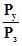
Kнн
- коэффициент нормативной нагрузки загрязнений сточных вод на водоем, равный -
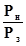
Ру - количество загрязнений, которое должно быть удалено из сточных вод;
Рн - количество загрязнений, допустимое к сбросу в водоем (ПДС);
Рз - количество загрязняющих веществ в сточных водах;
6.11.1. Многие промышленные объекты при строительстве и эксплуатации оказывают негативное воздействие на состояние рыбных запасов рек и водоемов, из которых осуществляется их водоснабжение или в которые сбрасываются их сточные воды.
6.11.2. Для предупреждения негативного воздействия проектируемого объекта на состояние рыбных запасов необходимо определить:
- факторы воздействия объекта на условия формирования рыбных запасов в используемом водоеме или водотоке с учетом их состояния на период проектирования;
- границы акватории, попадающей в зону влияния объекта;
- характер и степень воздействия каждого фактора на рыбные запасы;
- состав и объем необходимых рыбоохранных или восстановительных мероприятий.
6.11.3. К мероприятиям по предупреждению ущерба и восстановлению рыбных запасов относят:
- размещение площадок строительства предприятий, зданий и сооружений с учетом расположения в водоемах и водотоках крупных нерестилищ промысловых видов рыб и наиболее продуктивных нагульных площадей, особенно молоди;
- оборудование водозаборных сооружений предприятия на водоемах и реках, имеющих рыбохозяйственное значение, рыбозащитными устройствами и сооружениями;
- строительство рыбопропускных сооружений при плотинах на водотоках, имеющих рыбохозяйственное значение;
- обеспечение очистки сточных и ливневых вод до уровня, удовлетворяющего рыбохозяйственным требованиям;
- выбор технологии производства строительных работ на акватории водного объекта и на прилегающей территории с учетом требований органов рыбоохраны;
- установление оптимальных рыбохозяйственных попусков в нижние бьефы гидроузлов и плотин;
- восстановление нарушенных участков прибрежья и нерестилищ или создание искусственных нерестилищ при обваловании или изъятии нерестовых и нагульных участков акватории;
- использование при технической возможности и экономической целесообразности прудов и водоемов-охладителей для целей рыборазведения.
6.11.4. Исходными данными для разработки рыбоохранных мероприятий являются:
- общая рыбохозяйственная характеристика водного объекта;
- рыбохозяйственная характеристика участка акватории водоема или водотока в границах влияния проектируемого объекта.
6.11.5. Общая рыбохозяйственная характеристика водного объекта должна содержать сведения о:
- рыбохозяйственной категории водного объекта;
- видовом составе основных промысловых и проходных видов рыб;
- существующем рыбохозяйственном использовании водоема или водотока (по данным уловов за последние пять лет);
- перспективах рыбохозяйственного использования водного объекта.
6.11.6. Рыбохозяйственная характеристика акватории или участка водоема (водотока) в границах влияния проектируемого объекта должна содержать данные о:
- расположении, границах, площади и продуктивности нерестилищ с указанием видового состава нерестующихся промысловых рыб и сроков нереста;
- наличии мест концентрации молоди с указанием их границ, площади, а также видового состава, периодов выклева молоди и их плотности (концентрации) на единицу объема воды;
- наличии путей нерестовых и проходных видов рыб с указанием сроков миграций и размерно-видового состава мигрантов;
- наличии зимовальных ям, их площади, границах, видовом и возрастном составе рыб, зимующих на них, плотностях зимних скоплений рыб.
Исходные данные представляются органами рыбоохраны на основании материалов государственного учета или рыбохозяйственного кадастра водного объекта.
6.11.7. К рыбозащитным мероприятиям при отборе воды водозаборными сооружениями относят:
- ограничение, при соответствующем рыбохозяйственном технико-экономическом обосновании, водоотбора в период ската молоди ценных промысловых рыб (осетровых, сельдевых, лососевых);
- размещение водозаборных оголовков на горизонтах, где концентрация молоди ценных промысловых видов рыб в створе водозабора в течение сезона стабильно наименьшая.
Для предупреждения травмирования и гибели молоди рыб на водозаборных сооружениях надлежит проектировать рыбозащитные сооружения и устройства.
6.11.8. Тип, параметры, компоновку рыбозащитных устройств и сооружений назначают с учетом:
- типа и расположения водозабора;
- расхода, глубины и скорости водотока;
- максимальных и минимальных уровней в водном объекте по данным многолетних наблюдений;
- количества взвеси и насосов в зоне водозабора;
- размерно-видового состава, морфометрических, физиологических и других характеристик защищаемых рыб.
Рыбозащитные устройства должны обеспечивать предупреждение травмирования и гибели в водозаборах рыб с длиной тела более 30 мм. Эффективность рыбозащитных сооружений для рыб промысловых видов размером более 12 мм должна быть не менее 70 %.
Рыбопропускные сооружения следует предусматривать в проектах гидроузлов для пропуска из нижнего в верхний бьеф проходных и полупроходных рыб в целях сохранения их естественного воспроизводства.
Проектирование рыбозащитных сооружений и устройств, обоснование целесообразности строительства рыбопропускного сооружения, выбор их типа осуществляются в соответствии с требованиями СНиП 2.06.07-87.
6.11.9. При производстве строительных работ на водоемах и водотоках, имеющих рыбохозяйственное значение, необходимо предусматривать следующие мероприятия:
- осуществлять работы строго по проектам с соблюдением сроков строительства, согласованных с органами рыбоохраны;
- размещать места складирования грунта и строительных материалов в незатопляемой весенним паводком зоне с последующей рекультивацией поврежденного участка;
- обеспечивать возможность свободного прохождения рыб на места нереста и нагула при строительстве переездов, прокладке трубопроводов и строительстве других видов коммуникаций.
6.11.10. Рыбоохранные мероприятия и сооружения разрабатываются специализированными группами (отделами) проектных институтов или рыбохозяйственными организациями по договорам.
Основные проектные решения по охране рыбных запасов должны обосновываться сравнением показателей возможных вариантов размещения промышленного объекта и его сооружений. При этом необходимо учитывать всю совокупность показателей, характеризующих как эффект обеспечения охраны рыбных запасов, так и технико-экономический уровень мероприятий и сооружений основного производственного комплекса предприятия.
Согласование проектных решений рыбоохранных мероприятий с органами рыбоохраны осуществляется в порядке, установленном СНиП 11-01-95 и Инструкцией о порядке согласования и выдачи разрешений на специальное водопользование.
6.12.1. Для эксплуатации промышленных объектов с большим объемом водопотребления проектируют водозаборные сооружения, оказывающие существенное воздействие на естественное состояние и характеристики рек и водоемов.
Наиболее значительные изменения водозаборные сооружения оказывают на русло рек источников водоснабжения, что часто приводит к необходимости регулирования их руслового режима.
6.12.2. Необходимость регулирования русла определяется:
- недостаточными меженными глубинами реки в месте расположения водозабора;
- отсутствием на плесах глубин, достаточных для устройства водозабора;
- наличием длинного перекатного или разветвленного участка реки;
- невозможностью расположения водозабора в глубоком фарватере из-за значительного расстояния до него от уреза воды или по требованиям судоходства;
- процессами переформирования русла, возникающими в период эксплуатации водозабора.
Выбор мероприятий по улучшению руслового режима и увеличению глубины водного объекта определяется величиной отбора воды, местными природными условиями, водностью, хозяйственным использованием реки и экономическими показателями.
6.12.3. Для обеспечения необходимых глубин в водотоке выполняют:
- регулирование русла;
- дноуглубление;
- строительство плотин (регулирование уровенного режима).
Регулирование не должно нарушать интересы других водопользователей, вызывать подмыв берегов, отложение насосов у нижерасположенных водоприемников, приводить к обмелению соседних участков реки, а также способствовать образованию донных течений, направляющих воду в сторону от водозаборных сооружений.
Регулирование рек при устройстве водозаборов обычно осуществляют для условий меженного состояния потока, характеризующегося низкими горизонтами воды в реке.
6.12.4. Регулирование русла реки также выполняют:
- при неустойчивом русле реки в районе водозабора;
- в тех случаях, когда подвод потока к водозабору не может быть обеспечен дноуглублением или выравниванием русла;
- при возведении гидротехнических сооружений (дамб, шпор и др.), вызывающих неблагоприятные течения и вредные русловые переформирования;
- при образовании ледяных заторов, вызывающих размыв одних участков русла и отложение наносов на других.
Размеры и формы регуляционных сооружений у водозабора назначаются в соответствии с гидравлическими параметрами реки, компоновкой и типом водозаборных сооружений.
Конструкции регулирующих сооружений должны предусматривать максимальное использование местных строительных материалов.
6.12.5. Запрещается без специальных разрешений и согласований регулировать водные объекты, находящиеся на территории государственных заповедников (заказников) и в близи их границ, а также в верховьях рек, расположенных в заповедниках (заказниках).
Не рекомендуется регулировать реки при ширине поймы менее 300 м и поперечных уклонах прилегающих участков более 0,002, а также вблизи городов и населенных пунктов на территориях, используемых для массового отдыха населения.
6.12.6. Все проектные решения, в том числе по сооружению капитальных набережных, обвалованию, углублению русел и др., необходимо согласовывать с органами государственного водного надзора.
Санитарный бытовой расход в реках с незарегулированным стоком после забора воды всеми потребителями должен быть не менее 75 % минимального среднемесячного расхода в год с 95 %-й обеспеченностью.
Для водотоков с зарегулированным стоком следует оставлять ниже подпорных сооружений установленный органами государственного водного надзора гарантированный санитарный попуск. Размеры санитарного попуска устанавливаются в процессе согласования условий строительства регулирующих сооружений.
6.13.1. Сметная стоимость объектов водоохранного назначения определяется на основании объектных и локальных сметных расчетов (смет) с учетом доли средств, предусматриваемых в главах 1, 8 - 12 сводного сметного расчета и резерва средств на непредвиденные работы и затраты.
По своему назначению водоохранные мероприятия могут быть одноцелевые и многоцелевые.
Одноцелевые мероприятия направлены исключительно на предотвращение загрязнения водных объектов, многоцелевые - не только не предотвращают загрязнение среды, но и приводят к улучшению прямых результатов производственной деятельности, увеличению выпуска и повышению качества продукции, снижению ее себестоимости.
По объектам многоцелевого назначения, обеспечивающим одновременно производственную и водоохранную деятельность проектируемого объекта (цеха), доля капитальных затрат на охрану среды определяется расчетным путем, а при невозможности его осуществления - экспертным.
6.13.2. В подразделе проекта сметную стоимость объектов и мероприятий водоохранного назначения определяют на основе данных отделов-разработчиков проектной организации по водоснабжению и канализации и представляют по форме таблицы 54.
СМЕТНАЯ СТОИМОСТЬ ОБЪЕКТОВ И МЕРОПРИЯТИЙ ВОДООХРАННОГО НАЗНАЧЕНИЯ
|
ТЕХНИЧЕСКАЯ ХАРАКТЕРИСТИКА ОБЪЕКТОВ, МЕРОПРИЯТИЙ (РАЗМЕРЫ, РАСХОДЫ, ПРОИЗВОДИТЕЛЬНОСТЬ) |
КОЛИЧЕСТВО |
СМЕТНАЯ СТОИМОСТЬ, тыс. руб. |
ОБОСНОВАНИЕ (НОМЕРА СМЕТНЫХ РАСЧЕТОВ, АРХИВНЫЕ НОМЕРА, ОТДЕЛ-РАЗРАБОТЧИК) |
|||
|
Всего |
в том числе |
|||||
|
СМР |
Оборудование |
|||||
|
1 |
2 |
3 |
4 |
5 |
6 |
7 |
|
Итого: |
||||||
6.13.3. Для проведения анализа и оценки экономической эффективности принимаемых проектных решений по охране водных ресурсов от загрязнения и истощения в подразделе проекта должны быть определены удельные капитальные и эксплуатационные затраты на 1 м3 потребляемой воды и 1 м3 отводимых сточных вод.
Определение удельных капитальных и эксплуатационных затрат на водоохранные мероприятия проводят для каждого вида сооружений и мероприятий отдельно. Результаты определения удельных затрат на водоохранные мероприятия представляют по форме таблицы 55.
УДЕЛЬНЫЕ КАПИТАЛЬНЫЕ И ЭКСПЛУАТАЦИОННЫЕ ЗАТРАТЫ НА ВОДООХРАННЫЕ МЕРОПРИЯТИЯ
|
Техническая характеристика (мощность, производительность), тыс. м3/сут |
Капитальные вложения, тыс. руб. |
Строительно-монтажные работы, тыс. руб |
Оборудование тыс. руб |
Удельные затраты |
Эксплуатационные расходы тыс. руб/сут |
Удельные эксплуатационные затраты руб/сут. м3 |
|||
|
По капитальным вложениям руб/м3 |
На СМР руб/м3 |
На оборудование руб/м3 |
|||||||
|
1 |
2 |
3 |
4 |
5 |
6 |
7 |
8 |
9 |
10 |
6.14.1. При разработке подраздела по охране поверхностных и подземных вод от загрязнения и истощения при строительстве проектируемого объекта должно быть проведено согласование условий его специального водопользования.
6.14.2. Согласование условий специального водопользования с органами госнадзора по регулированию использования и охране вод осуществляют:
- для строительства новых, а также при реконструкции, техническом перевооружении или расширении действующих предприятий и сооружений, связанным с увеличением потребления воды, сброса сточных вод и ухудшением их качественного состава - при выборе площадки (трассы) строительства объекта;
- при реконструкции, техническом перевооружении или расширении действующих предприятий, не связанным с освоением дополнительной территории, - до составления задания на проектирование.
6.14.3. Генеральный проектировщик направляет органам водного надзора материалы и обосновывающие расчеты по рекомендуемой площадке (трассе) строительства или предложения по реконструкции или расширению действующего объекта.
При этом органам госнадзора представляют:
- сведения о производственной мощности проектируемого объекта;
- рассмотренные варианты водоснабжения и отведения сточных вод и обоснование рекомендуемого варианта с указанием мест водозаборов и выпусков сточных вод;
- предельные величины потребляемых и отводимых вод;
- условия отведения и очистки сточных вод;
- сведения о намечаемых мероприятиях по охране рыбных запасов (на водных объектах, имеющих рыбохозяйственное значение).
Документом о согласовании условий специального водопользования является акт выбора площадки (трассы) строительства, подписанный представителем органов государственного надзора и утвержденный в установленном порядке заказчиком.
6.14.4. Выдача разрешений на специальное водопользование проводится органами по регулированию использования и охране вод в процессе проектирования объекта до утверждения проекта. Разрешение на специальное водопользование получает заказчик проекта или по его поручению проектная организация - генеральный проектировщик.
При реконструкции или расширении действующих предприятий, не имеющих разрешений на специальное водопользование для существующих объектов, оформляется одно разрешение на специальное водопользование, в котором указывают условия водопользования, как до реконструкции, так и после нее.
6.14.5. В отдельных случаях возможен сброс производственных сточных вод промышленного объекта в системы канализации городов и населенных пунктов, расположенных в районе размещения проектируемого предприятия. При этом водопроводно-канализационное предприятие населенного пункта, руководствуясь имеющимся разрешением на специальное водопользование, выданным органами государственного надзора, заключает с промышленным объектом договор на прием производственных сточных вод в канализационную сеть населенного пункта.
6.14.6. В системы канализации населенных пунктов могут быть приняты производственные сточные воды, которые не вызывают нарушений в работе канализационных сетей и сооружений и могут быть очищены совместно со сточными водами населенных пунктов до требований, регламентированных «Правилами охраны поверхностных вод от загрязнения сточными водами».
6.14.7. Разрешение на сброс производственных сточных вод в системы канализации населенного пункта для вновь построенных или реконструированных промышленных предприятий выдается только при наличии необходимых мощностей действующих очистных сооружений канализации населенного пункта и после заключения договора на прием сточных вод.
Если по условиям приема производственных сточных вод промышленного объекта требуется их локальная очистка, то водопроводно-канализационное предприятие разрешает присоединение этих предприятий к системе канализации населенного пункта только после ввода на них в эксплуатацию локальных очистных сооружений.
6.14.8. Основанием для выдачи разрешений на сброс производственных сточных вод в системы канализации населенного пункта являются:
- для вновь построенных и реконструированных промышленных предприятий - согласованная с водопроводно-канализационным предприятием проектная документация;
- для действующих предприятий - паспорт водного хозяйства промышленного объекта.
6.14.9. Сброс сточных вод строящегося (реконструированного) промышленного объекта осуществляется на основе технических условий на его подключение к системам канализации населенного пункта. Технические условия выдаются при наличии резервов мощности канализационной системы по количеству и качественным показателям городских сточных вод.
6.14.10. В выводах к разработанному подразделу проекта по охране водных ресурсов от загрязнения и истощения приводят:
- общий объем водопотребления проектируемого объекта, наименование источников водоснабжения;
- объемы производственного и хозяйственно-питьевого водопотребления;
- показатели использования воды на проектируемых производствах;
- показатели удельного потребления свежей воды на единицу продукции;
- общий объем водоотведения (сброса сточных вод) в водные объекты, наименований водных объектов - приемников сточных вод;
- количество отводимых производственных и бытовых сточных вод;
- перечень основных загрязняющих веществ в производственных сточных водах и их количество;
- удельный объем сточных вод на единицу продукции;
- данные о капитальных, эксплуатационных и удельных затратах на охрану и рациональное использование водных ресурсов и их экономическая эффективность (определяется в соответствии с требованиями подраздела 10).
В приложения к материалам подраздела включают:
- копии запросов проектной организации и ответов органов по регулированию использования и охране вод МПР России, органов государственного санитарного надзора Минздрава России, органов рыбоохраны Минрыбхоза, органов Росгидромета;
- копии согласований проектных решений по охране вод с органами водного надзора в случае их отступления от действующих норм и правил;
- перечень и краткую характеристику научно-исследовательских работ, которые необходимо выполнить для осуществления принятых решений по охране водных ресурсов;
- схему генплана объекта с сетями водоснабжения и канализации с указанием места забора воды из водного объекта, мест сброса сточных вод и точек присоединения сторонних (вторичных) водопользователей;
- схему генплана очистных сооружений с коммуникациями, с указанием площадки для строительства очистных сооружений, источников и приемника сточных вод, мест намечаемого расположения водосбросных и других сооружений;
- технологическую схему работы очистных сооружений;
- ситуационный план (картосхему) района с указанием водоохранных зон водных объектов, используемых для водоснабжения (водоотведения) проектируемого предприятия, расположения водозабора, накопителей и выпусков сточных вод.
7.1.1. При эксплуатации промышленных объектов особую актуальность приобретают вопросы удаления и складирования, а в дальнейшем утилизации и захоронения отходов производства. Промышленные отходы требуют для складирования не только значительных площадей (устройство полигонов), но и загрязняют вредными веществами, пылью, газообразными выделениями атмосферу, территорию, поверхностные и подземные воды. Особенно сильным негативным воздействием обладают отходы предприятий химической, добывающей, топливной и металлургических отраслей промышленности.
7.1.2. Для безопасного складирования отходов в подразделе проекта по охране окружающей среды при складировании отходов производства необходимо привести обоснование взаимного расположения производственных цехов и сооружений предприятия, селитебных территорий и мест для размещения отходов. Сложность выбора оптимальных решений при складировании отходов заключается не только в большом разнообразии геологических и топографических условий территории, но и в резком отличии характера воздействия различных вредных веществ, содержащихся в отходах, на состояние окружающей среды.
В подразделе следует выполнить оценку возможного воздействия отходов проектируемых производств на компоненты окружающей среды и подготовить их характеристику с указанием сырья и условий образования.
7.1.3. Характеристика отходов производства должна содержать наименование мест образования (производства, цеха, оборудование), периодичность образования и способ удаления, класс опасности (токсичности), количество, физико-химические свойства (состав, содержание элементов, состояние, влажность, вес и т.п.) и способы дальнейшего использования отходов.
Перечисленные данные составляются по форме таблицы 56.
ХАРАКТЕРИСТИКА ОТХОДОВ И СПОСОБОВ ИХ УДАЛЕНИЯ (СКЛАДИРОВАНИЯ) НА ПРОМЫШЛЕННОМ ОБЪЕКТЕ
|
МЕСТО ОБРАЗОВАНИЯ ОТХОДОВ (ПРОИЗВОДСТВО, ЦЕХ, ТЕХНОЛОГИЧЕСКИЙ ПРОЦЕСС, УСТАНОВКА) |
КОД, КЛАСС ОПАСНОСТИ ОТХОДОВ |
ФИЗИКО-ХИМИЧЕСКАЯ ХАРАКТЕРИСТИКА ОТВОДОВ (СОСТАВ, СОДЕРЖАНИЕ ЭЛЕМЕНТОВ, СОСТОЯНИЕ, ВЕС И Т.П.) |
ПЕРИОДИЧНОСТЬ ОБРАЗОВАНИЯ ОТХОДОВ |
КОЛИЧЕСТВО ОТХОДОВ (ВСЕГО) |
ИСПОЛЬЗОВАНИЕ ОТХОДОВ |
СПОСОБ УДАЛЕНИЯ, СКЛАДИРОВАНИЯ ОТХОДОВ |
|||
|
т/сут |
т/год |
Передано другим предприятиям т/год |
Заскладировано в накопителях, на полигонах т/год |
||||||
|
1 |
2 |
3 |
4 |
5 |
6 |
7 |
8 |
9 |
10 |
7.2.1. Отходы промышленного производства подразделяют на токсичные и нетоксичные. Наибольшую опасность для состояния окружающей среды представляют токсичные промышленные отходы.
Классификацию и токсичность отходов определяют в соответствии с классификатором токсичных промышленных отходов и методическими рекомендациями по определению их токсичности, утвержденными органами Департамента Госсанэпиднадзора Министерства здравоохранения Российской Федерации.
7.2.2. Основные виды токсичных промышленных отходов в зависимости от проектируемых производств и отрасли промышленности подразделяют на:
по предприятиям цветной металлургии:
- мышьякосодержащие неорганические твердые отходы и шламы;
- ртутьсодержащие отходы;
- цианосодержащие сточные воды и шламы;
- отходы, содержащие свинец, цинк, кадмий, никель, кобальт, висмут и их соединения;
по предприятиям химической промышленности:
- отходы, содержащие соединения олова, щелочных металлов;
- отходы, содержащие галогенорганические, фосфорорганические или кремнийорганические соединения;
- шламы производства тетраэтилсвинца;
- использованные органические растворители;
по предприятиям производства минеральных удобрений:
- фосфорсодержащие и фторсодержащие отходы и шламы;
- пестициды и гербициды, пришедшие в негодность и запрещенные к применению;
по машиностроительным предприятиям:
- отходы гальванических производств;
по предприятиям нефтяной и нефтехимической промышленности:
- отходы нефтепереработки и нефтехимии;
- отходы переработки сланцев;
- использованные органические растворители;
по предприятиям черной металлургии:
- хромосодержащие отходы;
- отходы карбонилов железа и никеля;
- шламы и сточные воды;
по предприятиям добывающих отраслей промышленности:
- отходы процессов обогащения;
- хвосты гидрометаллургических производств и т.п.
7.2.3. Токсичные промышленные отходы по своим физико-химическим свойствам подразделяются на группы, в зависимости от которых применяются различные методы их обезвреживания и складирования. Перечень групп отходов промышленных предприятий с указанием их состава и состояния, а также возможных методов переработки и захоронения на специализированных полигонах (приему на специализированные полигоны подлежат токсичные промышленные отходы 1 - 3 классов опасности) приведен в 4.
7.2.4. Жидкие токсичные промышленные отходы перед складированием должны быть обезвожены на предприятии, прием жидких токсичных отходов на полигоны захоронения допускается только при соответствующем технико-экономическом обосновании.
7.2.5. Твердые промышленные отходы 4 класса опасности по согласованию с органами санитарно-эпидемиологической и коммунальной служб могут вывозиться на полигоны складирования городских бытовых отходов, прием твердых промышленных отходов 4 класса опасности на полигоны захоронения токсичных промышленных отходов допускается в исключительных случаях при соответствующем технико-экономическом обосновании.
7.3.1. Складирование промышленных отходов следует осуществлять на площадках, исключающих загрязнение окружающей среды и расположенных с подветренной стороны (в соответствии с розой ветров) по отношению к селитебным территориям и населенным пунктам.
Поверхностный сток с вышерасположенной территории следует отводить от площадки складирования при помощи нагорных канав в гидрографическую сеть. При неблагоприятных гидрогеологических условиях участка необходимо предусматривать противофильтрационные мероприятия и отвод загрязненного поверхностного стока с площадки складирования на очистные сооружения.
7.3.2. Общую характеристику накопителей для складирования и хранения отходов промышленного производства (полигонов, складов, шламо и хвостохранилищ) с указанием местонахождения, емкости, типа ограждающих сооружений, срока эксплуатации, способов контроля за состоянием окружающей среды следует приводить по форме таблицы 57.
ХАРАКТЕРИСТИКА НАКОПИТЕЛЕЙ (ПОЛИГОНОВ) ДЛЯ СКЛАДИРОВАНИЯ (ЗАХОРОНЕНИЯ) ОТХОДОВ ПРОМЫШЛЕННОГО ПРОИЗВОДСТВА
|
Местонахождение (координаты на карте, расстояние до ближайшего населенного пункта) |
Геометрические размеры накопителя (полигона) |
Тип ограждающих сооружений и их параметры |
Размер санитарно-защитной зоны (м) |
Количество отходов, принимаемых за год т, м3 |
Способ транспортировки (подачи отходов) |
Срок службы (лет) |
Селитебная территория, хоз. объекты, попадающие в зону влияния |
Способы контроля за состоянием окр. среды |
|||
|
Площадь га, км2 |
Высота (м) |
Емкость (тыс. м3) |
|||||||||
|
1 |
2 |
3 |
4 |
5 |
6 |
7 |
8 |
9 |
10 |
11 |
12 |
7.3.3. Перед передачей промышленных отходов на полигоны захоронения следует выявить возможность утилизации и дальнейшего использования различных веществ и металлов, содержащихся в отходах, в других отраслях промышленности и народного хозяйства. При этом из отходов гальванических производств должны быть извлечены ценные металлы, органические горючие отходы подлежат термическому обезвреживанию с утилизацией тепла и использованием зол и шлаков в строительстве, для производства удобрений и сельском хозяйстве, отходы процессов обогащения складируются в хвостохранилища с последующим доизвлечением полезных компонентов при совершенствовании технологии обогащения и т.п.
7.3.4. Характер и виды дальнейшего использования отходов проектируемого предприятия в других отраслях промышленности должны быть отражены при разработке настоящего подраздела проектной документации. При этом в материалах подраздела следует указать, какое количество отходов будет передано другим предприятиям, сколько будет заскладировано в накопителях и на полигонах, способ их транспортировки и другие параметры.
7.3.5. В тех случаях, когда при утилизации отходов на проектируемом объекте происходит интенсивное загрязнение компонентов среды, в подразделе проекта следует предусмотреть все необходимые мероприятия по нейтрализации вредных воздействий оборудования и агрегатов по утилизации отходов.
7.3.6. Виды и формы воздействия накопителей (полигонов, складов) отходов промышленного производства определяют по объектам-аналогам с учетом топографических, инженерно-геологических и гидрогеологических условий их размещения на территории или по нормативам, разработанным различными министерствами и ведомствами для данного типа сооружений. При необходимости данные о параметрах воздействия накопителей отходов на окружающую природную среду выносят на картографическую основу масштаба 1:10000 - 1:50000.
7.4.1. Сметная стоимость объектов и мероприятий для складирования (утилизации) отходов промышленного объекта определяется на основе объектных и локальных смет (сметных расчетов) по данным отделов-разработчиков проектной организации.
7.4.2. При определении сметной стоимости объектов и мероприятий для складирования отходов проектируемого объекта должны учитываться затраты на подготовку участка складирования, строительство транспортных коммуникаций, строительство нагорных канав, дренажей, противофильтрационные мероприятия и другие виды работ.
7.4.3. Общую сметную стоимость объектов и мероприятий для складирования отходов предприятия следует представлять по форме таблицы 58.
СМЕТНАЯ СТОИМОСТЬ ОБЪЕКТОВ И МЕРОПРИЯТИЙ ДЛЯ СКЛАДИРОВАНИЯ ОТХОДОВ ПРОМЫШЛЕННОГО ОБЪЕКТА.
|
№№ ПП |
НАИМЕНОВАНИЕ НАКОПИТЕЛЯ, ПОЛИГОНА, ХВОСТОХРАНИЛИЩА, МЕРОПРИЯТИЯ |
МЕСТОНАХОЖДЕНИЕ (КООРДИНАТЫ НА КАРТЕ) |
СМЕТНАЯ СТОИМОСТЬ (ТЫС. РУБ.) |
НОМЕР СМЕТЫ (СМЕТНОГО РАСЧЕТА), ОТДЕЛ-РАЗРАБОТЧИК, АРХИВНЫЙ НОМЕР |
ПРИМЕЧАНИЕ |
||
|
ВСЕГО |
в том числе |
||||||
|
СМР |
Оборудование |
||||||
|
1 |
2 |
3 |
4 |
5 |
6 |
7 |
8 |
*Выполняется только для крупных объектов или по особому требованию территориальных органов по охране окружающей среды.
8.1.1. Строительство крупных промышленных и жилищно-гражданских объектов всегда затрагивает растительный и животный мир района территории, на которой намечается их размещение. Техногенные воздействия от крупных объектов на флору и фауну распространяется на значительные, иногда на десятки и сотни километров, расстояния от места их расположения.
Развитие растительности зависит от климатических условий территории, геоботанической зоны, рельефа, почв и т.п. Видовой состав и размеры популяций животного мира тесно связаны с характером растительности на рассматриваемой территории, кормовой базой, состоянием водотоков и водоемов, рельефом местности.
8.1.2. Строительство и эксплуатация объекта всегда приводит к нарушению условий развития растительного и животного мира, вырубке лесов и кустарников, деградации болот, изменению гидрологического режима водных объектов, ухудшению путей миграции животных, уменьшению размеров популяций, а то и просто вымиранию отдельных видов животных.
8.1.3. При разработке настоящего подраздела проектной документации должна быть подготовлена общая характеристика существующего состояния растительности и животного мира в районе размещения объекта, проведена оценка его возможного воздействия на флору и фауну района и определен ущерб от его размещения на рассматриваемой территории, подобраны мероприятия по охране растительного и животного мира и мероприятия по компенсации наносимого ущерба.
8.1.4. Основными факторами воздействия проектируемых объектов на растительный и животный мир являются:
- отчуждение территории под строительство;
- прокладка дорог и линий коммуникаций;
- загрязнение компонентов среды взвешенными, химическими, радиоактивными веществами, аэрозолями и т.п.;
- вырубка леса и изменение характера землепользования на территории строительства и прилегающих землях;
- осушение болот или подтопление территории;
- изменение гидрологического режима водных объектов, расположенных в зоне влияния проектируемого объекта;
- изменение рельефа и параметров поверхностного стока;
- шумовые, вибрационные, световые и электромагнитные виды воздействий при строительстве и эксплуатации объекта.
8.1.5. Оценка воздействия проектируемого объекта на растительный и животный мир должна определять площади вырубки лесов и осушения болот, размеры зоны воздействия загрязняющих веществ, сбрасываемых объектом, характер нарушения растительного покрова и условий обитания различных видов животных, птиц, рыб, изменения характера землепользования в районе строительства, а также негативные последствия, связанные с перечисленными факторами.
8.1.6. Сведения о состоянии растительности на рассматриваемой территории следует увязывать с параметрами рельефа и почвенными характеристиками. При этом необходимо осуществить группировку лесных, луговых и других участков территории по основным таксонометрическим признакам с выделением общих растительных ассоциаций и указанием степени их нарушения (деградации).
8.1.7. Сведения о состоянии животного мира следует увязывать с характером распространения растительности на территории, параметрами рельефа и расположением водных объектов. Они должны отражать видовой состав животных, численность и ареалы обитания, кормовую базу, пути миграции, места гнездовий и нереста, промысловую ценность различных видов животных, птиц, рыб.
8.1.8. В результате воздействия строящегося объекта уменьшаются ореолы обитания животных и площади кормовых угодий, нарушаются естественные пути миграции и резко снижаются размеры популяций некоторых видов животных вплоть до их полного исчезновения в рассматриваемом районе.
8.2.1. Характеристика растительности района строительства должна отражать:
- зональные особенности распределения растительности на рассматриваемой территории, типы лесов, кустарников, луговой и травянистой растительности;
- площади, занимаемые лесами, кустарниками, лугами, болотами, неудобиями;
- породный состав лесов, среднюю высоту, диаметр и плотность деревьев на 1 га;
- промышленную ценность леса, его санитарное состояние;
- характер (интенсивность) и формы существующего лесопользования;
- породный состав кустарников, среднюю высоту и плотность кустарников на 1 га, их хозяйственную ценность;
- породный состав луговой растительности, ее хозяйственная ценность;
- наличие редких и реликтовых видов растительности, деревьев, занесенных в Красную книгу;
- наличие и площади лесонасаждений, садов, парков, заказников, растительных памятников природы;
- существующее техногенное воздействие на растительность (поражение лесов, кустарников, лугов кислотными дождями, загрязнением атмосферы и поверхностных вод, подтоплением или иссушением территории).
8.2.2. Общие сведения о состоянии растительности района размещения проектируемого объекта с учетом рельефа и почвенного покрова следует приводить в подразделе по форме таблицы 59.
8.2.3. В тех случаях, когда в районе размещения объекта имеются редкие и исчезающие виды растений, уникальные деревья и растительные сообщества, для них должны быть определены ареалы распространения (местоположение), статус вида, характер произрастания, необходимые меры охраны.
ХАРАКТЕРИСТИКА РАСТИТЕЛЬНОСТИ В РАЙОНЕ РАЗМЕЩЕНИЯ ПРОЕКТИРУЕМОГО ОБЪЕКТА
|
Наименование растительности (виды деревьев, кустарников, луговой растительности) |
Площади, ареалы распространения (га) |
Почвы, (типы и подтипы почв, основные характеристики) |
Хозяйственная ценность растительности (режим лесопользования, характер использования лугов) |
Средняя высота, диаметр, плотность деревьев и кустарников на 1 га |
Рельеф и его особенности (крутизна и протяженность склонов, наличие овражно-балочной сети и т.п.) |
Существующее воздействие на растительность (кислотные дожди, подтопление, иссушение территории и т.п.) |
Источники техногенных воздействий |
Примечание |
|
|
1 |
2 |
3 |
4 |
5 |
6 |
7 |
8 |
9 |
10 |
Примечание: Данные таблицы 59 должны быть дополнены картосхемой территории в масштабе 1:50000 с указанием ареалов распространения видов растительности, места размещения проектируемого объекта, размеров его санитарно-защитной зоны и т.п.
Указанные данные по редким и исчезающим видам растений следует приводить по форме таблицы 60.
ХАРАКТЕРИСТИКА РЕДКИХ И ИСЧЕЗАЮЩИХ ВИДОВ РАСТИТЕЛЬНОСТИ
|
СТАТУС ВИДА |
АРЕАЛ РАСПРОСТРАНЕНИЯ (га) |
ПЛОТНОСТЬ (КОЛИЧЕСТВО) РАСТЕНИЙ на 1 га |
ХАРАКТЕРИСТИКА ПРОИЗРАСТАНИЯ |
НЕОБХОДИМЫЕ МЕРЫ ОХРАНЫ |
|
|
1 |
2 |
3 |
4 |
5 |
6 |
Примечание: Данные таблицы 60 дополняются картосхемой территории в масштабе 1:50000.
8.2.4. При наличии на рассматриваемой территории лекарственных растений, ягодников, кедровников и других ценных культур должны быть определены их перечень, ареал распространения, сырьевые запасы, форма заготовки и применения. Эти данные следует приводить по форме таблицы 61.
ХАРАКТЕРИСТИКА ЛЕКАРСТВЕННЫХ И ПРОМЫСЛОВЫХ ВИДОВ РАСТЕНИЙ
|
АРЕАЛ РАСПРОСТРАНЕНИЯ (га) (отображается на картосхеме) |
ВИД СЫРЬЯ (молодые побеги, листья, ягоды, корневища, плоды и т.п.) |
ОРИЕНТИРОВОЧНЫЕ ЗАПАСЫ (много, мало, кг/га) |
ФОРМА ЗАГОТОВКИ (промхозом, населением) |
ФОРМА ПРИМЕНЕНИЯ |
|
|
1 |
2 |
3 |
4 |
5 |
6 |
|
Брусника |
5 га |
ягоды |
500 кг/га |
+/- |
ПС, ЛС |
Примечание: (+) заготовки ведутся, (-) заготовки не ведутся, (ПС) пищевое сырье, (ЛС) лекарственное сырье.
8.3.1. Оценка воздействия объекта на состояние растительности подразумевает выявление изменений:
- флористического разнообразия растительности;
- количества основных (преобладающих), а также редких и исчезающих видов растительности;
- ареалов распространения различных видов растительности;
- структуры растительного и почвенного покрова на различных участках местности в зоне воздействия объекта;
- соотношения площадей, занятых различными видами растительности;
- границ растительных сообществ и размеров участков, подвергающихся подтоплению, заболачиванию, иссушению.
8.3.2. Оценку воздействия объекта на изменения флористического разнообразия растительности, структуры растительного и почвенного покрова на различных участках местности, определение изменения границ растительных сообществ и другие характеристики воздействия на растительный мир выполняют по формам таблиц 59 - 61 с выносом данных на карту территории в масштабе 1:50000 (1:100000).
8.4.1. Характеристики животного мира района должны отражать:
- видовой состав диких животных, птиц, пресмыкающихся и др.;
- численность и ареалы обитания по видам и семействам животного мира; кормовую базу;
- пути миграции животных;
- места гнездовий боровой и болотной дичи;
- промысловую ценность различных видов животных и птиц;
- наличие редких и исчезающих видов животных, птиц, рыб, занесенных в Красную книгу;
- наличие и расположение звероферм, хозяйств по разведению диких животных; их виды и поголовье; кормовая база;
- подверженность животного мира антропогенному воздействию и его трансформацию.
8.4.2. Характеристики состояния животного мира определяются в зависимости от сложившихся эколого-фаунистических комплексов, свойственных различным ландшафтам и географическим зонам. Для диких животных должны быть определены статус вида, ареалы распространения, характеристики местообитания, среднее количество особей, промысловая ценность и необходимые меры охраны.
Характеристику животного мира района размещения объекта следует составлять по форме таблицы 62.
Плотность промысловых животных (птиц, рыб) следует определять с учетом структуры лесных угодий, затрагиваемых строительством, состояния водных объектов, наличия кормовой базы, гнездовий и других факторов, влияющих на размеры популяций животного мира.
ХАРАКТЕРИСТИКА ЖИВОТНЫХ И ПТИЦ, ОБИТАЮЩИХ В РАЙОНЕ РАЗМЕЩЕНИЯ ОБЪЕКТА
|
Статус вида |
Ареал распространения (га) |
Размер популяции (количество особей) (тыс. шт.) |
Характеристика местообитания |
Промысловая ценность вида |
Необходимые меры охраны |
|
|
1 |
2 |
3 |
4 |
5 |
6 |
7 |
8.4.3. Характеристики животного мира района должны быть дополнены картой территории в масштабе 1:50000 (1:100000) с указанием расположения проектируемого объекта, существующих промышленных предприятий и их санитарно-защитных зон, населенных пунктов, лесов, заповедников, заказников, водоохранных зон водных объектов и ареалов распространения основных видов животных в районе строительства.
8.4.4. В тех случаях, когда в зону воздействия проектируемого объекта попадают реки и водоемы, имеющие рыбопромысловое значение, составляются их ихтиологические характеристики. Они должны содержать:
- перечень видов рыб, обитающих в водных объектах;
- описание, местоположение, размеры и продуктивность кормовой базы;
- описание мест нагула и нерестилищ;
- оценку промыслового значения различных видов рыб за последние 5 лет.
8.5.1. Оценка воздействия объекта на состояние животного мира требует определения изменений:
- фаунистического состава животного мира и гидрофауны;
- параметров среды обитания, количества и размеров популяций животного мира;
- условий миграции различных животных и птиц;
- условий нереста и нагула промысловых видов рыб;
- характера эксплуатации промысловых животных, птиц и рыб.
8.5.2. Оценка воздействия объекта на фаунистический состав животного мира и гидрофауну, параметры среды обитания, количество и размеры популяций животных и рыб осуществляется по форме таблицы 62 с выносом необходимых данных на карту масштаба 1:50000 (1:100000).
8.5.3. Данные для оценки состояния и предполагаемого воздействия проектируемого объекта на растительный и животный мир могут быть получены в специализированных институтах АН РФ, а также в региональных организациях, занимающихся вопросами изучения растительного и животного мира. В отдельных случаях возможно проведение специальных экологических изысканий.
8.6.1. При разработке проектной документации должен быть определен комплекс природоохранных мероприятий, обеспечивающих компенсацию потерь от вырубки лесов, кустарников, трансформации лугов и пастбищ, а также потерь от деградации растительного и животного мира.
8.6.2. В качестве таких мероприятий для охраны растительного мира применяют размещение объектов строительства с учетом требований по охране среды и уникальных растительных сообществ, лесопосадки на нарушенных и неудобных землях, рекультивацию земель, землевание малопродуктивных угодий с последующей передачей их для лесохозяйственных нужд, организацию заповедников и заказников в районах распространения редких и реликтовых видов растительности, занесенных в Красную книгу.
8.6.3. Для охраны животного мира в качестве таких мероприятий применяют восстановление лесов с характеристиками, пригодными для обитания определенных видов животных, улучшение условий обитания, размножения и кормовой базы, устройство искусственных путей миграции для животных через линейные сооружения (транспортные магистрали, трубопроводы, каналы и другие сооружения), организацию заповедников и заказников.
8.6.4. Для охраны и восстановления рыбных запасов организуют жесткий контроль за сбросом сточных вод в водные объекты, имеющие рыбохозяйственное значение; улучшают места нагула и нереста промысловых рыб; строят рыбозаводы для искусственного воспроизводства ценных пород рыб; в отдельные периоды ограничивают промысловый лов рыбы и т.п.
8.7.1. Общая сметная стоимость мероприятий по охране и рациональному использованию растительного и животного мира определяется на основе результатов проведенной оценки воздействия проектируемого объекта на растительный и животный мир района.
Сметная стоимость намечаемых мероприятий должна отражать затраты на рекультивацию земель, восстановление лесов, землевание малопродуктивных угодий, улучшение кормовой базы, устройство искусственных путей миграции для животных, строительство звероферм и рыбозаводов, организацию заповедников и заказников и другие виды работ.
8.7.2. Общую сметную стоимость мероприятий по охране растительного и животного мира определяют по объектным и локальным сметам (сметным расчетам) на намечаемые виды работ и представляют по форме таблицы 63.
Таблица 63
СМЕТНАЯ СТОИМОСТЬ МЕРОПРИЯТИЙ ПО ОХРАНЕ РАСТИТЕЛЬНОГО И ЖИВОТНОГО МИРА
|
НАИМЕНОВАНИЕ МЕРОПРИЯТИЙ, РАБОТ, ОБЪЕКТОВ |
СМЕТНАЯ СТОИМОСТЬ (тыс. руб.) |
НОМЕР СМЕТЫ (СМЕТНОГО РАСЧЕТА), ОРГАНИЗАЦИЯ-РАЗРАБОТЧИК, АРХИВНЫЙ НОМЕР |
ПРИМЕЧАНИЕ |
|||
|
ВСЕГО |
в том числе |
|||||
|
СМР |
оборудование |
|||||
|
1 |
2 |
3 |
4 |
5 |
6 |
7 |
|
1 |
Рекультивация земель |
|||||
|
2 |
Землевание угодий |
|||||
|
3 |
Лесопосадки (восстановление лесов и кустарников) |
|||||
|
4 |
Лугомелиоративные работы |
|||||
|
5 |
Осушение болот |
|||||
|
6 |
Устройство путей миграции через линейные сооружения |
|||||
|
7 |
Строительство: |
|||||
|
- звероферм и питомников; |
||||||
|
- рыбозаводов; |
||||||
|
- рыбоохранных сооружений; |
||||||
|
- объектов инфраструктуры |
||||||
|
8 |
Организация заповедников и заказников |
|||||
|
9 |
Другие виды работ и объектов |
|||||
9.1.1. Экологическое прогнозирование выполняется с целью предвидения результатов (последствий) взаимодействия намечаемой хозяйственной деятельности, в данном случае строительства и эксплуатации проектируемого объекта, с компонентами окружающей среды.
9.1.2. Необходимость разработки прогноза должна специально оговариваться в техническом задании на разработку проектной документации, при этом заказчиком для составления прогноза должен предусматриваться необходимый объем финансирования и указываться интервал времени, для которого следует осуществить прогнозирование воздействия проектируемого объекта на среду.
9.1.3. Процесс экологического прогнозирования может быть представлен в следующей последовательности:
- проведение анализа параметров окружающей среды (включает оценку природных условий района расположения проектируемого объекта и существующей техногенной нагрузки от других видов хозяйственной деятельности);
- определение характера воздействия проектируемого объекта на окружающую среду с учетом данных о его назначении и специфике эксплуатации, видов и интенсивности сброса загрязняющих веществ, параметров предполагаемого нарушения природных условий района строительства и т.п.;
- установление параметров и границ экологической системы и ее компонентов, попадающих под воздействие объекта (выполняется при оценке воздействия на каждый компонент среды);
- определение значимости отдельных природных компонент, взаимодействующих с проектируемым объектом (зависит от влияния среды на объект, формирующий внешние воздействия);
- разработка прогноза взаимодействия проектируемого объекта с окружающей средой;
- верификация (проверка достоверности) разработанного прогноза.
9.1.4. В процессе строительства и эксплуатации промышленные объекты воздействуют на различные компоненты среды, к их числу относят:
- нарушение территории и почвенного слоя на участке, отведенном для строительства, вырубка леса и кустарников;
- нарушение водного режима территории при рытье котлованов и водоотливе, изменение условий поверхностного стока, а также обводнение территории за счет утечек из водонесущих коммуникаций;
- использование поверхностных и подземных вод для водоснабжения объекта;
- загрязнение воздушного бассейна, территории, водной среды атмосферными выбросами предприятия, а также взвешенными веществами (пылью), поднимаемыми ветром с поверхности нарушенных земель, карьеров, золоотвалов, шламо и хвостохранилищ;
- загрязнение водных объектов сбросом сточных вод;
- радиационное загрязнение окружающей среды;
- выбросы тепла, приводящие к повышению температуры воздуха, вод, изменению сроков ледостава, режима паводков, образованию туманов и т.п.;
- воздействие шума, вибраций, света, электромагнитных и других видов физических воздействий на прилегающую территорию;
- активизация опасных геологических процессов под воздействием нагрузок от сооружений, изменений гидрогеологического режима и условий поверхностного стока территории;
- нарушение растительности и условий обитания животного мира.
9.1.5. Экологические прогнозы обычно носят вероятностный характер, однако при интенсивном воздействии на среду и больших объемах загрязняющих веществ, выбрасываемых предприятием в атмосферу или водные объекты, деградация природы становится, хотя и нежелательным, но обязательным, результатом хозяйственной деятельности.
Экологическое прогнозирование чаще всего выполняется в условиях отсутствия исчерпывающей информации о компонентах среды, затрагиваемых намечаемой хозяйственной деятельностью, и видах воздействия, вызываемых проектируемым объектом. Это приводит к определенным погрешностям при составлении прогноза.
9.1.6. Основными факторами, снижающими достоверность экологических прогнозов, являются:
- отсутствие точных данных о воздействии проектируемого объекта на среду и ее ответной реакции;
- несоответствие объемов проводимых инженерно-экологических изысканий видам воздействия и параметрам затрагиваемой среды;
- кратковременность экологических наблюдений;
- несовершенство применяемых способов мониторинга;
- субъективность оценки получаемой информации.
9.1.7. В результате строительства в районе расположения объекта увеличивается техногенная нагрузка на среду, возрастает интенсивность использования природных ресурсов, меняются демографические условия, характер землепользования, условия ведения сельского хозяйства и другие параметры.
Разработка прогноза зависит от видов, форм и интенсивности воздействий проектируемого объекта на окружающую среду, принципов и методов составления прогнозных оценок последствий намечаемой деятельности.
9.1.8. При разработке проектно-сметной документации, прогнозирование осуществляется методами экстраполяции или экспертных оценок. При этом проводится ретроспективный анализ фондовых данных за последние 10 - 15 лет до момента составления прогноза, а основные показатели прогноза изменения окружающей среды должны быть взаимоувязаны с увеличением техногенной нагрузки от объекта в процессе его эксплуатации.
9.2.1. Загрязнение воздушного бассейна при строительстве и эксплуатации промышленного объекта является одним из основных факторов воздействия на окружающую среду. Загрязняющие вещества от выбросов предприятия рассеиваются в атмосфере под воздействием ветра, турбулентного обмена, разности температур выброса и наружного воздуха и других параметров.
В общем случае концентрация загрязняющих веществ от выбросов предприятия является функцией координат и в каждой точке местности меняется под влиянием перечисленных выше факторов.
Обычно загрязнение воздушного бассейна определяется по концентрации загрязняющих веществ в приземном слое воздуха мощностью 50 - 100 м.
9.2.2. Разработка прогноза загрязнения воздуха основывается на результатах расчетов распределения примесей загрязняющих веществ (пыли и газов) от источников выброса проектируемого объекта с учетом перспектив изменения инфраструктуры района и условий выброса загрязняющих веществ другими промышленными и жилищно-гражданскими объектами.
Для подготовки прогноза загрязнения воздушного бассейна района строительства должны быть определены:
- характеристики физико-географических и природно-климатических условий района строительства (местоположение, климатические и аэроклиматические параметры и т.п.), составляются по форме таблицы 19;
- данные о проектируемом объекте (мощность предприятия, перечень основных производств, технологические параметры и характеристики), составляются по формам таблиц 1 - 3;
- величина фонового загрязнения воздушного бассейна (перечень контролируемых веществ, их концентрация, данные о существующих источниках загрязнения воздушного бассейна и т.п.), составляются по данным местных органов Росгидромета;
- характеристики источников выброса загрязняющих веществ проектируемого объекта (составляются по форме таблицы 21);
- данные о составе и количестве выбросов загрязняющих веществ, поступающих в атмосферу после газоочистного оборудования и от неорганизованных источников объекта (составляются по форме таблицы 22 или по формам таблиц, рекомендуемым ГОСТ 17.2.3.02-78);
- данные о составе и количестве выбросов загрязняющих веществ, поступающих в атмосферу от других объектов инфраструктуры района в перспективе, составляются по материалам местных органов Росгидромета.
9.2.3. Прогнозное загрязнение воздушного бассейна в районе расположения проектируемого объекта определяется на основе расчета приземных концентраций загрязняющих веществ в воздухе от источников выброса объекта с учетом изменения параметров выброса от других объектов района. Расчеты выполняются в соответствии с требованиями «Методики расчета концентраций в атмосферном воздухе вредных веществ, содержащихся в выбросах предприятий», ОНД-86.
9.2.4. Прогнозная концентрация загрязняющих веществ определяется для условий полной загрузки и нормальной работы основного технологического и газоочистного оборудования проектируемого объекта. Уровень загрязнения рассчитывается отдельно для каждого вредного вещества или группы веществ, обладающих эффектом суммации вредного воздействия.
При расчетах загрязнения учитывают выбросы от неорганизованных источников проектируемого объекта и обслуживающего его транспорта. Расчеты выполняются по программам, утвержденным или согласованным ГГО им. А.И. Воейкова Росгидромета (УПРЗА «ЭКОЛОГ», УПРЗА «ЭКОЛОГ-ПРО», ПРИЗМА и др.).
9.2.5. Результаты расчетов сводят в таблицы и выносят на карту района размещения объекта с нанесением изолиний концентраций загрязняющих веществ.
Прогноз загрязнения воздуха составляют на полное развитие строящегося или реконструируемого объекта после ввода его в эксплуатацию.
Характеристика валовых выбросов от различных производств по видам загрязняющих веществ и в целом по объекту составляется по форме таблицы 23.
9.2.6. При разработке прогноза воздействия проектируемого объекта на атмосферу следует особо выделять те выбросы, параметры и интенсивность которых может привести к климатическим изменениям за счет поступления в воздушный бассейн вредных веществ, разрушающих озоновый слой (фреонов, углекислого газа, летучих органических соединений), а также стимулирует образование фотохимических смогов, туманов и других негативных явлений.
9.3.1. Для разработки прогноза воздействия объекта на состояние поверхностных и подземных вод района должны быть определены:
- гидравлические, гидрологические и гидрогеологические характеристики водных объектов, используемых для водоснабжения или водоотведения проектируемого объекта;
- существующий уровень загрязнения поверхностных и подземных вод;
- объемы водопотребления и водоотведения проектируемого объекта;
- расположение водозаборов и выпусков сточных вод объекта;
- объем водопотребления других водопользователей района в заданном интервале времени;
- количество, состав и характеристики сбрасываемых сточных вод с указанием основных загрязняющих веществ, их концентрации и класса опасности;
- расположение и технические характеристики накопителей сточных вод, хвостохранилищ и других сооружений объекта, воздействующих на состояние водной среды;
- изменения параметров поверхностного стока территории, находящейся под воздействием проектируемого объекта;
- данные о количестве и составе сточных вод, сбрасываемых в реки и водоемы другими объектами района в заданном интервале времени, или перспективный уровень фонового загрязнения водных объектов;
- требования органов водного надзора к режиму водопользования в рассматриваемом районе;
- требования органов рыбоохраны к водопользователям водных объектов, имеющих рыбохозяйственное значение.
9.3.2. Общую гидравлическую и гидрологическую характеристику водных объектов, используемых для водоснабжения и водоотведения, следует составлять по формам таблиц 39, 40.
Сведения о существующих водопользователях и параметрах водопользования следует приводить по форме таблицы 45, характеристики загрязнения рек и водоемов - по формам таблиц 42, 44.
Характеристику режима водопотребления и водоотведения проектируемого объекта следует составлять по форме таблицы 33.
Объем водопотребления других водопользователей, данные о количестве и составе сточных вод, сбрасываемых в реки и водоемы другими объектами района в заданном интервале времени, или перспективный уровень фонового загрязнения водных объектов, определяются по материалам местных органов Росгидромета.
9.3.3. Разрабатываемый прогноз должен отражать количественную и качественную оценку режима водопользования района расположения рассматриваемого объекта.
Количественная оценка базируется на составлении водохозяйственных балансов (ВХБ) водных объектов при изменении режима водопользования в связи со строительством проектируемого объекта.
Для качественной оценки следует определить количество загрязняющих веществ, которое будет поступать в реки и водоемы со сточными водами при эксплуатации проектируемого объекта, и рассчитать возможные изменения гидрохимического режима вод с учетом существующего фонового загрязнения.
9.3.4. Для разработки прогноза составляют ВХБ перспективных потребностей в воде в заданном интервале времени при изменении режима водопользования, связанным с эксплуатацией объекта и изменением инфраструктуры района. Расчет водного баланса выполняют с учетом перспективного изменения параметров водопотребления (водоотведения) других водопользователей.
9.3.5. Прогноз качества воды в реке или водоеме, из которого забирается вода для водоснабжения или в который сбрасываются сточные воды, подразумевает необходимость оценки, по крайней мере, двух динамических систем.
Первая система - это водный объект с его гидрологическими и гидравлическими особенностями в расчетный маловодный период (чаще всего 95 % обеспеченности), вторая - режим водопользования и параметры сброса сточных вод предприятия в водный объект.
9.3.6. Ухудшение качества вод водных объектов возможно не только при сбросе загрязняющих веществ со сточными водами различных водопользователей, но и при интенсивном заборе воды для водоснабжения в маловодный период и постоянном количестве сточных вод, поступающих в водный объект. Прогнозную оценку качества вод выполняют на основе расчетов смешения и разбавления сточных вод водой водного объекта.
Все расчеты выполняют для условий полной загрузки и нормальной работы основного технологического оборудования, локальных и общих систем очистки сточных вод проектируемого объекта.
9.4.1. Прогноз воздействия проектируемого объекта на территорию района размещения должен отражать:
- потребности в земельных ресурсах для строительства и эксплуатации объекта;
- площади нарушения земель в процессе строительства и эксплуатации объекта, в том числе участки, где почвенный покров снимается для реализации проекта (при добыче полезных ископаемых предприятиями добывающей промышленности площади нарушаемых земель должны быть привязаны к годам эксплуатации объекта);
- изменения в распределении земель по видам землепользования, землевладельцам и землепользователям в результате отчуждения земель для строительства;
- площади и расположение земель, подверженных в результате строительства объекта затоплению, подтоплению, переувлажнению или иссушению;
- предполагаемый уровень загрязнения и интенсивность накопления загрязняющих веществ на рассматриваемой территории;
- изменения гидрогеологических условий территории (уровенного режима, запасов, температуры и химического состава подземных вод);
- площади и расположение земель, подверженных в результате строительства опасным экзогенным процессам (оползням, карсту, просадкам, эрозии и пр.);
- расположение и площади земель, необходимых для строительства жилищно-бытовых и подсобных объектов в результате изменения инфраструктуры района.
9.4.2. При прогнозировании воздействия объекта на территорию следует, в первую очередь, учитывать только те виды и формы воздействия, которые оказывают наиболее существенное влияние на состояние земель, характер землепользования и сельскохозяйственного производства.
Характеристики воздействий должны содержать их количественные показатели, а также данные об их интенсивности и продолжительности. Разработанный прогноз состояния земель должен учитывать как первичное воздействие строящегося (эксплуатируемого) объекта, так и последующее (ответное) влияние контактирующих компонентов среды.
При разработке прогноза должен быть выявлен уровень воздействия объекта на состояние земельных ресурсов, проведена оценка размеров зоны воздействия и определены размеры ущерба (экологического, экономического, социального) земельному фонду района.
Потребности в земельных ресурсах для строительства и эксплуатации промышленного объекта при составлении прогноза следует определять по форме таблицы 10.
Распределение земель, изымаемых для строительства объекта, по категориям, угодьям, землевладельцам и землепользователям определяют по форме таблицы 7.
В тех случаях, когда в зону отчуждения попадают мелиорированные (орошаемые или осушенные) земли, их площади с указанием землевладельцев и землепользователей определяют по форме таблицы 8.
9.4.3. В процессе составления прогноза должно быть установлено влияние объекта на:
- существующую организацию территории района;
- целостность и оптимальность землепользовании (землевладений) сельскохозяйственных предприятий;
- возникающие недостатки в организации территории землепользования сельскохозяйственных предприятий (землевладельцев).
9.4.4. При прогнозной оценке воздействия объекта на существующую организацию территории района должны быть определены:
- характер предполагаемых изменений в структуре земельного фонда;
- площади сокращения территорий землепользователей, занимающихся сельскохозяйственным производством;
- возможное территориальное разобщение отдельных участков земель района;
- характер нарушения внутрирайонных транспортных связей;
- характер нарушения мест организованного прогона скота и сети внутрихозяйственных дорог.
9.4.5. При составлении прогноза возникающие неудобства в использовании земель должны характеризоваться сведениями:
- о нарушении принятой конфигурации и размеров сельскохозяйственных угодий;
- о разобщении территории и возникновении обособленных и черезполосных участков;
- об ограничении прав хозяйственного использования отдельных земельных участков.
9.4.6. Результаты прогноза воздействия объекта на состояние земель и землевладений должны отображаться в сравнительных таблицах и на планово-картографическом материале.
Масштаб планово-картографического материала при составлении прогноза должен с достаточной точностью отображать:
- границы предполагаемой к изъятию территории;
- границы земель, подвергающихся неблагоприятному воздействию размещаемого объекта, состав и площади земельных угодий в этих границах;
- основные транспортные и инженерные коммуникации;
- границы пригодных к освоению и улучшению земель.
9.5.1. Любой объект требует для своего размещения определенной территории, которая изымается у городских или сельских поселений, различных землепользователей или из земель лесного фонда.
Площади сельхозугодий в результате отчуждения земель для строительства сокращаются, часто образуются локализованные дальноземельные участки, что препятствует механизации сельскохозяйственных работ, ухудшает транспортные связи и снижает эффективность сельхозпроизводства.
9.5.2. Прогноз изменения сельскохозяйственного производства в районе размещения объекта должен соответствовать изменениям в характере землепользования района и отражать:
- площади сокращения территорий конкретных землепользователей, занимающихся сельскохозяйственным производством;
- перечень ликвидируемых сельскохозяйственных предприятий с указанием изымаемых из сельскохозяйственного оборота земель;
- необходимость трансформации (переориентации) отдельных хозяйств района;
- характер разобщения территории и возможность возникновения обособленных участков сельхозугодий;
- возможные изменения характера сельскохозяйственного производства;
- изменения объемов сельскохозяйственной продукции, получаемой на рассматриваемой территории.
9.5.3. Разработку прогноза изменения сельскохозяйственного производства осуществляют в следующей последовательности:
- проводят оценку существующего состояния сельскохозяйственного производства в рассматриваемом районе;
- выявляют виды воздействия проектируемого объекта на состояние сельскохозяйственных угодий (площадь изъятия и нарушения земель, характер и интенсивность загрязнения почв и др.);
- проводят оценку будущего состояния сельскохозяйственного производства с учетом видов воздействия проектируемого объекта в период строительства и эксплуатации.
9.5.4. Оценка существующего состояния сельскохозяйственного производства района строительства должна содержать перечень основных землепользователей - производителей сельскохозяйственной продукции, их специализацию, площади используемых сельскохозяйственных угодий, урожайность основных сельскохозяйственных культур, общее поголовье скота, продуктивность кормовых угодий (сенокосов, пастбищ), объемы производства и стоимость сельхозпродукции в ценах на момент составления прогноза.
9.5.5. Для составления прогноза воздействия объекта на условия сельскохозяйственного производства следует определить:
- положение и площадь намечаемого к изъятию земельного участка и состав угодий на нем, наименование владельца участка;
- сельскохозяйственные предприятия, чья производственная деятельность полностью прекращается в связи со строительством объекта, а также предприятия, нуждающиеся в перепрофилировании;
- величину сокращения площади продуктивных земель, ранее находившихся в пользовании сельскохозяйственных предприятий, их положение и кадастровую цену;
- объемы сокращения производства сельскохозяйственной продукции в связи с изъятием земель в натуральном и стоимостном выражении (по уровню цен на момент составления прогноза);
- положение, площадь, состав и кадастровую цену угодий, предназначенных для размещения сельскохозяйственных объектов, выносимых с предполагаемых к изъятию земель;
- непригодные в результате отчуждения земель жилые и производственные здания, плодово-ягодные и многолетние насаждения, мелиоративные и противоэрозионные сооружения, пруды, линии коммуникаций и другие объекты.
9.5.6. Разработанный прогноз воздействия объекта на состояние сельскохозяйственного производства должен содержать:
- перечень отчуждаемых земель и ликвидируемых (переносимых) объектов сельскохозяйственного, социального и другого назначения;
- уровень снижения объемов сельскохозяйственного производства в связи с изъятием земель и снижением продуктивности сельскохозяйственных угодий, их натуральные и стоимостные показатели;
- перечень, местоположение и площадь земель, пригодных под сельскохозяйственное освоение для восстановления объемов сельскохозяйственного производства;
- перечень, местоположение и площадь земель, подлежащих трансформации в связи с изменением специализации хозяйств;
- предложения по восстановлению межхозяйственных и внутрихозяйственных линий коммуникаций сельхозпредприятий и собственников земель.
9.5.7. Для компенсации потерь сельскохозяйственного производства в прогнозе должны быть установлены объемы освоения новых земель и улучшения существующих угодий за счет земель лесного фонда, малопродуктивных или выбывших из оборота сельскохозяйственных земель.
9.6.1. Любое строительство тесным образом связано с развитием транспортных связей в районе размещения объекта и на прилегающих территориях. Изменение инфраструктуры района неизбежно приводит к необходимости строительства новых дорог, аэродромов, более широкому использованию водных путей, развитию специальных видов транспорта.
Одновременно возможна ликвидация некоторых транспортных коммуникаций, как не отвечающих перспективному развитию района или требующих переноса в связи с отводом земель для размещения объекта и сопутствующих селитебных территорий.
9.6.2. Разработку прогноза развития транспорта в районе строительства осуществляют в следующей последовательности:
- проводят оценку существующих транспортных условий района с указанием видов транспорта, основных грузопотоков, транспортных магистралей, объема пассажирских и грузовых перевозок;
- выявляют недостатки существующего транспортного сообщения между отдельными населенными пунктами, расположенными в зоне воздействия проектируемого объекта;
- выявляют линии (сооружения) транспорта, подлежащие ликвидации или переносу в связи со строительством и эксплуатацией объекта;
- определяют потребности развития транспорта в связи со строительством и изменением инфраструктуры района;
- составляют прогноз изменения транспортных условий территории с учетом изменений промышленной инфраструктуры, сельскохозяйственного производства, а также развития селитебных районов.
Общая характеристика транспортных условий района строительства проектируемого объекта составляется по форме таблицы 64.
ОЦЕНКА СУЩЕСТВУЮЩЕГО СОСТОЯНИЯ ТРАНСПОРТНЫХ УСЛОВИЙ РАЙОНА СТРОИТЕЛЬСТВА И ПРОГНОЗ ИХ ИЗМЕНЕНИЯ
|
НАИМЕНОВАНИЕ ПОКАЗАТЕЛЯ |
ЕДИНИЦА ИЗМЕРЕНИЯ |
СУЩЕСТВУЮЩЕЕ ПОЛОЖЕНИЕ |
ПРОГНОЗ на 20.. г |
ПРИМЕЧАНИЕ |
|
|||||||
|
АВТОМОБИЛЬНЫЕ ДОРОГИ |
|
|||||||||||
|
1 |
Наименование и категория дороги |
|
||||||||||
|
2 |
Число и ширина полос движения |
м |
|
|||||||||
|
3 |
Материал дорожного покрытия |
|
||||||||||
|
4 |
Разрешенная грузоподъемность автотранспорта |
тонн |
|
|||||||||
|
5 |
Максимальная нагрузка на ось |
« |
|
|||||||||
|
6 |
Разрешенная скорость и интенсивность движения |
км/час |
|
|||||||||
|
7 |
Объем грузовых перевозок в обоих направлениях |
тыс. тонн год |
|
|||||||||
|
8 |
Техническое состояние |
|
||||||||||
|
ЖЕЛЕЗНЫЕ ДОРОГИ |
|
|||||||||||
|
9 |
Наименование и категория железной дороги |
|
||||||||||
|
10 |
Вид тяги |
|
||||||||||
|
11 |
Число колей |
|
||||||||||
|
12 |
Разрешенная максимальная скорость движения поездов |
км/час |
|
|||||||||
|
13 |
Интенсивность пассажирских перевозок (количество пар пассажирских поездов) |
кол. пар сутки |
|
|||||||||
|
14 |
Грузонапряженность в основном направлении |
тыс. тонн год |
|
|||||||||
|
15 |
Разрешенный вес грузовых составов |
тыс. тонн |
|
|||||||||
|
16 |
Техническое состояние |
|
||||||||||
|
АВИАТРАНСПОРТ |
|
|||||||||||
|
17 |
Наименование аэропорта (вертодрома) |
|
||||||||||
|
18 |
Класс |
|
||||||||||
|
19 |
Количество и размеры взлетно-посадочных полос (ВПП) |
м |
|
|||||||||
|
20 |
Типы эксплуатируемых самолетов (вертолетов) |
|
||||||||||
|
21 |
Расчетная интенсивность движения воздушных судов |
самолет сутки |
|
|||||||||
|
22 |
Грузооборот |
тыс. тонн год |
|
|||||||||
|
23 |
Объем пассажирских перевозок |
тыс. чел. год |
|
|||||||||
|
24 |
Техническое состояние (ВПП) и сооружений аэропорта |
|
||||||||||
|
ВОДНЫЙ ТРАНСПОРТ |
|
|||||||||||
|
25 |
Наименование водного судоходного объекта |
|
||||||||||
|
26 |
Продолжительность навигации |
мес. |
|
|||||||||
|
27 |
Время ледостава |
|
||||||||||
|
28 |
Время освобождения от льда |
|
||||||||||
|
29 |
Мощность ледяного покрова |
см |
|
|||||||||
|
30 |
Глубина фарватера и акватории порта |
м |
|||||||||
|
31 |
Количество пристаней или причалов |
||||||||||
|
32 |
Осадка обслуживаемых судов |
м |
|||||||||
|
33 |
Водоизмещение обслуживаемых судов |
тыс. тонн |
|||||||||
|
34 |
Грузоподъемность основных погрузо-разгрузочных средств |
тонн |
|||||||||
|
35 |
Грузооборот порта |
тыс. тонн год |
|||||||||
|
36 |
Техническое состояние водного пути и сооружений порта |
||||||||||
|
ВНУТРЕННИЙ ТРАНСПОРТ |
|||||||||||
|
37 |
Наименование транспорта: (автобуса, троллейбуса, трамвая, метрополитена, водного и специальных видов транспорта) |
||||||||||
|
38 |
Интенсивность движения |
экипаж час |
|||||||||
|
39 |
Объем перевозок за год |
тыс. чел. год |
|||||||||
|
40 |
Грузоподъемность |
тонн |
|||||||||
|
41 |
Пассажировместимость подвижного состава |
чел |
|||||||||
|
42 |
Техническое состояние транспортных средств |
||||||||||
|
43 |
Эксплуатационное состояние проезжей части дорог и улиц, водных путей и сооружений внутреннего транспорта |
||||||||||
9.6.3. Разработанный прогноз развития транспорта в районе размещения объекта должен содержать:
- оценку потребности развития транспорта в связи со строительством и эксплуатацией объекта;
- предложения по строительству новых или реконструкции действующих линий транспорта в районе расположения объекта;
- перечень, расположение и основные характеристики линий и сооружений транспорта общего назначения, необходимых для нормального функционирования инфраструктуры района;
- виды, расположение и основные характеристики специальных видов транспорта, необходимых для строительства и эксплуатации проектируемого объекта;
- перечень транспортных линий и сооружений, ликвидируемых или переносимых в связи со строительством объекта;
- оценку видов и уровня воздействия транспорта на состояние окружающей природной среды (уровни шума, загрязнение компонентов среды, развитие эрозии, размыв и переработка берегов рек и водоемов и т.п.);
- предложения по уменьшению или нейтрализации негативных последствий развития транспорта на состояние окружающей природной среды в прогнозируемом интервале времени.
9.6.4. Транспортные условия района строительства при разработке прогноза следует рассматривать по трем основным направлениям:
- обеспечение нормального грузооборота действующих и строящихся предприятий, сельского хозяйства и объектов социальной сферы;
- обеспечение транзитных перевозок грузов через территорию района размещения объекта;
- обеспечение пассажирских перевозок, в том числе доставка трудящихся из мест проживания к объектам приложения труда.
Технические характеристики линий и сооружений транспорта при прогнозировании должны быть сопоставлены с действующими отраслевыми нормативами и в случае их несоответствия следует подготовить предложения, обеспечивающие нормальное функционирование промышленности, сельского хозяйства и социальной сферы в районе строительства.
9.6.5. Для пассажирского транспорта, обслуживающего селитебные территории и производственные объекты, в прогнозе необходимо выявить объемы пассажирских перевозок и доступность объектов труда, под которой понимаются затраты времени для 90 % трудящихся на перемещение от места жительства до работы в один конец.
9.7.1. Основными причинами возникновения аварийных ситуаций на объектах различного назначения являются нарушения технологических процессов на промышленных предприятиях, технические ошибки обслуживающего персонала, нарушения противопожарных правил и правил техники безопасности, отключение систем энергоснабжения, водоснабжения и водоотведения, стихийные бедствия, террористические акты и т.п.
Возможность аварийных ситуаций, их вероятность, масштаб и продолжительность воздействия должны быть определены для всех крупных промышленных объектов, особенно в тех случаях, когда предполагаемая деятельность предприятия связана с повышенной опасностью для окружающей среды и населения. Различают проектные и запроектные аварии.
9.7.2. Проектные аварии промышленных объектов подразделяются на три класса:
- максимальная экологическая авария (МЭА) - авария с катастрофическими, необратимыми последствиями значительного масштаба, наносящая значительный ущерб населенным пунктам и природной среде (например, разрушение плотины гидроэнергетического узла, авария реактора на АЭС с выбросом радиоактивных веществ и др.);
- крупная экологическая авария (КЭА) - авария с серьезными локальными последствиями для природной среды и населения, причиной таких аварий, как правило, является разрушение элементов производства (оборудования), неправильные действия обслуживающего персонала (например, авария систем очистки сточных вод промышленного объекта с большой утечкой стоков и т.п.);
- технологическая экологическая авария (ТЭА) - авария элементов технологической схемы, характеризующаяся кратковременностью воздействия и отсутствием необратимых последствий для среды (например, авария электрофильтра на ТЭС, приводящая к выбросу загрязняющих веществ в атмосферу).
9.7.3. Запроектные аварии отличаются от проектных только исходным событием, как правило, исключительным, которое не может быть учтено без специально поставленных в техническом задании на проектирование условий. Запроектные аварии характеризуются разрушением тех же объектов и теми же экологическими последствиями, что и проектные аварии.
Сценарии запроектных аварий, вероятность возникновения которых определяется причинами, связанными с воздействием внешних сил и событий (землетрясения, смерчи, природные катаклизмы, ураганы, террористические акты, попадание бомб и иных боевых снарядов на территорию предприятия в результате военных действий и т.п.), составляются индивидуально в зависимости от ответственности проектируемого объекта.
9.7.4. Определение класса аварий следует выполнять по результатам анализа причин аварийности на конкретных объектах-аналогах примерно равной мощности с близкими характеристиками технологических процессов на основных производствах. Для этого на объекте-аналоге проводят:
- отбор наблюдавшихся аварийных ситуаций, имевших экологические последствия;
- классификацию аварийных ситуаций в соответствии с вышеприведенными признаками;
- описание сценариев выбранных аварийных ситуаций, а также наблюдаемых негативных последствий от них для окружающей среды;
- определение размеров зон аварийных ситуаций и интенсивности их воздействия на окружающую среду;
- оценку вероятности возникновения каждой аварийной ситуации.
Аварийность на объектах-аналогах следует оценивать по показателям риска их неблагоприятного воздействия на окружающую среду, объекты инфраструктуры и население. При этом используются статистические данные по аварийности объекта-аналога за последние 5 лет и показатели экологического ущерба от зарегистрированных аварий.
9.7.5. При анализе аварийности следует указывать наименование объекта-аналога, название производства или технологического процесса, причину возникновения аварии, виды и количество загрязняющих или токсичных веществ, попадающих в окружающую среду, другие виды нарушений, а также последствия аварий и проводившиеся мероприятия по их ликвидации.
Общую характеристику аварийных ситуаций и их последствий на промышленных объектах следует составлять по форме таблицы 65.
Таблица 65
ХАРАКТЕРИСТИКА АВАРИЙНЫХ СИТУАЦИЙ И ИХ ПОСЛЕДСТВИЙ НА ПРОМЫШЛЕННОМ ОБЪЕКТЕ
|
Производство, цех, сооружение |
Причина аварии и вероятность ее возникновения |
Наименование загрязняющих веществ, выделившихся при аварии |
Количество загрязняющих веществ, выделившихся при аварии |
Площадь загрязненной территории (км2) |
Наименование загрязненных водных объектов, протяженность загрязнения (км) |
Другие виды нарушения среды (название, характер, параметры) |
Последствия аварии |
Мероприятия по ликвидации последствий аварии |
|||
|
в атмосферу (т) |
на территорию (т) |
в водные объекты (т) |
|||||||||
|
1 |
2 |
3 |
4 |
5 |
6 |
7 |
8 |
9 |
10 |
11 |
12 |
9.7.6. В тех случаях, когда намечаемая хозяйственная деятельность связана с повышенной опасностью для окружающей среды в подразделе проектной документации должны быть отражены сведения о возможном нахождении сооружений, установок и агрегатов повышенной опасности, местах складирования опасных веществ, полуфабрикатов и отходов (взрывоопасных, токсичных, отравляющих, радиоактивных и т.п.), а также рассмотрены мероприятия, обеспечивающие снижение уровня опасного аварийного воздействия на население и окружающую среду.
9.7.7. Снижение аварийности и повышение уровня надежности предприятий и производств повышенной опасности должны обеспечиваться сейсмостойкостью, взрыво и пожаробезопасностью проектируемых установок, агрегатов и сооружений. Системы регулирования опасных технологических процессов на таких предприятиях должны отличаться постоянством параметров работы технологических установок и оборудования (давление, температура, скорость процессов, физико-технические характеристики), более жесткими требованиями к качеству и составу исходного сырья.
9.7.8. Принципиальные технологические схемы опасных производств должны обеспечивать плавное регулирование технологических режимов, высокую степень противопожарной защиты, автоматическое отключение оборудования при авариях и пожарах. На установках и оборудовании, в которых при отклонении от регламентированного режима возможно образование взрыво и пожароопасных смесей и ядовитых веществ, необходимо предусматривать системы подачи нейтрализующих добавок, инертных газов, автоматического пожаротушения и т.п.
9.8.1. В результате строительства крупных промышленных и гражданских объектов в районе их размещения увеличивается техногенная нагрузка на окружающую среду, возрастает интенсивность использования природных ресурсов, меняются демографические условия и социально-экономические условия жизни населения.
Разработка прогноза социально-экономических условий района строительства зависит от видов, форм и интенсивности техногенных воздействий проектируемых объектов, принципов и решений градостроительного проектирования, обеспечивающих социальные нужды населения в рассматриваемом регионе и его потребности в объектах социальной сферы.
При прогнозировании изменения социально-экономических условий района размещения объекта проводится ретроспективный анализ фондовых данных по демографическим характеристикам и социальным условиям территории за последние 10 - 15 лет до момента разработки прогноза.
9.8.2. Демографический прогноз изменения социально-экономической обстановки должен отражать:
- изменение численности и плотности населения в районе строительства с учетом его увеличения за счет строительных рабочих или эксплуатационников проектируемого объекта;
- перспективный уровень занятости населения и потребность в трудовых ресурсах с учетом изменения инфраструктуры района;
- необходимость отселения коренного населения при изъятии земель для размещения землеемких объектов, при затоплении территории или добыче полезных ископаемых и т.п.;
- перераспределение трудовых ресурсов из одной отрасли хозяйства в другую в процессе строительства и эксплуатации объекта и изменения инфраструктуры района.
9.8.3. В процессе реализации проекта возможно резкое изменение социально-экономической обстановки в районе строительства и возникновение негативного отношения к объекту у населения и местной администрации. Причины социальной напряженности в каждом конкретном случае могут быть различными, но во всех случаях они связаны с нарушением привычных условий проживания на определенной территории.
9.8.4. Прогноз изменения социально-бытовых условий района размещения объекта должен отражать:
- краткий анализ существующих социально-бытовых условий жизни населения;
- оценку потребности населения, строителей и эксплуатационников в различных видах услуг социальной сферы;
- перечень мероприятий и объектов социальной сферы, необходимых для удовлетворения потребностей населения и обеспечения нормальных условий его проживания в районе строительства.
Общую характеристику существующих социально-бытовых условий жизни населения в районе размещения проектируемого объекта составляют по формам 5.
9.8.5. Все необходимые показатели и характеристики при составлении прогноза следует разрабатывать по данным статотчетности, сведениям местной администрации, а также фондовым материалам различных организаций и ведомств.
10.1. Экономический эффект от природоохранных мероприятий различного назначения определяется величиной предотвращенного народнохозяйственного ущерба, выявляемого как на самом предприятии, так и в окружающей его среде на всех видах реципиентов.
Ущерб от воздействия промышленности на окружающую среду является комплексной величиной и представляет собой потери и затраты, возникающие в народном хозяйстве вследствие антропогенного воздействия объекта на природу.
Оценка экономической эффективности природоохранных мероприятий определяется соизмерением затрат на осуществление природоохранных мероприятий и величины предотвращенного за счет этих затрат хозяйственного ущерба.
В отдельных случаях при оценке экономической эффективности учитывается дополнительный эффект за счет утилизации отходов производства и их вторичного использования.
10.2. Для определения экономической эффективности природоохранных мероприятий применяют следующие разновидности показателей:
- общая экономическая эффективность;
- сравнительная экономическая эффективность;
- чистый экономический эффект.
Вид используемого показателя зависит от направления решаемой задачи в области природоохранных мероприятий.
10.2.1. Общая экономическая эффективность определяется с целью:
- установления народнохозяйственных результатов затрат на предупредительные и защитные мероприятия;
- характеристики фактической и планируемой эффективности затрат на действующих предприятиях;
- принятия решений об очередности проведения природоохранных мероприятий различных направлений.
Показателем общей (абсолютной) экономической эффективности природоохранных затрат является отношение годового объема полного экономического эффекта к общим (приведенным) затратам, обусловившим его получение:
где 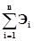
K - капитальные вложения в строительство основных фондов природоохранного назначения (тыс. руб.);
Ен - нормативный коэффициент сравнительной эффективности капитальных вложений природоохранного назначения;
С - годовые эксплуатационные расходы по содержанию и обслуживанию основных фондов природоохранного назначения (тыс. руб./год).
Этот показатель отражает величину экономического эффекта от природоохранных мероприятий, приходящегося на рубль приведенных затрат, обусловивших получение этого эффекта.
При решении одноцелевой задачи по предотвращению или сокращению негативного воздействия объекта на природную среду полный экономический эффект равен величине годового предотвращенного ущерба:
где 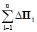
При решении многоцелевой задачи в процессе осуществления природоохранных мероприятий, базирующейся на новой технологии производства или при утилизации отходов производства (в результате чего может быть получен прирост прибыли от использования отходов), полный экономический эффект равен:
где 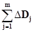
При необходимости определения общей экономической эффективности капитальных вложений в природоохранные мероприятия расчет выполняется отнесением среднегодового полного экономического эффекта (или предотвращенного ущерба) за вычетом эксплуатационных расходов на содержание и обслуживание природоохранных основных фондов к капитальным вложениям, обеспечивающим получение этого результата:
Величина капитальных вложений определяется составом природоохранных мероприятий. В зависимости от стадии разработок проекта следует пользоваться либо укрупненными показателями сметной стоимости отдельных видов мероприятий, либо конкретными сметами на природоохранные объекты и сооружения.
Срок окупаемости капитальных вложений в природоохранные мероприятия определяется величиной, обратной коэффициенту общей экономической эффективности:
10.2.2. Сравнительная экономическая эффективность рассчитывается при сопоставлении вариантов инженерно-технических решений, обеспечивающих природоохранные мероприятия, и характеризует экономическое преимущество одного варианта по сравнению с другими.
Критерием сравнительной экономической эффективности является минимум приведенных затрат, включающих капитальные вложения в строительство природоохранных объектов K, эксплуатационные расходы по их содержанию и обслуживанию С и остаточный ущерб после проведения природоохранных мероприятий (при невозможности его полной ликвидации).
где Зп - приведенные годовые затраты на природоохранные мероприятия (тыс. руб./год);
Ен - нормативный коэффициент эффективности капитальных вложений;
У2 - остаточный ущерб после выполнения природоохранных мероприятий (тыс. руб./год).
Показатели затрат и результатов инженерно-технических решений природоохранного назначения определяются применительно к первому году после ввода объекта в постоянную эксплуатацию. Затраты определяются в годовом исчислении.
В тех случаях, когда варианты инженерно-технических решений природоохранных мероприятий различаются распределением затрат и получаемых результатов во времени, необходимо при определении экономической эффективности привести затраты разных лет к единому базисному году путем умножения их на коэффициент приведения, вычисляемый по формуле:
где β - коэффициент приведения;
t - период приведения в годах;
Енп - норматив приведения разновременных затрат (Енп = 0,08; для рекультивации и восстановления лесных насаждений Енп = 0,03).
10.2.3. Чистый экономический эффект от природоохранных мероприятий Чэ представляет собой превышение среднегодовой величины народнохозяйственного результата (эффекта) над приведенными затратами Зп в годовом исчислении, обусловившими его получение.
Критерием для выбора лучшего варианта
является максимум чистого экономического эффекта 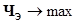
Если периоды строительства, а также сроки эксплуатации систем защитных сооружений в сравниваемых вариантах природоохранных мероприятий примерно одинаковы (различия в сроках не превышают трех лет), а величины затрат в период эксплуатации этих сооружений существенно не меняются, то сравнение вариантов природоохранных мероприятий может производиться по величине их чистого экономического эффекта Чэ, определяемого по формуле (10.8).
10.3. Предотвращенный экологический ущерб от загрязнения (нарушения) окружающей среды представляет собой оценку в денежной форме возможных отрицательных последствий загрязнения (нарушения) природной среды, которые удалось избежать в результате осуществления природоохранных мероприятий на проектируемом объекте.
Величина предотвращенного ущерба ΔП при осуществлении природоохранных мероприятий равна разности между расчетными величинами ущерба до осуществления защитных мероприятий У1 и остаточного ущерба после проведения этих мероприятий У2:
Следует учитывать прямой и косвенный ущербы, которые в свою очередь могут быть экономическими, социально-экономическими и эколого-экономическими.
10.4. Прямой ущерб, проявляется непосредственно на объектах, расположенных в зоне негативного воздействия промышленного объекта или сооружения.
Косвенный ущерб проявляется в смежных производствах, на объектах непроизводственной сферы и в природной среде. Например, потери продукции промышленного предприятия из-за снижения производительности труда и заболеваний трудящихся вследствие воздействия загрязненной среды на население.
Экономический ущерб - это затраты в стоимостном выражении, возникающие вследствие загрязнения окружающей среды, т.е. превышения содержания различных веществ в окружающей среде по сравнению с ее естественным состоянием, либо сверх предельно допустимых концентраций, регламентированных нормами.
Социально-экономический ущерб - это стоимостные потери, связанные с увеличением заболеваемости населения в зоне влияния источника загрязнения и затраты на восстановление трудоспособности людей и социальное страхование.
Эколого-экономический ущерб - это потери природных ресурсов, обусловленные ухудшением состояния окружающей среды, вследствие влияния промышленного производства или других видов хозяйственной деятельности и затраты на их компенсацию или восстановление.
Размер ущерба определяется как сумма ущербов, наносимых отдельным видам реципиентов в пределах зоны воздействия проектируемого объекта, и определяется для каждого вида природных ресурсов.
10.5. При наличии источника загрязнения, воздействующего одновременно на все или несколько видов природных ресурсов - атмосферу, воду, территорию и т.д., необходимо проводить оценку комплексного ущерба.
Комплексный ущерб (Пнх) оценивается как сумма локальных ущербов от различных видов (i, ..., n) природонарушающих воздействий на (j, ..., m) виды реципиентов:
где i - вид ущерба (i, ..., n);
j - вид реципиента (j, ..., m);
10.6. Оценка величины предотвращенного ущерба от загрязнения водной среды проводится на основе региональных показателей удельного ущерба, представляющий собой удельные стоимостные оценки ущерба на единицу (1 условную тонну) приведенной массы загрязняющих веществ, по формуле:
где 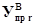
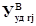
- приведенная масса загрязняющих веществ, ликвидируемых в результате природоохранной деятельности и осуществления соответствующих водоохранных мероприятий в r-том районе в течение расчетного периода, (тыс. усл. тонн/год);
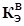
Jд - индекс-дефлятор по отраслям промышленности, устанавливаемый Минэкономикой России на рассматриваемый период и доводимый Госкомэкологии России до территориальных природоохранных органов.
Приведенная масса загрязняющих веществ определяется по формуле:
где 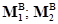
10.7. Приведенная масса загрязняющих веществ рассчитывается по формуле;
- для k-го конкретного объекта или направления водоохранной деятельности региона:
- для r-го региона (района) в целом:
где 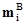
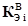
N - количество учитываемых загрязняющих веществ.
Для расчетов приведенной массы
загрязнений используются утвержденные значения предельно допустимых
концентраций (ПДК) загрязняющих веществ в воде водоемов рыбохозяйственного
значения (как наиболее жесткие). С помощью ПДК определяются коэффициенты
эколого-экономической опасности загрязняющих веществ (как величина обратная
ПДК: 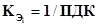
Показатель m определяется на основе данных статистической отчетности предприятий и организаций (форма 2ТП - «Водхоз»), данных гидрохимических лабораторий, аттестованных на право проведения соответствующих анализов, материалов контрольных служб территориальных природоохранных органов и гидрометеорологии, данных проектных материалов и др.
10.8. Укрупненная оценка величины предотвращенного ущерба от выброса загрязняющих веществ в атмосферный воздух может проводиться как для одного крупного источника или группы оцениваемых источников, так и для региона в целом.
При укрупненных оценках предотвращенного ущерба (либо оценки прогнозируемой величины предотвращенного ущерба) для территории в качестве оцениваемой группы источников могут рассматриваться все источники объекта, рассматриваемые как единый «приведенный» источник. В этих случаях для определения величины предотвращенного ущерба используют усредненные расчетные значения ущерба на единицу приведенной массы атмосферных загрязнений (удельные ущербы)
где 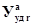
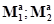
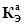
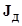
Приведенная масса загрязняющих веществ для проектируемого объекта определяется по формуле:
где 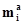
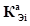
i - индекс загрязняющего вещества или группы загрязняющих веществ;
N - количество учитываемых загрязняющих веществ.
10.9. Оценка величины предотвращенного ущерба от деградации почв и земель производится по следующей формуле:
где 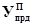
Нс - нормативная стоимость земель, (тыс. руб./га);
S - площадь почв и земель, сохраненная от деградации за отчетный период времени в результате проведенных природоохранных мероприятий, га;
Кэ - коэффициент экологической ситуации и экологической значимости территории;
Кп - коэффициент для особо охраняемых территорий.
Оценка величины предотвращенного в результате природоохранной деятельности ущерба от загрязнения земель химическими веществами проводится по следующей формуле:
где 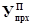
Si - площадь земель, которую удалось предотвратить от загрязнения химическим веществом i-го вида в отчетном году, (га);
Кхп - повышающий коэффициент за предотвращение (ликвидацию) загрязнения земель несколькими (n) химическими веществами.
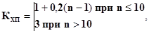
Общая величина предотвращенного ущерба (Упр) от ухудшения и разрушения почв и земель в рассматриваемом районе за отчетный период времени определяется суммированием всех видов предотвращенного ущерба:
где 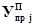
10.10. Для расчета предотвращенного ущерба от реализации комплексных компенсационных мер по снижению прогнозируемого ущерба растительности и животному миру при строительстве и эксплуатации хозяйственных объектов используется формула:
где 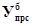
- суммарная численность объектов животного и растительного мира (комплекс из видов от 1 до N), которая может быть потеряна в результате нерегламентированного воздействия, (шт.);
- такса ущерба биоресурсам (средняя величина от суммы такс по каждому виду из анализируемого комплекса видов данной территории), (руб.).
10.11. Общая величина предотвращенного экологического ущерба от загрязнения окружающей природной среды за отчетный период времени на территории определяется по формуле:
(10.21)
где - оценка в денежной форме величин предотвращенных ущербов, определенных с учетом суммарных объемов снижения негативных нагрузок соответственно атмосферному воздуху, водным ресурсам, биоресурсам, почвам и земельным ресурсам (тыс. руб.);
Удрk - другие виды предотвращенного ущерба помимо ущерба от загрязнения природной среды, имеющие место в результате деятельности природоохранных органов, (тыс. руб.);
К - направление деятельности природоохранных органов;
j - вид природного ресурса;
Успj - несостоявшийся ущерб за счет снижения объемов выбросов, сбросов загрязняющих веществ в атмосферный воздух, водные объекты, а также снижения загрязнения почв и земельных ресурсов, произошедших по причинам, не зависящим от деятельности природоохранных органов (например, спад производства), (тыс. руб.);
Кэс - корректировочный коэффициент, учитывающий экологическое состояние территории, потери экологического качества окружающей среды в результате хозяйственной деятельности в r-том районе, согласовывается соответствующими подразделениями Госкомэкологии России.
Определение показателей удельного ущерба, приведенных масс сбрасываемых загрязняющих веществ, коэффициентов экологической значимости состояния компонентов среды, индексов-дефляторов по отраслям промышленности, нормативов стоимости земель и других параметров, необходимых для расчета по приведенным формулам предотвращенного ущерба, осуществляется в соответствии с требованиями «Временной методики определения предотвращения экологического ущерба». - М.: Госкомэкология России, 1999.
1. Общие требования
1. Закон Российской Федерации «Об охране окружающей природной среды»(19.12.91 г.)
2. Закон Российской Федерации «О санитарно-эпидемиологическом благополучии населения» (30.03.99 г.)
3. «Основы законодательства Российской Федерации об охране здоровья граждан» (22.07.93 г.)
4. Закон Российской Федерации «Об административной ответственности предприятий, учреждений, организаций и объединений за правонарушения в области строительства» (17.12.92 г.)
5. Закон «Об экологической экспертизе» № 174-ФЗ от 23.11.95 г.
6. Закон «Об особо охраняемых природных территориях» № 33-ФЗ от 14.03.95 г.
7. Градостроительный кодекс Российской Федерации (07.05.98 г.).
8. СНиП 11-01-95. «Инструкция о порядке разработки, согласования, утверждения и состав проектной документации на строительство предприятий, зданий и сооружений».
9. СНиП 2.01.01-82. Строительная климатология и геофизика.
10. СНиП 2.06.15-85. Инженерная защита территории от затопления и подтопления.
11. СНиП 11-89-80* (изд. 1995 г.). Генеральные планы промышленных предприятий.
12. СНиП 2.07.01-89* (изд. 1994 г.). Градостроительство. Планировка и застройка городских и сельских поселений.
13. Письмо Госкомприроды СССР № 08-18\57-621 от 13.05.91 г. «Об учете в практической работе международной Конвенции об оценке воздействия на окружающую среду».
14. Постановление Правительства Российской Федерации № 632 «Об утверждении Порядка определения платы и ее предельных размеров за загрязнение окружающей природной среды, размещение отходов, другие виды вредного воздействия» (28.08.92 г.).
15. Постановление Правительства Российской Федерации № 942 «О государственной экологической экспертизе» от 22.09.93 г.
16. Постановление Правительства Российской Федерации № 675 «О декларации безопасности промышленного объекта Российской Федерации» от 01.07.95 г.
17. РДС 11-201-95. «Инструкция о порядке проведения государственной экспертизы проектов строительства» № 18-39 от 24.04.95 г., Госстрой РФ.
18. СП 11-101-95. «Порядок разработки, согласования, утверждения и состав обоснований инвестиций в строительство предприятий, зданий и сооружений» № 18-63 от 30.06.95 г., Минстрой РФ.
19. Постановление Госстроя Российской Федерации № 18-41 от 29.10.93 г. «О порядке проведения государственной экспертизы градостроительной документации и проектов строительства в Российской Федерации».
20. «Методические рекомендации по разработке отраслевых схем развития и размещения производительных сил» (СОПС, 1992 г.).
21. «Положение об оценке воздействия на окружающую среду в Российской Федерации» № 222 от 18.07.94 г., Минприрода России.
22. «Инструкция о составе, порядке разработки, согласования и утверждения градостроительной документации», № 18-58 от 22.12.93 г. Госстрой России.
23. ГОСТ 17.00.04-90. Система в области охраны природы и улучшения использования природных ресурсов. «Экологический паспорт промышленного предприятия. Основные положения».
24. СП 11-102-97. Инженерно-экологические изыскания для строительства (15.08.97 г.), Госстрой России.
2. Охрана и рациональное использование земельных ресурсов
1. «Земельный кодекс РСФСР» (25.04.91 г.).
2. Закон РСФСР «О плате за землю» (11.11.91 г.).
3. Закон Российской Федерации «О недрах» (21.02.92 г.).
4. Инструкция по применению Закона Российской Федерации «О плате за землю», утверждена Министерством финансов Российской Федерации № 21, Комитетом по земельной реформе и земельным ресурсам при правительстве Российской Федерации № 2-10-1/1020, Государственной налоговой службой Российской Федерации № 11 от 17.04.92 г.
5. Постановление Правительства Российской Федерации № 594 «Об утверждении положения о порядке осуществления государственного контроля за использованием и охраной земель» от 17.08.92 г.
6. Постановление Правительства Российской Федерации № 77 «Об утверждении Положения о порядке возмещения убытков собственникам земли, землевладельцам, землепользователям, арендаторам и потерь сельскохозяйственного производства» от 28.01.93 г.
7. Постановление правительства Российской Федерации № 828 «Об утверждении Положения о порядке и условиях взимания платы за право на пользование недрами, акваторией и участками морского дна» от 28.10.92 г.
8. «Инструкция о порядке предоставления горных отводов для использования недр в целях, не связанных с добычей полезных ископаемых» (11.12.84 г.), Госгортехнадзор СССР.
9. «Положение о порядке согласования с органами Госгортехнадзора СССР проектной документации на строительство, реконструкцию и расширение предприятий» (30.05.88 г.), Госгортехнадзор СССР.
10. СНиП 11-02-96. Инженерные изыскания для строительства: Основные положения. № 18-77 от 29.10.96 г.
11. Критерии оценки экологической обстановки территорий для выявления чрезвычайной экологической ситуации и зон экологического бедствия. МЧС России, 1992 г.
12. ГОСТ 17.4.1.03-84. Охрана природы. Почвы. Термины и определения химического загрязнения.
13. ГОСТ 17.4.2.01-81. Охрана природы. Почвы. Номенклатура показателей санитарного состояния.
14. ГОСТ 17.4.2.02-83. Охрана природы. Почвы. Номенклатура показателей пригодности нарушенного плодородного слоя почв для землевания.
15. ГОСТ 17.4.3.02-85. Охрана природы. Почвы. Требования к охране плодородного слоя почвы при производстве земляных работ.
16. ГОСТ 17.4.3.04-85. Охрана природы. Почвы. Общие требования к контролю и охране от загрязнения.
17. ГОСТ 17.5.1.01-83. Охрана природы. Земли. Рекультивация земель. Термины и определения.
18. ГОСТ 17.5.1.02-83. Охрана природы. Земли. Классификация нарушенных земель для рекультивации.
19. ГОСТ 17.5.1.03-86. Охрана природы. Земли. Классификация вскрышных и вмещающих пород для биологической рекультивации земель.
20. ГОСТ 17.5.1.06-84. Охрана природы. Земли. Классификация малопродуктивных угодий для землевания.
21. ГОСТ 17.5.3.04-83. Охрана природы. Земли. Общие требования к рекультивации земель.
22. ГОСТ 17.5.3.05-84. Охрана природы. Земли. Рекультивация земель. Общие требования к землеванию.
23. ГОСТ 17.5.3.06-85. Охрана природы. Земли. Рекультивация земель. Требования к определению норм снятия плодородного слоя почвы при производстве земляных работ.
24. Методические указания по составлению проектов рекультивации земель, нарушенных горными работами. - М.: Гидроруда. 1986 г.
25. Рекомендации по снятию плодородного слоя почвы при производстве горных, строительных и других работ. - М.: Колос. 1983 г.
26. Положение о порядке передачи рекультивированных земель землепользователям предприятиями, организациями и учреждениями, разрабатывающими месторождения полезных ископаемых и торфа, проводящими геологоразведочные, изыскательские, строительные и иные работы, связанные с нарушением почвенного покрова. - М.: Колос. 1978 г.
27. Указания по разработке рабочих проектов и производству работ по выполаживанию и засыпке оврагов при землеустройстве. - М.: Колос. 1982 г.
28. Единые правила охраны недр при разработке месторождений твердых полезных ископаемых. - М.: Госгортехнадзор СССР, 1985 г.
29. Положение о порядке выдачи разрешений на застройку площадей залегания полезных ископаемых. - М.: Госгортехнадзор СССР, 1985 г.
30. СП 11-105-97. Инженерно-геологические изыскания для строительства.
3. Охрана атмосферного воздуха от загрязнения
1. Закон «Об охране атмосферного воздуха» № 96-ФЗ, 4.05.99 г.
2. ГОСТ 17.2.1.01-76. Охрана природы. Атмосфера. Классификация выбросов по составу.
3. ГОСТ 17.2.1.03-84. Охрана природы. Атмосфера. Термины и определения контроля загрязнения.
4. ГОСТ 17.2.1.04-77. Охрана природы. Атмосфера. Метеорологические аспекты загрязнения и промышленные выбросы. Основные термины и определения.
5. ГОСТ 17.2.3.02-78. Охрана природы. Атмосфера. Правила установления допустимых выбросов вредных веществ промышленными предприятиями.
6. ГОСТ 17.2.4.02-81. Охрана природы. Атмосфера. Общие требования к методам определения загрязняющих веществ.
7. СНиП 11-12-77. Защита от шума.
8. «Каталог шумовых характеристик технологического оборудования» (к СНиП 11-12-77), М.: 1988 г.
9. ГОСТ 12.1.023-80. ССБТ. Шум. Методы установления значений шумовых характеристик стационарных машин.
10. «Инструкция о порядке рассмотрения, согласования и экспертизы воздухоохранных мероприятий и выдачи разрешений на выброс загрязняющих веществ в атмосферу по проектным решениям». ОНД 1-84, 1984 г.
11. Методика расчета в атмосферном воздухе вредных веществ, содержащихся в выбросах предприятий. ОНД-86, - Л.: Гидрометеоиздат, 1987 г.
12. Временная методика нормирования промышленных выбросов в атмосферу (расчет и порядок разработки нормативов предельно допустимых выбросов). - Л.: ГГО им. А.И. Воейкова, 1981 г.
13. РД 50-210-80. Методические указания по внедрению ГОСТ 17.2.3.02-78 Охрана природы. Атмосфера. Правила установления ПДВ вредных веществ промышленными предприятиями. - М.: Изд-во стандартов, 1981 г.
14. Временные указания по определению фоновых концентраций вредных веществ в атмосферном воздухе для нормирования выбросов и установления предельно допустимых выбросов. - М.: Гидрометеоиздат, 1981 г.
15. РД 52.04.52-85. Методические указания. Регулирование выбросов при неблагоприятных метеорологических условиях - Новосибирск: ЗапсибНИИ Госкомгидромета СССР, 1986 г.
16. Сборник законодательных, нормативных и методических документов для экспертизы воздухоохранных мероприятий. - Л.: Гидрометеоиздат, 1986 г.
17. «Правила охраны атмосферного воздуха» Госкомприрода СССР, 1990 г.
18. Сборник методик по расчету выбросов загрязняющих веществ различными производствами. - Л.: Гидрометеоиздат, 1986 г.
19. Руководство по проектированию санитарно-защитных зон промышленных предприятий. - М.: Стройиздат, 1984 г.
20. Типовая инструкция по организации системы контроля промышленных выбросов в атмосферу в отраслях промышленности. - Л.: Изд-во ГГО им. А.И. Воейкова, 1986 г.
21. Сборник методик по определению концентраций загрязняющих веществ в промышленных выбросах. - М.: Гидрометеоиздат, 1984 г. - Ч. 1.
22. Сборник отраслевых методик измерений концентраций загрязняющих веществ в промышленных выбросах. - М.: Гидрометеоиздат, 1985 г. - Ч. 2.
23. СП 11-103-97. Инженерно-гидрометеорологические изыскания для строительства.
24. Список предельно допустимых концентраций загрязняющих веществ в атмосферном воздухе населенных мест № 3086-84 (27.08.84 г.), - М.: Минздрав СССР. 1984 г.
25. Ориентировочные безопасные уровни воздействия (ОБУВ) загрязняющих веществ в атмосферном воздухе населенных мест (№ 2847-83 от 24.12.83 г.), - М.: Минздрав СССР. 1984 г.
Примечание: Списки ПДК и ОБУВ регулярно дополняются и уточняются Минздравом России.
26. СанПиН 2.2.1/2.1.1 567-96 «Санитарно-защитные зоны и санитарная классификация предприятий, сооружений и иных объектов».
4. Охрана поверхностных и подземных вод от истощения и загрязнения
1. Водный кодекс Российской Федерации» (16.11.95 г.).
2. «Правила охраны поверхностных вод» (21.02.91 г.), Минводхоз СССР.
3. «Положение об охране подземных вод» (07.08.94 г.), Роскомнедра.
4. «Правила охраны от загрязнения прибрежных вод морей» (1987 г.), Минводхоз СССР.
5. СНиП 2.01.14-83. Определение расчетных гидрологических характеристик.
6. СНиП 2.04.02-84*. (изд. 1996 г.). Водоснабжение. Наружные сети и сооружения.
7. СНиП 2.04.03-85. Канализация. Наружные сети и сооружения.
8. СНиП 3.05.04-85*. (изд. 1990 г.). Наружные сети и сооружения водоснабжения и канализации.
9. СН 496-77. Временная инструкция по проектированию сооружений для очистки поверхностных сточных вод.
10. ГОСТ 17.1.1.01-77. Охрана природы. Гидросфера. Использование и охрана вод. Основные термины и определения.
11. ГОСТ 17.1.1.02-77. Охрана природы. Гидросфера. Классификация водных объектов.
12. ГОСТ 17.1.1.03-78. Охрана природы. Гидросфера. Классификация водопользования.
13. ГОСТ 17.1.1.04-80. Охрана природы. Гидросфера. Классификация подземных вод по целям водопользования.
14. ГОСТ 17.1.3.04-82. Охрана природы. Гидросфера. Общие требования к охране поверхностных и подземных вод от загрязнения пестицидами.
15. ГОСТ 17.1.3.05-82. Охрана природы. Гидросфера. Общие требования к охране поверхностных и подземных вод от загрязнения нефтью и нефтепродуктами.
16. ГОСТ 17.1.3.06-82. Охрана природы. Гидросфера. Общие требования к охране подземных вод.
17. ГОСТ 17.1.3.11-84. Охрана природы. Гидросфера. Общие требования охраны поверхностных и подземных вод от загрязнения минеральными удобрениями.
18. ГОСТ 2761-84. Источники централизованного хозяйственно-питьевого водоснабжения. Гигиенические, технические требования и правила выбора.
19. ГОСТ 2874-82. Вода питьевая. Гигиенические требования и контроль за качеством.
20. ГОСТ 25150-82. Канализация. Термины и определения.
21. ГОСТ 25151-82. Водоснабжение. Термины и определения.
22. Методические указания по применению правил охраны поверхностных вод от загрязнения сточными водами. - Москва-Харьков: Минводхоз СССР, Минздрав СССР, Минрыбхоз СССР, ВНИИВО, 1982 г.
23. Методические указания по установлению предельно допустимых сбросов (ПДС) веществ, поступающих в водные объекты со сточными водами. - М.: Минводхоз СССР, 1982 г.
24. ИВН 33-5.1.02-83. Инструкция о порядке согласования и выдачи разрешений на специальное водопользование.- М.: Минводхоз СССР, 1984 г.
25. ИВН 23-5.3.03-85. Инструкция. Классификация источников загрязнения водных объектов. - М.: Минводхоз СССР, 1985 г.
26. ИВН 33-5.1.07-87. Методические указания о составе, содержании, порядке разработки, согласования, утверждения и уточнения схем комплексного использования и охраны водных ресурсов. - М.: Минводхоз СССР, 1987 г.
27. Укрупненные нормы водопотребления и водоотведения для различных отраслей промышленности. - М.: Стройиздат, 1982 г.
28. Временные рекомендации по проектированию сооружений для очистки поверхностного стока с территории промпредприятия и расчету условий выпуска его в водные объекты. - М.: ВНИИВОДГЕО Госстроя СССР, ВНИИВО Минводхоза СССР, 1983 г.
29. Рекомендации по проведению гидрохимического опробования и физико-химических исследований для оценки загрязнения подземных вод. - М.: Стройиздат, 1986 г.
30. Рекомендации по размещению и проектированию выпусков сточных вод. - М.: Госкомгидромет СССР, 1981 г.
31. Правила приема производственных сточных вод в системы канализации населенных пунктов. - М.: АКХ, 1988 г.
32. Рекомендации по прогнозированию качества поверхностных вод с учетом изменения антропогенной нагрузки и режима водопользования, - М.: Минтрансстрой СССР, 1984 г.
33. ОНД 1-86. Указания о порядке рассмотрения и согласования органами рыбоохраны намечаемых решений и проектной документации на строительство предприятий, зданий и сооружений. - М.: Минрыбхоз ССР, 1986 г.
34. Предельно допустимые концентрации (ПДК) и ориентировочные безопасные уровни воздействия (ОБУВ) вредных веществ в воде водных объектов хозяйственно-питьевого и культурно-бытового водопользования. (№ 2932-83 от 24.10.83 г.) - М.: Минздрав СССР. 1986 г.
35. Обобщенные перечни предельно допустимых концентраций вредных веществ в воде водных объектов, используемых для рыбохозяйственных целей. - М.: Минводхоз СССР, Центральная гидрохимическая лаборатория, 1986 г.
5. Охрана окружающей среды при складировании отходов производства
1. Закон «Об отходах производства и потребления» № 89-ФЗ от 24.06.98 г.
2. Временный классификатор токсичных промышленных отходов и методические рекомендации по определению класса токсичности промышленных отходов. - М.: Минздрав СССР. 1987 г.
3. Санитарные правила проектирования, строительства и эксплуатации полигонов захоронения неутилизированных промышленных отходов - М.: Минздрав СССР. 1986 г.
6. Охрана растительности и животного мира
1. «Лесной кодекс Российской Федерации» (1997).
2. Закон «О животном мире» № 52-ФЗ от 24.04.95 г.
7. Экономическая эффективность природоохранных мероприятий
1. Временная типовая методика определения экономической эффективности природоохранных мероприятий и оценки экономического ущерба, причиняемого народному хозяйству загрязнением окружающей среды. - М.: Госстрой СССР, Госплан СССР, АН СССР, 1986 г.
2. Временная методика определения предотвращенного экологического ущерба. - М.: Госкомприрода России, 1999 г.
3. Методика определения размеров ущерба от деградации почв и земель - М.: 1994 г.
4. Методика определения экономической эффективности рекультивации нарушенных земель. - М.: Госагропром СССР, Госплан СССР, 1986 г.
5. Методика определения размеров ущерба от загрязнений земель химическими веществами. - М.: 1993 г.
6. Типовая методика определения экономической эффективности капитальных вложений. - М.: Госстрой СССР, Госплан СССР, 1980 г.
1. Октавные уровни звукового давления L (дБ) в расчетных точках следует определять по формуле:
(1)
где Lp - октавный или октавный эквивалентный уровень звуковой мощности источника шума, дБ;
Ф - фактор направленности источника шума для направления на расчетную точку, безразмерный; для ненаправленного источника шума Ф = 1; при оценке шума, создаваемого источником с неизвестным Ф, его следует считать ненаправленным;
Ω - пространственный угол (в стерадианах), в который излучается шум; для источника шума в пространство Ω = 4π; на поверхности территории или ограждающих конструкций зданий и сооружений Ω = 2π; в двухгранном углу, образованном ограждающими конструкциями зданий и сооружений, Ω = π; в трехгранном углу Ω = π/2.
Источник шума, находящийся над поверхностью территории или на ограждающих конструкциях зданий и сооружений (рис. 1), следует считать расположенным в пространстве при выполнении условия Hиш > 0,5 r1,
где r1 - расстояние от источника шума до расчетной точки;
Hиш - высота источника шума над поверхностью территории.
Численные значения величины 10 · lg Ω составляет 2, 5, 8, 11 дБ при Ω равных соответственно π/2, π, 2π, 4π;
r - расстояние (м) от акустического центра источника шума до расчетной точки; за акустический центр источника шума, расположенного на поверхности, принимается проекция его геометрического центра на поверхность (см. 1); у источника в пространстве акустический и геометрический центры совпадают;
βα - коэффициент поглощения звука в воздухе (дБ/км), принимаемый по таблице 3.1; при r ≤ 50 м поглощение звука в воздухе не учитывается.
|
63 |
125 |
250 |
500 |
1000 |
2000 |
4000 |
8000 |
|
|
Коэффициент поглощения звука в воздухе, βα, дБ/км |
0 |
0,3 |
1,1 |
2,8 |
5,2 |
9,6 |
25 |
83 |
ΔLотр = 3n, дБ - повышение уровня звукового давления вследствие отражений звука от больших поверхностей (земля, стена, угол двух стен), расположенных на расстоянии от расчетной точки, не превышающем 0,1r; n - число отражающих поверхностей (n ≤ 3); поверхность земли не включается в число n, если отражение от нее уже учтено в значении пространственного угла Ω;
ΔLc - дополнительное снижение уровня звукового давления элементами окружающей среды.
(2)
где ΔLэкр - снижение уровня звукового давления экранами, расположенными между источником шума и расчетной точкой, определяемое согласно пп. 3, 6;
ΔLпов - снижение уровня звукового давления поверхностью земли;
βзел - коэффициент ослабления звука полосой лесонасаждений, дБ/м, определяемый по формулам (8);
l - ширина лесополосы, м.
2. При ориентировочных расчетах уровни звука LA, дБА, в расчетных точках допускается определять по формуле
(3)
где LPA - корректированный или эквивалентный корректированный уровень звуковой мощности источника шума, дБА;
r, ΔLотр, Ω - то же, что в формуле (1);
ΔAr - поправка на поглощение звука в воздухе, принимаемая по рис. 2 в зависимости от разности ΔL-A = ΔLРлин - L и учитывающая зависимость звукопоглощения от спектра шума;
LРлин - общий уровень звуковой мощности источника шума, дБ.
(4)
где ΔLCA - снижение уровня звука элементами окружающей среды, где все величины те же, что в формуле (2), но относятся к уровням звука и определяются по формулам 7, 8.
3. Снижение уровня звукового давления экраном (здание, стена, насыпь), расположенным между источником шума и расчетной точкой ΔLэкр1,2,3 (дБ) на каждом из путей, указанных на рис. 3, 4 следует определять по формуле:
(5)
или по номограмме рис. в зависимости от произведения fδi (Гц м), где f - среднегеометрическая частота октавной полосы (Гц) и δi = ai + bi - di; здесь ai + bi - длина кратчайшего пути (м) от источника шума до расчетной точки, проходящего через i-ю кромку экрана, и d - кратчайшее расстояние (м) между источником шума и расчетной точкой.
Результирующее снижение уровня звукового давления ΔLэкр (дБ) следует определять по формуле
(6)
Для источника больших размеров по сравнению с расстоянием до экрана (см. 4) за расстояние ai + bi следует принимать длину кратчайшего пути от расчетной точки до поверхности источника шума, проходящего через верхнюю кромку экрана, а за di - кратчайшее расстояние от расчетной точки до источников шума, ближайших к кромкам экрана.
4. При ориентировочных расчетах снижение уровня звука экранами ΔLAэкр (дБ) допускается определять по формуле (6), в которой величины снижений уровней звука ΔL на каждом из путей, указанных на рис. 3, 4 и следует определять по формуле:
(7)
где δi - то же, что в формуле (5), и ΔLAэкр поправка (дБА), значения которой приведены на рис. 6 в зависимости от ΔL-A = LPлин - LPA.
5. При распространении звука над поверхностью земли, поросшей травой (например, над полем с сельскохозяйственными растениями) или покрытой снегом, звук претерпевает дополнительное снижение уровня ΔLпов (дБ), которое определяется в следующей последовательности. Определяют нижнюю fн и верхнюю fв границы интервала частот, в котором происходит снижение уровня шума по формулам
или по номограмме рис. 7, где r, Hи.ш, Hр.т - расстояния (м), изображенные на рис. 1. Формулы (8) справедливы при условии Hр.т ≥ 1 м; Hи.ш ≥ 1 м. Затем для октавных полос со среднегеометрическими частотами f (Гц) из интервала fВ - fН определяют снижение уровня ΔLпов по формуле
* При расчете ΔLпов акустический центр источника принимается совпадающим с его геометрический центром независимо от соотношения величин Hи.ш и r1 на рис. 4.
6. При совместном ослаблении шума экраном и поверхностью с травяным или снежным покровом действия этих двух факторов взаимосвязаны, и величину ΔLэкр + ΔLпов в формуле (2) следует заменить на ΔLэкр+пов, которая вычисляется по нижеизложенному правилу.
Для каждого из участков ai, bi; на рис. 3 определяют ΔLпов согласно п. 5. Затем ΔLповi на пути ai + bi равную (ΔLповai + ΔLповbi) складывают арифметически с ΔLэкрi, определенным по формуле (5) или номограмме рис. 5 В заключение полученные снижения уровней шума на каждом из трех путей рис. 3 суммируют логарифмически по формуле (6).
Если при проектировании экрана не учитывалось уже имеющееся затухание ΔLпов реальное снижение шума построенным экраном может оказаться на 4 - 5 дБ ниже ожидаемого, а в некоторых случаях шум может даже возрасти.
7. При ориентировочных расчетах снижение уровня звука над поверхностью, поросшей травой или покрытой снегом ΔLAпов (дБА), допускается определять по формуле
8. Снижение шума при распространении его сквозь плотную полосу лесонасаждений с деревьями высотой не менее 5 м с заполнением подкронового пространства кустарником оценивают коэффициентом ослабления звука полосами лесонасаждений βзел, (дБ/м). Коэффициент βзел равен снижению уровня звукового давления на 1 м лесополосы и определяется по формуле
где f - среднегеометрическая частота октавной полосы, Гц. При расчете в дБА принимается βзел = 0,08 дБА/м.
Снижение шума полосами лесонасаждений оценивается при помощи формулы (11) для ширины полосы L не более 100 м. При ширине полосы, превышающей 100 м, снижение шума принимается постоянным, соответствующим L = 100 м.
Рис. 1. Расчетная схема для определения ожидаемых уровней шума:
и.ш - источник, шума; а.ц - акустический центр; р.т - расчетная точка
Рис. 2. График для определения поправки
Рис. 3. Расчетная схема для определения акустической эффективности экрана-стенки
Рис. 4. Расчетные схемы для определения эффективности экранирования шума:
а - зданием; б - откосом выемки; в - стенкой в случае крупноразмерного источника шума.
Рис. 5. График для определения снижения уровней звукового давления экрана
Рис. 6. График для определения поправки
Рис. 7. График для определения интервала частот, в которых происходит снижение уровней звукового давления вследствие влияния покрытия поверхности территории:
1 - нижняя граница частот; 2 - верхняя граница частот для различных источников шума; ... определение интервала частот при r = 140 м и Hр.т · Hи.ш = 1 м2
1. При сбросе сточных вод в реки и водоемы увеличение концентрации взвешенных веществ в максимально загрязненной струе водного объекта на расстоянии L от выпуска в общем виде определяется формулой:
где Сст i - концентрация взвешенных веществ в сточных водах, поступающих через выпуски, расположенные у берега, примыкающего к максимально загрязненной струе;
Сст k - то же через все выпуски, расположенные на противоположном берегу;
Се - содержание взвешенных веществ в воде водного объекта выше первого по течению выпуска сточных вод;
i - число выпусков, образующих максимально загрязненную струю;
k - число выпусков, образующих на противоположном берегу минимально загрязненную струю;
ni - разбавление сточных вод в максимально загрязненной струе на расстоянии Li от соответствующего выпуска до рассчитываемого створа;
nk - разбавление сточных вод в минимально загрязненной струе на расстоянии Lk от соответствующего выпуска до того же рассчитываемого створа.
2. Концентрация консервативных* вредных веществ в максимально загрязненной струе расчетного створа определяется по формуле:
где Cст i и Cст k - концентрация расчетного консервативного вещества в сточных водах выпусков с индексом i - у берега, с которого производится выпуск стоков, с индексом k - с противоположного берега;
Се - концентрация того же вещества в воде водного объекта выше первого по течению выпуска сточных вод;
m - номера выпусков сточных вод с берега, примыкающего к максимально загрязненной струе;
Z - то же с противоположного берега.
* Вещества, концентрация которых изменяется только путем разбавления, называются консервативными; вещества, концентрация которых воде водного объекта изменяется в результате физико-химических и биохимических процессов, - неконсервативными.
3. Разбавление сточных вод в максимально загрязненной струе определяется по формуле:
где a - коэффициент смешения для максимально загрязненной струи;
q - расход сточных вод, м3/с;
Q - расход воды в реке 95 % обеспеченности, м3/с.
Разбавление сточных вод в минимально загрязненной струе определяется по формуле:
где β - коэффициент смешения для минимально загрязненной струи.
4. Концентрация неконсервативных органических веществ, подвергающихся в водном объекте биохимической деструкции, определяется по формуле:
где k - коэффициент неконсервативности загрязняющего вещества, одинаковый для сточных вод и воды водного объекта (определяется экспериментально);
Cст i и Сст k - концентрация расчетных неконсервативных веществ в сточных водах выпусков с индексом i - у берега, с которого производится выпуск стоков, с индексом k - с противоположного берега;
t1 - время перемещения воды в водном объекте от первого (верхнего) выпуска до расчетного створа;
ti и tk - то же от соответствующего выпуска до расчетного створа.
5. Температура воды водного объекта при сбросе сточных вод (без учета остывания) определяется по формуле:
где Te - температура воды водного объекта выше выпуска сточных вод;
Ti - температура сточных вод, поступающих с берега, примыкающего к максимально загрязненной струе;
Tk - то же с противоположного берега.
Разбавление сточных вод в реках рассчитывается по методу Фролова-Родзиллера, в водоемах и водохранилищах - методами, предложенными Руффелем М.А. или Караушевым А.В. При определении коэффициентов смешения учитывают извилистость реки, место расположения выпусков, турбулентность потока, шероховатость русла и другие гидравлические параметры приемника сточных вод.
6. В практике предварительных расчетов широко применяется понятие кратности разбавления сточных вод.
Кратность разбавления «n» является наиболее универсальной характеристикой приемника сточных вод, показывающей, во сколько раз снизится концентрация загрязняющих веществ в воде водного объекта на участке от места сброса до расчетного створа. При известном фоновом загрязнении вод водного объекта кратность разбавления определяется формулой:
где Cст - концентрация загрязняющего вещества в сточных водах, мг/л;
Се - концентрация загрязняющего вещества в воде водного объекта, мг/л;
Сmax - максимальная концентрация загрязняющего вещества в заданном расчетном створе, мг/л.
|
ОТХОДЫ |
СОСТАВ ОТХОДОВ |
АГРЕГАТНОЕ СОСТОЯНИЕ |
МЕТОДЫ ПЕРЕРАБОТКИ И ЗАХОРОНЕНИЯ |
|
|
1. |
Гальванических производств* |
Слабокислые или щелочные, содержащие соли металлов или их гидрооксиды |
Жидкие влажностью 80 - 95 % по массе |
Физико-химический метод переработки, заключающийся в понижении валентности некоторых металлов (Cr, Mn) нейтрализации, осаждении гидрооксидов и др. нерастворимых солей, фильтрации. Осадок после фильтрации передается на полигон захоронения, фильтрат на очистку. |
|
2. |
Шламовые осадки очистных сооружений* |
То же, содержащие минеральные соли, соли металлов или их гидрооксиды |
Жидкие влажностью 80 - 90 % по массе |
То же |
|
3. |
Содержащие мышьяк: |
Мышьяковый и мышьяковистый ангидриды и др. соединения мышьяка в смеси с другими солями |
Жидкие влажностью 85 - 98 % по массе |
Физико-химический метод переработки, заключающийся в переводе соединений мышьяка в арсенид кальция, отстаивании и фильтрации. Осадок после фильтрации передается на полигон захоронения, фильтрат - на выпарку. |
|
а) жидкие |
||||
|
б) твердые и смолообразные |
Соли мышьяка |
Твердые влажностью 10 - 15 % по массе |
Затаривание в герметичные контейнеры и передача на полигон захоронения |
|
|
4. |
Содержащие цианистые соединения |
Цианистые соединения |
Твердые, жидкие |
Физико-химический метод переработки, заключающийся в дроблении твердых отходов и перемешивании их с жидкими отходами или водой, переводе цианидов в цианаты, отстаивании и фильтрации. Осадок после фильтрации передается на полигон захоронения, фильтрат - на локальные очистные сооружения |
|
5. |
Органические горючие твердые |
Обтирочные материалы, ветошь, загрязненные опилки и деревянная тара, смолы, мастика, промасленная бумага и упаковка, обрезки пластмасс, остатки лакокрасочных материалов, пестициды. |
Твердые |
Термическое обезвреживание с утилизацией тепла отходящих газов в котлах-утилизаторах с системой очистки отходящих газов от пыли, паров хлористого водорода, фтористого водорода и оксидов серы. Зола и шлак от сжигания отходов транспортируются на полигон захоронения. |
|
То же жидкие |
Жидкие нефтепродукты, не подлежащие регенерации, масла, загрязненные растворители, бензин, керосин, нефть, мазут |
Жидкие влажностью до 15 % по массе |
Тоже |
|
|
То же пастообразные |
Загрязненные лаки, краски, эмали, смолы, масла, смазки. |
Пастообразные влажностью до 10 % по массе |
Тоже |
|
|
6. |
Жидкие органические горючие, содержащие не менее 40 % хлора |
Загрязненные растворители, кубовые остатки |
Пастообразные влажностью до 15 % по массе |
Термическое обезвреживание с утилизацией тепла отходящих газов в котлах утилизаторах с системой утилизации хлористого водорода в виде раствора соляной кислоты, хлористого кальция или других солей |
|
7. |
Сточные воды, не обезвреживаемые существующими физико-химическими и биологическими методами |
Слабокислые или щелочные растворы, содержащие органические и минеральные соли и вещества. |
Жидкие влажностью 80 - 98 % по массе |
Термическое обезвреживание с последующей очисткой от уноса солей. Смесь минеральных солей, образующаяся в результате термического обезвреживания, выводится из процесса фильтрацией или сушкой и транспортируется на полигон захоронения. |
|
8. |
Отходы гальванических производств |
Смесь солей металлов или их гидрооксидов |
Твердые влажностью 10 - 15 % по массе |
Транспортируются на полигон захоронения. |
|
9. |
Ртутьсодержащие отходы |
Неисправные ртутные, дуговые и люминесцентные лампы |
Твердые |
Демиркуризация ламп с утилизацией ртути и др. ценных металлов |
|
10. |
Песок, загрязненный нефтепродуктами |
Песок и нефтепродукты |
Твердые влажностью 1 до 10 % по массе |
Прокаливание с утилизацией песка и последующей очисткой дымовых газов от уноса песка и примесей вредных веществ |
|
11. |
Формовочная земля |
Земля, загрязненная органическими веществами |
То же |
Прокаливание с утилизацией земли и последующей очисткой дымовых газов от уноса земли и примесей вредных веществ |
|
12. |
Испорченные и немаркированные баллоны |
Испорченные баллоны с остатками веществ |
- |
Подрыв баллонов в специальной камере с последующей промывкой и нейтрализацией. Промывочные воды направляются на физико-химическое или термическое обезвреживание |
|
13. |
Сильнодействующие ядовитые вещества |
Мышьяковый и мышьяковистый ангидриды, сулема, соли синильной кислоты, соли нитрилакриловой кислоты |
Твердые, пастообразные |
Затаривание в герметичные контейнеры и захоронение на специальном полигоне. |
* Для предприятий, на которых при соответствующем технико-экономическом обосновании нерациональны обезвреживание и обезвоживание отходов.
** Обезвоженные отходы гальванических производств транспортируются на захоронение только при отсутствии эффективных методов извлечения из них ценных металлов.
Дата сбора данных «___» _______19_ г.
|
ПОКАЗАТЕЛЬ |
ЕДИНИЦА ИЗМЕРЕНИЯ |
ВСЕГО ПО РАЙОНУ |
НОРМАТИВ ПО СНиП 2.07.01-89 |
ПРОГНОЗ НА 20.. Г. |
|
|
1 |
Жилой фонд (всего) |
строений т. м2 |
|||
|
2 |
Обеспеченность населения общей жилой площадью |
м2 чел |
|||
|
3 |
Количество жителей (всего) в том числе: |
тыс. чел. |
|||
|
в муниципальных домах |
« |
||||
|
в ведомственных домах |
« |
||||
|
в частных домах и ЖСК |
« |
||||
|
4 |
Количество детских дошкольных учреждений (ДДУ) |
ед. мест |
В поселениях-новостройках 180 мест на 1 т. чел. в жилой застройке 100 мест |
||
|
5 |
Обеспеченность ДДУ на 100 жит. |
мест |
|||
|
6 |
Количество общеобразовательных школ |
ед. мест |
|||
|
7 |
Обеспеченность школами на 1000 жит. |
мест |
|||
|
8 |
Количество магазинов (всего) в том числе: |
ед. м2 |
|||
|
продовольственные |
« |
||||
|
промтоварные |
« |
||||
|
9 |
Обеспеченность населения магазинами на 1000 жит. |
м2 |
|||
|
10 |
Количество предприятий общепита |
ед. пос. мест |
|||
|
11 |
Обеспеченность предприятиями общепита на 1000 жит. |
пос. мест |
|||
|
12 |
Количество лечебно-профилактических учреждений |
ед. посещ. в смену. |
|||
|
поликлиники взрослые |
« |
||||
|
поликлиники детские |
« |
||||
|
амбулатории, женские конс. |
« |
||||
|
больницы, родильные дома |
койко-мест |
||||
|
13 |
Обеспеченность поликлиниками на 1000 жит. |
посещ. в смену |
|||
|
14 |
Количество учреждений культуры |
ед. |
|||
|
дома культуры (клубы) |
ед. мест |
||||
|
музыкальные школы |
« |
||||
|
кинотеатры |
« |
||||
|
театры |
« |
||||
|
библиотеки |
« |
||||
|
другие учреждения |
« |
||||
|
15 |
Количество объектов бытового обслуживания |
ед. раб. мест |
|||
|
парикмахерские |
« |
||||
|
прачечные |
« |
||||
|
химчистки |
« |
||||
|
ателье пошива |
« |
||||
|
фотографии |
« |
||||
|
мастерские по ремонту: |
|||||
|
обуви |
« |
||||
|
часов |
« |
||||
|
одежды |
« |
||||
|
радиоаппаратуры |
« |
||||
|
металлоизделий |
« |
||||
|
16 |
Обеспеченность услугами бытового обслуживания |
раб. мест |
Дата сбора данных «___» _______19_ г.
|
НАИМЕНОВАНИЕ УЧРЕЖДЕНИЯ |
МЕСТОПОЛОЖЕНИЕ, АДРЕС |
КОЛИЧЕСТВО РАБОЧИХ МЕСТ, ПРОИЗВОДСТВЕННАЯ ПЛОЩАДЬ чел/м2 |
ДЕЙСТВУЮЩИЙ НОРМАТИВ ПО СНиП 2.07.01-89 |
ПРОГНОЗ НА 20.. Г. |
|
|
1 |
Отделение связи |
||||
|
2 |
Телеграф |
||||
|
3 |
Отделения Сбербанка РФ: |
||||
|
в городах |
1 операц. м. на 2 - 3 т. чел. |
||||
|
в сельской местности |
1 операц. м. на 1 - 2 т. чел. |
||||
|
4 |
Районные (городские) суды |
1 судья на 30 чел. |
|||
|
5 |
Юридические консультации |
1 юрист на 10 т. чел. |
|||
|
6 |
Нотариальные конторы |
1 нотариус на 30 т. чел. |
|||
|
7 |
Жилищно-эксплуатационные организации |
1 объект на жилой район с 80 т. чел. |
|||
|
8 |
Гостиницы |
6 мест на 1 т. чел |
|||
|
9 |
Гаражи наземные боксовые |
В соответствии с муниципальными нормами |
|||
|
подземные |
25 машино-мест на 1 т. жителей |
||||
|
10 |
Открытые стоянки: |
||||
|
в жилых районах |
25 % от расчетн парка инд. авт. |
||||
|
в промышленных зонах |
25 % -»- |
||||
|
в общегородских и специализированных центрах |
5 % -»- |
||||
|
в зонах массового отдыха |
15 % -»- |
||||
|
11 |
Холодильники: |
||||
|
в городе |
27 тонн на 1 т. чел. |
||||
|
в сельской местности |
10 тонн на 1 т. чел. |
||||
|
12 |
Фрукто и овощехранилища: |
||||
|
в городе |
128 тонн на 1 т. чел. |
||||
|
в сельской местности |
10 тонн на 1 т. чел. |
||||
|
13 |
Склады продовольственных товаров: |
||||
|
в городе |
77 м2 1 т. чел. |
||||
|
в сельской местности |
19 м2 1 т. чел. |
||||
|
14 |
Склады непродовольственных товаров |
||||
|
в городе |
217 м2 1 т. чел. |
||||
|
в сельской местности |
193 м2 1 т. чел. |
||||
|
15 |
Потребительские склады стройматериалов |
300 м2 1 т. чел |
|||
|
16 |
Склады угля |
« |
|||
|
17 |
Склады дров |
« |
|||
|
18 |
Бюро ритуальных услуг |
1 объект на 0,5 - 1,0 млн. жителей |